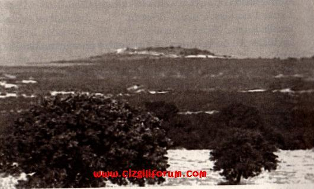
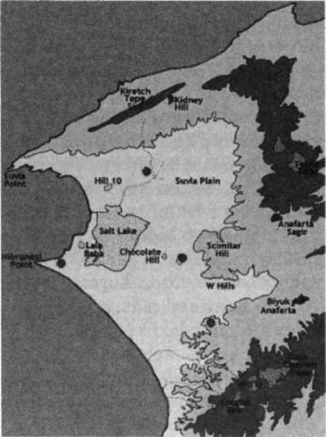
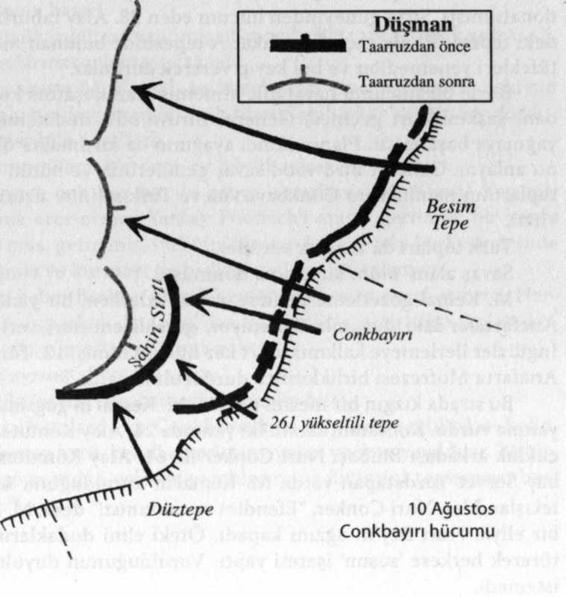

Ancak birkaç siper parçası geri alınabildi. AteĢ barajını aĢmak imkânsızdı.
Ağır kayıp dolayısıyla Faik PaĢa taarruza ara verdi. Liman PaĢa kısa bir ara verilmesini bile doğru bulmamıĢtı. Taarruza devam edilmesini emredince, akĢam yeniden taarruza geçildi. Ölümüne çaba sabaha kadar sürdü. Ancak bir-iki parça siper geri alınabildi.
Yine susmayan makineli tüfekler galip gelmiĢti. Faik PaĢa 30 Haziran sabahı taarruza ara verdi.
Siperler, bağlantı yolları, siperler arası alan, binlerce Ģehit ve ağır yaralıyla dolmuĢtu. SavaĢ alanı bir mezbahayı andırıyordu.
Bugün Enver PaĢa Gelibolu'ya gelmiĢ, durumu incelemiĢ, savaĢları izlemiĢti. Ayrılmadan önce tek sözcüklük bir emir verdi:
“Taarruz!”
Bir Alman mizah dergisinde çıkan
Enver PaĢa'nın karikatürü:Türk Napolyonu
FRANSIZLAR DA çok kayıp vermiĢlerdi. General Gouraud karargâha yakın olan hastanedeki yaralıları ziyaret etmek istedi. Hastane yakındı. Karargâhtan çıkıp hastaneye yürümeye baĢladı.
Ġntepe'deki ve Erenköy'deki bataryalar mermileri oldukça Fransız kesimini ateĢ altına alıyor, sürpriz atıĢlarla Fransızları avlıyorlardı.
Bugün de birkaç mermi atmıĢlardı. Ġntepe'deki mübarek toplardan biri son bir mermi daha savurdu.
Mermi General Gouraud'nun yürüdüğü yola düĢtü, patladı. O tek merminin basıncı Türklerin baĢına kırk bin mermi yağdırmıĢ olan Generali havalandırıp yere çarptı. Kolu ve birkaç yeri kırıldı.
Fransız BaĢkomutanını panik içinde hastane gemisine kaldırdılar. Gemi acele Marsilya'ya hareket etti.
Doktorlar sağ kolunu yoldayken kesmek zorunda kalacaklardı.210
Yerine 1. Fransız Tümeni Komutanı General Bailloud geçti.
FAĠK PAġA'NIN taarruza ara vermesi uygun karĢılanmamıĢtı. Taarruza devam edilecekti.
Ama taarruz etmek için ciddi bir ön hazırlık yapmak, ağır toplar için yeterli mermi yığmak, taarruza katılacak yeni birlik komutanlarının araziyi tanımalarına imkân tanımak, askeri dinlendirmek, en azından su ihtiyacını karĢılamak gerekirdi.
Üst komutanlar çok sabırsızdılar.
Faik PaĢa komutanların öfkesini göze alarak birlikleri bir gün dinlendirdi.
Türk cephesinin sağına kama gibi girmiĢ olan kesime taarruz edecekti. Taarruzu yönetmesi için 1.
Tümen Komutanı Yarbay Cafer Tayyar Bey'i (Eğilmez) görevlendirdi.211
Taarruz 2 Temmuz günü, saat 11.00'de baĢlayacaktı.
Cafer Tayyar Bey daha iyi hazırlanabilmek için taarruzun öğleden sonraya ertelenmesini istedi.
Taarruz 15.00'e ertelendi.
Bir erteleme daha istedi.
Faik PaĢa taarruzu son olarak saat 18.00'e erteledi.212
BU KARARSIZ, belirsiz, bulanık durum Weber PaĢanın sinirlerini bozdu. Ġngilizlerin giriĢecekleri yeni bir taarruzu önleyememek korkusuna kapıldı.
Harekât ġubesi Müdürü YüzbaĢı Mehmet Nihat Bey'i çağırdı. Olası bir Ġngiliz taarruzuna karĢı bir güvenlik önlemi olarak 'Güney Grubu birliklerinin Alçı Tepe'nin gerisine, son savunma çizgisine kadar çekilmeleri için bir emir hazırlamasını' emretti.
Bu emir bugüne kadar dökülen kanların boĢa gitmesi demekti. Böyle bir çekiliĢin neden olacağı felaketleri düĢünen YüzbaĢı Mehmet Nihat'ın ödü koptu. Bu kadar geri çekilmeyi gerektirecek bir durum yoktu. Weber PaĢayı bu tehlikeli emirden caydırmaya çalıĢtı, baĢaramayınca telefonla Ordu Kurmay BaĢkanı Yarbay Kâzım Bey'i aradı. Durumu anlattı. Kâzım Bey müthiĢ kızdı:
"Kesinlikle karĢı dur. Orada görevli bir Türk subayı olduğunu unutma!"
YüzbaĢı emri hazırlamayı ağırdan aldı. Bu arada Kâzım Bey durumu Liman PaĢaya arz etmiĢti.
Liman PaĢa'dan gelen kesin telefon emri üzerine geri çekilme kararı kaldı.
Bu olay Liman PaĢa'nın Weber PaĢaya duyduğu güveni kökünden sarstı. Ġlk fırsatta görevden alacaktı.213
1. TÜMENĠN üç taburunun taarruzu saat 18.00'de baĢladı.
Yan yana dizilmiĢ makineli tüfekler taburları kar gibi eritti. Yollanan takviyeler de büyük kayba uğradı. Ġngiliz siperlerine en çok 30 metre yaklaĢabilmiĢler, orada kalmıĢlardı.
Emir üzerine taarruz gece de sürdürüldü.
Takım ve bölük komutanı subaylar, birlik komutanlığı yapan astsubaylar, çavuĢlar ile askerler, demirden dökülmüĢler gibi gözlerini kırpmadan som ateĢin içine dalıyorlardı.
AteĢ ve kan bayramı sürüyordu.
Emir üzerine sabah da taarruza devam edildi.
Kayıplar daha da arttı.
Faik PaĢa Tümen Komutanının çığlığı üzerine Liman PaĢa'nın sürekli taarruz emrini yok saydı, taarruzu durdurup savunmaya geçilmesini emretti. Durumu Bölge Komutanlığına bildirdi.
Liman PaĢa taarruzun durdurulduğunu öğrenince, Faik PaĢayı görevden aldı.214
FAĠK PAġANIN yerine, hiç vakit geçirmeden Asya yakasındaki birliklerin komutanı olan Mehmet Ali PaĢayı atadı (3 Temmuz).
Mehmet Ali PaĢa aynı gün karargâh kadrosuyla Seddülbahir'e geçti. Emrine verilen 3. Tümen de Çanakkale'den Kilitbahir'e geçmekteydi. Ayrıca Kuzey Grubundan 5. Tümen de emrinde olacaktı. Ġki tümenin toplam gücü 13.000 kiĢiydi.
Görev sınırlıydı: Deniz ile Sığındere arasında, Türk cephesinin gerisine doğru bir kama gibi uzanan yer geri alınacaktı. Ġyi bir hazırlıkla bu sağlanabilirdi.
Mehmet Ali PaĢa kurmaylarıyla bu hazırlık için çalıĢmaya baĢlarken, hemen bu gece saat 03.45'te taarruz etmesi emredildi. Mehmet Ali PaĢa ĢaĢırdı:
"Bu gece mi?"
"Evet, bu gece!"
"Ama efendim..."
"Bu gece!"
3. Tümen Gelibolu yakasına daha yeni geçmiĢti, yoldaydı, yürümekteydi. Ancak gece yarısı cepheye ulaĢabilecekti. 5. Tümen subayları da daha araziyi görmemiĢlerdi. Ordu ve Bölge komutanları 3.
Tümen hiç dinlenmeden, 5. Tümen subayları araziyi hiç görmeden taarruz edilmesini istiyorlardı.
Türk ordusunu iki aydır bu anlayıĢ yönetiyordu. Bölge Komutanı Liman PaĢa'dan, Liman PaĢa Enver PaĢa'dan etkileniyor, çekiniyor ve bu telaĢın, korkunun ve kör inadın bedelini Türk ordusu canı ve kanıyla ödüyordu.
Ne Weber PaĢa'da, ne Mehmet Ali PaĢa'da Ordu Komutanına itiraz edecek cesaret vardı. Mehmet Ali PaĢa'nın Kurmay BaĢkanı BinbaĢı Eggèrt iyi ve yürekli bir kurmaydı. PaĢaların çekindiğini anlayınca, kendi imzasıyla Liman PaĢaya bir telgraf çekerek, durumu kısaca açıkladı ve taarruzun 24 saat ertelenmesini istedi.
PaĢaların beklemediği birĢey oldu: Liman PaĢa bu isteği kabul etti. Taarruz 24 saat sonra, 5 Temmuz Pazartesi sabaha karĢı 03.45'te, ateĢ etmeksizin, baskın tarzında yapılacaktı.
PAZAR akĢamı baskına katılacak birlikler geride yemeklerini yediler, namazlarını kıldılar. Sessiz sedasız ön siperlerdeki yerlerini aldılar. Usta erler el bombalarıyla donatılmıĢ, tüfeklere süngüler erkenden takılmıĢtı.
KonuĢmak, sigara içmek yasaktı.
Türk ve Ġngiliz siperleri arasındaki uzaklık 80-100 metreydi. Siperlerden çıkıp koĢmak ve Ġngiliz siperlerine dalmak iki dakika sürerdi. Sonuç bu iki dakika içinde belli olacaktı.
Türklerin bilmediği bir Ģey vardı. Ġngilizler Türklerin taarruza hazırlandıklarını uçaklar ve gözlem balonuyla anlamıĢlar, taarruzu karĢılamak için gerekli önlemleri almıĢlardı. Zaman onlar için de zor akıyordu. Onlar da sigara içmiyor ve konuĢmuyorlardı.
Saat 03.00'tü.
Emirler verildi. Taarruzu durdurmak, bozmak, engellemek Ġçin Türk mevzilerine yoğun tüfek ve makineli tüfek ateĢi açtılar. Bunu top ateĢi izledi.
Baskın suya düĢmüĢtü.
Türkler emir gereği yanıt vermeden beklediler. Taarruz saati gelince bütün siperlerden iĢaret fiĢekleri gibi komutlar yükseldi: "Hücummm!"
Ġlk sıradaki subay ve askerler siperlerden fırladılar. Bunları altı sıra hücum dalgası izleyecekti.
Ġlk dalga ateĢ duvarını aĢamadı. O iki dakika içinde Ġngiliz siperlerine varılamadı. Siperlerin önünde toprağa düĢtüler. Sonrakiler bu ilk Ģehitlerin üzerine düĢüp kalacaklardı.
Bazı birlikler çok kayıp verme pahasına birkaç yakın siperi geri aldılar. Ama aldıkları siperleri koruyabilecek kadar sayıları kalmamıĢtı. Ġngilizler siperleri yeniden ele geçirdiler.
Mehmet Ali PaĢa taarruzu durdurmak ve savunmaya geçmek gerektiğini görmekteydi. AteĢ engelini aĢmak imkânsızdı. Birlikler eriyordu. Fakat Liman PaĢa Güney Bölge Komutanlığı karargâhına gelmiĢ, taarruza devam edilmesi için bastırmaktaydı.
Mehmet Ali PaĢa'nın karargâhındaki subaylar isyan ettiler. Bu kadar kaybı göze almayı gerektirecek bir durum yoktu. Ġngiliz birliğinin önü kesilmiĢ, kuĢatılma tehlikesi kalmamıĢtı. Mehmet Ali PaĢa, Liman PaĢa'nın gazabından çekinerek, taarruzu kesmedi, bütün yedekleri ateĢe sürdü. BinbaĢı Eggert kadar yürekli değildi.
Bağlantı yolları, hendekler yan yana, üst üste yatan Ģehit ve yaralılarla doluydu. Hava kan, çürümüĢ
ceset ve barut kokuyordu. Yedek birlikler savaĢ dumanı içinde, buralardan zorlukla, istemeseler de Ģehitlere, yaralılara basarak, can yakarak geçtiler, hücum çıkıĢ yerlerine geldiler.
Saati gelince taarruza kalktılar ve ölümün kızıl kucağına koĢtular.
Kayıp dayanılmaz bir sayıya ulaĢtı.
BinbaĢı Eggert'in bir Alman olarak Liman PaĢa'nın acımazlığından, incelikten yoksun askerlik anlayıĢından utandığı anlaĢılıyor. Mehmet Ali PaĢa'dan izin aldı, atını dört nala sürerek karargâha gitti.
Liman PaĢa'nın yanına girdi.
BeĢ dakika sonra dıĢarı çıktı, Mehmet Ali PaĢaya telefon ederek Liman PaĢa'nın taarruzun durdurulmasına izin verdiğini bildirdi.
AteĢ ve kan bayramı sona ermiĢti.
Sekiz gün süren Sığındere savaĢlarında Türklerin kaybı 16.000 kiĢiydi: 6.000 Ģehit, 10.000 yaralı.
Ġngilizlerin kaybı 5.000'di.215
Yaralılar sargı yerlerine, sahra hastanelerine sığmadı.216
Türk ve Ġngiliz siperleri arasındaki dar alanda üstüste yığılmıĢ binlerce Ģehit vardı. Türkler Ģehitlerini gömmek için 5 saatlik bir ateĢkes önerisinde bulundular.
Ġngilizlerin yaralılarını ve ölülerini toplamalarına, geriye taĢımalarına kaç kez izin vermiĢ, denize dökülen denizcilerini rahatça kurtarmaları için iki kez ateĢ kesmiĢ olan Türkler bu çok insanca dileğin çabucak ve kolayca kabul edileceğini sanıyorlardı. Gereken hazırlıkları yaptılar.
General lan Hamilton bu insanca, sağlık bakımından da zorunlu öneriyi reddetti.
Cesetler kokmaya baĢlamıĢtı. Koku uygar Ġngilizleri çok rahatsız edince, Türklere toplatmadıkları Ģehitleri gaz döküp yaktılar.217
BirleĢik ordu sahra hastanelerinden biri
Avustralyalı hemĢireler
3. TÜMEN Asya yakasına dönüyordu. Çanakkale'ye geçmiĢti. Çanakkale'den tabur tabur eski görev yerlerine doğru yürümekteydiler. Hiçbiri neĢeli değildi. Gelibolu'da 3.600 subay ve er bırakmıĢlardı.
YüzbaĢı ġerif Güralp eğlenti günü Köroğlu rolünü oynamıĢ olan Ġstanbullu delikanlıyı fark etti.
Birliğinden arkaya kalmıĢ, bir baĢına yürüyordu. Önünden geçerken seslendi. Delikanlı durdu.
"Nasılsın?"
"Sağ olun."
"ArkadaĢlarını göremedim."
Delikanlının yüzü sarardı, dudakları titredi. Zor duyulur bir sesle, "Hepsi Ģehit oldu" dedi, gözleri bulutlandı:
"KeĢke ben de Ģehit olsaydım. Onlarsız yaĢıyor olmaya uta-nıyorum.21S
YüzbaĢı ġerif "Otur" dedi. Oturdular. Sigara verdi. Kendi de bir sigara yaktı. Rütbenin ve yaĢın hükmü kalmadı.
Hayatı ve ölümü görmüĢ iki insan olarak Boğaza, Gelibolu kıyısına baktılar. Biraz ilerde aĢk ve savaĢ
kenti Troya vardı, geride tanrıların dağı Kazdağı. GeçmiĢin, hayalin ve gerçeğin, gururun ve acının birbirini mayaladığı bir sigara içimlik süreyi kardeĢçe paylaĢtılar. Sigaralar bitti. Köroğlu saygıyla izin istedi.
Birliğine yetiĢmek için hızlı hızlı yürüdü.
YüzbaĢı ġerif bu on iki kahramanın savaĢta neler yapmıĢ olabileceğini düĢündü. Asıl destanlar galiba tarihin derinliklerinde büyük hazineler gibi gizli kalıyorlardı.
LĠMAN PAġA Weber PaĢayı görevden alacaktı. Tam bu sırada Enver PaĢa Weber PaĢanın yerine, Güney Grubu Komutanlığına 2. Ordu Komutanı Vehip PaĢayı atadı. Weber PaĢayı da 2. Ordu Komutanlığına atamak istediğini bildirdi.
Weber PaĢa'nın görevden alınması Liman PaĢa'nın isteğine uygundu. Ama bir ordu komutanlığına getirilmesi Weber PaĢa'nın ödüllendirilmesi demekti. Liman PaĢa bunu kabul etmedi. Kendiyle eĢit duruma gelecekti. Reform Kurulu BaĢkanı yetkisiyle Weber PaĢayı, hiç bekletmeden Almanya'ya geri yolladı.219
Vehip PaĢa ilke olarak Liman PaĢa'nın emrinde görünüyordu ama Vehip PaĢa ele avuca sığar, her emri dinler biri değildi. Kuzey Bölgesi Komutanı ağırbaĢlı Esat PaĢa'nın küçük, kabadayı kardeĢiydi.
Vehip PaĢa 10 Temmuz günü kalabalık karargâh kadrosu ve Ģatafatla Seddülbahir'e gelerek Güney Bölgesi Komutanlığını üstlendi.
Cephede bulunan tümenler geri çekilecek, onların yerini Vehip PaĢaya bağlı iki kolordunun dört tümeni alacaktı.220 Bu tümenler geliyor, yerlerini bunlara bırakacak cephedeki tümenler de taĢınmak için toplanıyorlardı.221
Bu durum savunma bakımından sakıncaları olan bir süreçti. Bu sorunlu süreçte Ġngilizler ve Fransızlar taarruza geçeceklerdi.
TAARRUZDAN bir gün önce, savaĢın geleceğini çok etkileyecek olan bir geliĢme oldu: Suvla'ya çıkarılacak kolorduya komutan olarak atanan General Sir Fredrick Stopford ile Kurmay BaĢkanı General Reed Mondros'a geldiler.
General Hamilton, planını Harbiye Nezaretine bile tam açıklamıĢ değildi, (iizliliğe o kadar önem veriyordu. Biri boĢboğazlık edecek diye ödü kopuyordu. General Stopford'a da Ģimdiden ayrıntılı bilgi vermek niyetinde değildi. Plan iki özelliğe dayanıyordu: Baskın ve hızlılık.
Baskın ancak gizlilikle sağlanabilirdi.
General Stopford 61 yaĢında, hiçbir savaĢta büyükçe bir birliğe komuta etmemiĢti. Daha çok bir büro subayı, savaĢ dolayısıyla yeniden hizmete alınmıĢ eski bir askerdi. Askeri tarih öğretmeni olarak tanınıyordu. Lord Kitchener bu görev için ancak bu korgenerali bulabilmiĢti.
General Stopford
Fransa-Almanya cephesinde savaĢın kilitlenmiĢ olması dolayısıyla ümidini Çanakkale'ye bağlamıĢ
olan Harbiye Nezareti beĢ tümen vermekle kalmamıĢ, bu seferki çıkarma için gereken her Ģeyi de fazlasıyla yollamaya baĢlamıĢtı.
Gemi dizileri yola koyulmuĢlardı.221"
ÇANAKKALE SAVAġI'NIN halka daha güzel anlatılması, gelecek kuĢaklara sanatın büyük gücüyle aktarılması için bir sanatçılar kurulunun Çanakkale'yi ziyaret etmesi düĢünülmüĢtü. Bu yararlı düĢünce hızla gerçek oldu, on yedi yazar, Ģair, besteci ve ressamdan oluĢan bir kurul oluĢturuldu.
Sanatçılara haki renkli keten giysiler yaptırılmıĢ, gezinin rahat geçmesi için her türlü önlem alınmıĢtı.
Aralarında Mehmet Emin, Ömer Seyfettin, Hamdullah Suphi gibi ünlülerin bulunduğu kurul da, yine taarruzdan bir gün önce, 11 Temmuz günü, alkıĢlar, fotoğraf makinelerinin patlayan ıĢıkları arasında, savaĢa yollanan bir asker kafilesi gibi uğurlanarak Sirkeci garından Uzunköprü'ye hareket etti.
Çanakkale hakkında Ġstanbul'a birçok heyecan verici olay, anı, söylenti yansıyor, milletin içini titretiyor, göğsünü kabartıyordu. Değerli sanatçılardan bu anlatılara ölümsüzlük kazandırmaları beklenmekteydi.22"5
.
ġair Mehmet Akif
Bu beklentiyi en güzel, Almanya'da olduğu için kurula katılamayan Ģair Mehmet Akif karĢılayacaktı.
Çünkü aklı ve yüreği Çanakkale'deydi. Biri karamsar, ümit kırıcı bir Ģey söylerse, üzülüp ağlıyor, ya da kızıp azarlıyordu. Ġstiyordu ki herkes, "Bütün dünya toplanıp gelse, merak etme, Çanakkale düĢmez" desinÇanakkale'yi orada dövüĢen bir er gibi yaĢıyordu.2210 Bu nedenle de Çanakkale kahramanları için ilk anıtı Ģiiriyle o dikecekti.
ĠKĠ GÜN sürecek olan Ġkinci Kerevizdere SavaĢı, kurul geliĢ yolundayken, 12 Temmuz Pazartesi günü baĢladı.222
Ġngilizler, cephelerinin sağ ve sol kanatlarını bir hizaya getirmek için ileri çıkmıĢ olan Türk cephesinin ortasını geri sürmek istiyorlardı. Fransızlar da Kerevizdere'nin batısındaki Türk siperlerinden kurtulmayı ve derenin doğusuna geçmeyi amaçlıyorlardı.
General Hamilton Ġngiltere'den yeni yollanan bir tümeni Seddülbahir'e vererek buradaki 8.
Kolorduyu güçlendirdi. SavaĢ havasına alıĢması için de General Sir Stopford'u da gözlemci olarak buraya yolladı.
Ama Seddüllbahir'i üç yandan kuĢatan ve ölüm saçan zırhlılar, o ateĢten ve çelikten boyunduruk yoktu artık. Batırılma korkusuyla limanlara çekilmiĢlerdi. SavaĢı daha küçük ve az sayıdaki savaĢ
gemileri destekleyecekti.
Ġngilizler ilk aĢamada 7.500, Fransızlar 5.000 kiĢiyle saldıracaklardı. Verdikleri ağır kayıp dolayısıyla Türklerin moralinin düĢük olduğunu, her zamanki sertlikle karĢılık veremeyeceklerini ümit ediyorlardı.
Fazla kayıp gerçekten morali bozmuĢtu. Kiminin komutanı, kiminin köylüsü, manga arkadaĢı Ģehit olmuĢtu. Ama Türk ordusunda her gün eğitim vardı. Her gün çeliğe su veriliyordu. Dere yalağında, tepe arkasında, sığınakta, hatta siperde eğitim yapılıyor, dersler sürüyor, moraller yenileniyordu.
Taarruz sabah 04.30'da karadan ve denizden top atıĢlarıyla haĢladı. Bu taarruza 14 de uçak katıldı.
AteĢ 3 saat kesilmedi.
60.000 mermi harcadılar.
Vehip PaĢa da ĢaĢırdı. Kara, deniz ve hava kuvvetlerinin katıldığı bir savaĢ görmemiĢti Ģimdiye kadar. Bu gerginlikle bazı birliklere gereksiz yere kırıcı emirler verdi.2223
Bu değiĢik savaĢa o da hızla alıĢıp uyacaktı.
Çanakkale büyük bir okuldu.
Ġngilizler top ateĢiyle yıktıkları birkaç Türk siperini ele geçirdiler.
Yoğun ateĢ Kerevizdere'nin batısındaki bazı Türk ileri siperlerini de barınılmaz hale getirmiĢti.
Bunlar da boĢaltılmak zorunda kalındı. Fransızlar da bu siperleri iĢgal ettiler.
SavaĢ 13 Temmuz günü de uzun ve yoğun bir ateĢle baĢladı. Türkler gece uyumadan siperleri yenilemiĢlerdi. Bu siperler de dümdüz oldu.
Sol kanattaki 4. Tümenin Kanlıdere yakınında bazı siperleri vardı. Ġngiliz ve Fransızlar bunları ele geçirdiler. Fransızlar Kerevizdere'yi aĢıp tepelere tırmanmaya baĢladılar.
Bu kesimde iki yedek tabur vardı. Komutan, yedeklerden bu ilerleyiĢi durdurmalarını istedi.
"BaĢüstüne!"
Acele üç bölük hazırlandı, tüfeklere süngüler geçirildi. YüzbaĢılar ve teğmenler, kılıçlarını ve tabancalarını çektiler, bölüklerinin ve takımlarının önüne geçtiler.
DüĢmanla arada beĢ-altı yüz metre uzunluğunda gelinciklerle dolu bir yamaç vardı.
Üç bölük bu geniĢ alanı ateĢ altında, koĢarak geçecekti.
Bu anda bir Çanakkale olayı parladı.
Silah kardeĢlerinin süngü hücumuna kalkacağını ve bu kadar geniĢ bir alanı ateĢ altında geçeceklerini anlayan, duyan öbür beĢ bölük galeyana geldi. Onları yalnız bırakmamak için emir almadan tüfeklerine süngülerini geçirdiler, siperlerin önüne çıktdar. Hiçbirini durdurmaya imkân yoktu.
Tabur komutanları yedekte kalması için bir bölüğü zorlukla geride tutabildi.
Yedi bölük Allah'ı anarak koĢmaya baĢladı. KoĢmuyor uçuyorlardı. Vurulan düĢüyor, kalan düĢmana akıyordu.
Pırıl pırıl yanan süngüleriyle bin beĢ yüz Çanakkale askeri, dev bir kartalın kanatları gibi açılmıĢ, düĢmanın üzerine gelmekteydi. Bunu seyretmek için bile yürek isterdi. Bu geniĢ cepheli, beklenilmez, olağanüstü hücum düĢmanı sersemletti.
Kaçabilenler canlarını kurtardılar.223
Ġkinci Kerevizdere SavaĢı böyle bitti.
SUBAY ADAYI Ġrfan gece bütün görevlerini yaptıktan sonra, toprağa oyulmuĢ küçük odasına çekildi, mumunu yaktı. Tabancasını kılıfı ve palaskasıyla duvara astı. Ceketini ve potinini çıkardı. Çok yorgundu. Ama bugünü yazmadan uyumak istemedi. Yüzükoyun uzanıp yazdı:
"Bugün ilk kez süngü hücumuna katıldım. Benim kılıcım yok, tabancam var. Tabancamı çektim. YüzbaĢılar
'Hücum!' diye bağırdılar. Ben de haykırdım.
KoĢmaya baĢladık.
Askerler koĢarken çevremi alarak beni korudular. Kalabalık düĢmanın içine rüzgâr gibi daldık. Geride savaĢacak düĢman kalmayınca, borular vurdu, geri döndük.
Ben mucize hikâyelerine inanmam. Bana, Allah'tan sihirbazlık bekleyenleri tatmin için uydurulmuĢ hikâyeler gibi gelir. Mucize evrenin varlığı. Daha baĢka mucize istemeye gerek var mı? DönüĢte bir söylenti önce takıma, sonra bölüğe yayıldı: Yeni, eski birçok Ģehit de bizimle birlikte koĢmuĢ, düĢmana birlikte atılmıĢlar.
YüzbaĢıma söyledim. Dedi ki:
'Her hücumda Malazgirt, Estergon, Plevne Ģehitleri benimle birlikte olurlar. Hele zafere susamıĢ Balkan Ģehitleri beni hiç yalnız bırakmazlar. Biraz olgunlaĢ, bu Ģehitler senin de yüreğini doldurur, içinde seninle birlikte koĢarlar!
Anladım.
Ġlk hücumda benim de içimde koĢacaklarını sanıyorum"
Defterini kapadı, mumunu söndürdü. Tüm Ģehitler için dua edip öyle uyudu.
BAKIRKÖYLÜ Deli Raziye'nin deli kuvveti bu sorunu çözmeye yeterdi ama bu pislere elini sürmek istememiĢti. Biri bir yabancı kadının Beyoğlu'nda rahat yürüyebilmek için kırbaç satın aldığını söyleyince, Kapalı ÇarĢıya inip kalın, kısa bir kırbaç aradı.224 ĠĢ durgundu. Saraç bir saat içinde sığır derisinden örme bir kırbaç yapıp teslim etti.
Deli Raziye kırbacı yokladı, beğendi. ÇarĢafının içine sakladı. Bakırköy'e geri döndü.
Erkeklerin çoğu askerdeydi. Kır saçlı, katır suratlı, basık fesli bir adam belirmiĢti. Bakırköy uygar bir yerdi. AlıĢveriĢi kadınlar yapardı. ÇarĢıya çıkanlara, yolda yürüyenlere laf atıyor, sataĢıyor, sululuk ediyordu.
Bakırköy ĢaĢkına dönmüĢtü.
Pislik, uyarmaya yeltenen iki yaĢlı esnafı dövdü. Bir komiserle iki Allahlık polis vardı köyde. Onlar da bu Ģirrete bulaĢmamak için görmezden geliyor, uzağından geçiyorlardı. Bakırköy'ün polisleri bile böyle densizliklere alıĢık değildi.
Kadınlar bu pislik ile ona özenen, nereden geldikleri belirsiz çocuk yaĢta üç serseri yüzünden çarĢıya çıkmaya son vermiĢlerdi. Kapı önünde bile oturmuyor, ailenin erkeklerine baĢları belaya bulaĢmasın diye durumu anlatmıyorlardı.
Bu sorunu Deli Raziye çözecekti.
Deli Raziye trenden indi, Ġstasyon Caddesinden aĢağıya doğru birkaç adım yürüdü. Pislikleri aramaya gerek kalmamıĢtı. Adamı ve küçük serserileri gördü. KöĢede duruyorlardı. Sevindi. ĠĢi hemen bitirmeye karar verdi. O yana geçti. Ġlgi çekmek için, Allah affetsin, biraz da kırıtarak ilerledi.
Pislik ile küçük serseriler tombul, kırıtkan bir kadının yaklaĢtığını görünce sustular. Gözler açıldı.
Suratlar parladı. Pislik afili bir hareketle Deli Raziye'nin önüne geçti. Çevresinde Ģarap kokusundan bir bulut oluĢmuĢtu. "Dur bakalım tombul melek.." dedi,
"..sen, nesin, kimsin? Bana adını bağıĢlamayan burada sokağa bile çıkamaz. Değil mi aslanım?"
Küçük serseriler "Evet!" diye bağrıĢtılar.
Galiba çok eğleneceklerdi.
Deli Raziye iyice kızmak için biraz bekledi. Pislik kolunu tutmak istedi. Bu kızmasına fazlasıyla yetti.
Bir adım geri çekilip koynundan kırbacı çekti, adamın suratına öyle bir patlattı ki sesi göğe çıktı. Aval aval bakakalan üç kabadayı fidesine de giriĢti. Topaç gibi dönüyor, her dönüĢte en azından ikisinin suratına kırbacı yapıĢtırıyordu. Çevre gürültüye koĢanlarla doldu. Deli Raziye'nin pislikleri dövdüğünü görünce kimse 'durun' demedi, araya girmedi.
Keyifle izlediler.
Raziye'nin kırbacı değdiği yerde derin, unutulmaz, silinmez bir anı bırakıyordu. Pislik son bir çabayla silkinip saldırmayı denediği anda kırbaç gözünün üstüne indi. Gözünde ĢimĢekler çaktı, gök kubbe parçalanıp baĢına yıkıldı. Bu arada küçükler arkalarında küçük toz bulutları bırakarak uçup yok olmuĢlardı. Deli Raziye adamı elini değmeden, arada bir tekmeleyerek, kırbaçla, evire çevire, tadını çıkara çıkara, tozunu ata ata, tövbe ettire ettire dövdü.
Adam büyük bir güçlükle, inleyerek, marangoz cetveli gibi parça parça doğruldu. BaĢını eğdi, köprüyü aĢıp Ġncirliye doğru gitti. Bir daha yüzünü gören olmadı. Bu olay Bakırköy tarihinin bir sayfacığına kaydedildi.
Olayı duyan Kadınlar Dünyası dergisinin Bakırköylü yazarlarından Nilüfer Mazlum Hanım dedi ki:
"Bu bizim köyümüze özgü bir çözüm. Geride daha birçok Bakırköy var. Onlar ne olacak? Bütün kadınlarımızın Ģükran duyacağı genel bir uygarlık hamlesine muhtacız. Allah'tan, böyle bir hamleyi nasip etmesini niyaz ediyorum."
19. TÜMENĠN sağındaki Sazlıdere-Ağıldere kesiminden sorumlu 14. Alay, buranın deniz kıyısına açılan giriĢini bir taburla tutmuĢtu. Bu alaya Ağıldere Müfrezesi adı verilmiĢti.
Bir Anzak birliği, bu kesimin giriĢinde bulunan bir tepeyi savaĢarak iĢgal etmiĢti. Tabur tepeyi geri almak için çok çalıĢtı ama Anzaklar direndi, baĢarılı olamadı.
M. Kemal bu olaya Kuzey Grubunun dikkatini çekti. En sağındaki 72. Alay Komutanı BinbaĢı Münir Bey'i çağırdı, dedi ki:
"DüĢmanın o tepeyi bu kadar Ģiddetle savunması boĢuna olamaz. Uyanık durun. Bir olay olursa 14.
Alayla yardımlasın. DüĢman böyle hareketsiz duramaz. Bu düğümü çözmek için bir Ģey yapmak zorunda. Ya toplanıp gidecek, ya amacına ulaĢmak için harekete geçecek. Harekete geçerse, en duyarlı, en uygun yer, bizim sağımızdır."
"Anladım efendim."
Bu küçük tepe savaĢı Liman PaĢanın dikkatini çekmekle kaldı. Esat PaĢa önemsemedi. Ġkisi de bir Ģey yapmadılar.225
SĠRKECĠ GARI yine tıklım tıklımdı. Ön eğitimleri bitmiĢ gönüllü gençler cepheye uğurlanacaktı.
Ağır kayıp ve gençlerin ısrarlı isteği üzerine, 20 yaĢından küçük gençlerin de askere alınması uygun görülmüĢ, liseli ve üniversiteli gençler, birbirleriyle yarıĢarak askerlik Ģubelerine hücum etmiĢlerdi.
Aralarında 16-17 yaĢında öğrenciler de vardı. Halk bunları 'kınalı kuzular' diye anacaktı. Çocuk-askerdi bunlar. Bekâr subaylarda bile babalık duygusu uyandırıyorlardı.
Bunları esirgemek isteyecek ama çok zorluk çekeceklerdi Çünkü en tehlikeli görevlere bu gençler talip olacak, bir fedai istense önce bunlar ortaya atılacaktı. "Hele biraz sabırlı olun, usta asker olun, Çanakkale askeri olun, ondan sonra atılganlık yapın" gibi öğütler bunlara vız gelecekti. Hepsinin hülyası Battal Gazi, Ulubatlı Hasan, Genç Osman olmaktı.
Cephe gerisindeki eğitim merkezlerinde bir süre daha eğitim göreceklerdi. Cepheden esen savaĢ
havası eğitimi hızlandırıp güçlendiriyordu.
Aileler, arkadaĢlar, komĢular, okul yöneticileri, öğretmenler, esnaflar, dernek temsilcileri, eski gaziler, gazeteciler, her zamanki gibi armağan torbalarıyla uğurlamaya gelen Ġstanbullu hanımlar Sirkeci garını doldurmuĢlardı.
Resimler çekiliyor, armağanlar veriliyor, marĢlar söyleniyor, yer yer konuĢmalar yapılıyor, andlar içiliyordu. Annelerin, kardeĢlerin, sözlülerin gözyaĢları sel gibi akmaktaydı. Tren komutlar, alkıĢlar, hıçkırıklar, bağırıĢlar, çığlıklar, düdük sesleri arasında hareket etti.
Görevli subayların içleri titredi.
Türkiye geleceğini, yesin diye savaĢın önüne atıyordu.2253
BĠR ġEYLER olacağı tahmin ediliyordu. Kırık dökük, biri ötekini tutmaz bilgiler gelmeye baĢlamıĢtı.
DüĢman bu sefer nereye çıkarma yapacaktı? Saros'a mı, Sed-dülbahir'e mi, Asya yakasına mı, Arıburnu'na mı, yoksa Suvla'ya mı? Bütün komutanlar ve kurmaylar birçok etkenleri dikkate alarak bunu kestirmeye çalıĢıyorlardı.
Enver PaĢa Saros'a çıkarma yapacakları hakkında bilgi alındığını bildirmiĢti. Esat ve Vehip PaĢalar Arıburnu'na çıkarma yapılacağını tahmin ediyorlardı. Alman Genelkurmay BaĢkanı da Saros'a ya da Asya yakasına çıkarma yapılacağı hakkında bilgiler geldiğini bildirmiĢ, cephane biriktirilmesini tavsiye etmiĢti.
Hiçbiri Suvla'yı düĢünmüyordu.
Liman PaĢa birçok olasılıkları dikkate aldıktan sonra, düĢmanın Saros ya da Arıburnu'na çıkarma yapacağı kanısına vardı. Saros takıntısından kurtulamıyordu.
Birlikleri savaĢa hazır olmaları için uyardı.226
Veliaht Yusuf izzettin Efendi
VELĠAHT Yusuf Ġzzettin Efendinin cepheyi ziyareti bugünlere rastladı.227
Ordu karargâhından sonra Kemalyeri'ne geldi. Bölgedeki bütün tümen komutanları ve Kurmay BaĢ-
kanları toplanmıĢtı. Törenle karĢılandı. Hanedanın son temsilcileri gibi Veliaht da hafif kamburdu.
Tören birliğini usulüne uygun olarak selamlamayı bilemedi. Ġki eliyle temenna etti. Ataları eğitimden geçer, önemli bir görevde yetiĢip piĢer, bu gibi durumlarda ne yapılacağını, nasıl davranılacağını iyi bilirlerdi. Kaç kuĢaktır ne eğitim vardı, ne de görev. Sarayda hapistiler. Kadınlar arasında yetiĢip yaĢlanıyorlardı. Hemen hepsi sağlıksızdı.
Bir saat kadar oturdu.
Dikkatli, kibar, sessiz biriydi. Büyüklük ve gösteriĢten yoksundu. Görkemli Osmanlı hanedanının ıĢığı her gün biraz daha sönüyordu.
Esat PaĢa güzel bir konuĢma yaparak Veliahta 'hoĢgeldiniz' dedi ve savaĢ durumu hakkında bilgi sundu. Veliahtın bu konuĢmaya orduyu yüceltici bir cevap vermesi bekleniyordu. Bunun için gelmiĢti. Ama Veliaht heyecanlandı, tutuldu. Birlikte bazı üst yöneticiler de gelmiĢti. Durumu sezen biri hemen ayağa kalkarak Veliaht adına kısa bir konuĢma yaptı.
Subaylar Veliaht'ın konuĢamamasını yadırgamadılar. II. Abdülhamit gibi vehim, V. Murat gibi sinir hastası olduğunu duymuĢlardı.
Yine törenle uğurlandı.228
Ġzzettin Bey, 16. Tümen Kurmay BaĢkanı YüzbaĢı Nâzım Bey ile 5. Tümen Kurmay BaĢkanı, cepheye birlikte döndüler. YüzbaĢı Nâzım yolda sordu:
"Demek Sultan ReĢat ölürse bu Efendi devletimizin baĢı olacak, bizi temsil edecek, sancaklar bu Efendinin önünde eğilecek, öyle mi?"
"Öyle."
Sustular. Sessizliği top gürültüleri ve makineli tüfek cayırtıları doldurdu.
GENERAL HAMILTON yine karıĢık, sürprizli, aĢamalı, birden çok yeri kapsayan bir plan yapmıĢtı: Ġki büyük çıkarma olacaktı. Ġlki Arıburnu'naydı. Asıl vurucu saldırı buradan yapılacaktı. Buraya gizlice bir buçuk tümen çıkarılacak, üç gün o daracık alanda saklanacak olan birlik, 19. Tümenin sağındaki Sazlıdere-Ağıldere arasından yukarı doğru ilerleyerek Conkbayırı-Kocaçimen platosunu ele geçirecekti.
Ġkinci çıkarma Suvla (Anafartalar) körfezine yapılacaktı. Buraya ilk aĢamada iki tümen çıkacaktı. Bir tümen Küçük Anafarta üzerinden Teketepe'ye, ikinci tümen Büyük Anafartalar üzerinden Kocaçimen'e yürüyecekti.
Saros'taki Türk tümenleri ancak 24 saatte yetiĢebilirlerdi. Onlar gelmeden Ġngiliz birlikleri tepeleri ele geçirmiĢ olacaklardı.
Burada Arıburnu'ndan gelen birlikle birleĢeceklerdi.
Böylece Türk birlikleri kuzeyden kuĢatılacak ve yarımadanın en egemen kesimi ele geçirilecekti.
Bundan sonrası kolaydı: Bu büyük birlik ilerleyip Kilitbahir platosunu, sonra da Boğaz'ın batı kıyısını iĢgal edecek, Ġstanbul yolu açılmıĢ olacaktı.
Bu, dünyanın beklediği zafer demekti.
Arıburnu ve Seddülbahir'deki Türk birliklerinin bu ilerleyiĢe engel olmalarını önlemek için de Arıburnu ve Seddülbahir'de oyalama taarruzları yapılacaktı.
Bu arada Saros'a da akıl karıĢtırıcı, küçük bir çıkarma giriĢiminde bulunulacaktı.
Plana daha bazı hileler, aldatmacalar, gösteriler eklenmiĢti. Bir kısmının hiçbir iĢlevi, anlamı, etkisi yoktu. Ġngiliz ordusunun emperyal bir alıĢkanlığıydı bu. Asya, Afrika ve Güney Amerika'da sömürge yapmak istedikleri ülkelerin geri kalmıĢ halklarını böyle kandıragelmiĢlerdi.
General Hamilton'un 6 Ağustos Anafartalar - Arıburnu genel planı Ġngiltere'den ve Mısır'dan gelen birlikler Mondros, Midilli ve Gökçeada'da toplanıyorlardı. BirleĢik Ordu'nun gücü 157.000 kiĢiye yükselecek, ilk gün ateĢ hattında 80.000 savaĢçı bulunacaktı.229 O dar alanda daha fazla askere yer yoktu zaten.
Kara savaĢlarının ikinci döneminin, 6 Ağustos 1915 Cuma günü baĢlaması kararlaĢtırıldı.
General Hamilton, bu dönemin, hükümetin ve talihinin kendisine tanıdığı son Ģans olduğunun bilincindeydi. Bu yüzden her konuda çok titiz, dikkatli ve duyarlıydı.2293
DENĠZALTI korkusu yüzünden Çanakkale'ye yiyecek gönderilmesi de aksamıĢ, ambarlardaki yiyecek türleri azalmıĢ, elde bulgur ile kurtlanmıĢ kuru bakla kalmıĢtı.
Un yetmediği için ekmek, un ile peksimet kırıntısı karıĢtırılarak yapılmaya baĢlamıĢtı. Vehip PaĢa'nın hesabına göre bugünlerde askere günde 16 gram et düĢüyordu.
Durumu acı bir dille Harbiye Nezaretine bildirdi, yiyecek sorununa ivedi çözüm bulunmasını istedi.
Levazım Daire BaĢkanı Ġsmail Hakkı PaĢa 'Çanakkale Ordusu ambarlarının dolu olduğunu' bildirdi.
Dosyalar öyle gösteriyordu. Vehip PaĢa Ģu yanıtı verdi:
"Ambarlarda var olduğunu iddia ettiğiniz erzak hüsn-i niyetten ibarettir. Hüsn-i niyet karın doyurmuyor."
Askere verilen ekmekten de bir örnek yolladı.230
Beklenmekte olan bir büyük savaĢ eĢiğinde bu durum Nezareti karıĢtırdı. Kapalı kapılar ardında sert tartıĢmalar oldu. Arka arkaya katarlar yola çıkarıldı.
Taarruz baĢlamadan ambarlar yeniden dolmaya baĢladı. ġeker ve Ġstanbul'un unu Rusya'dan gelirdi.
SavaĢ patlayınca bu kapı kapanmıĢtı. Türkiye'de ne Ģeker fabrikası vardı, ne büyük un değirmenleri.
Anadolu buğdayının Ġstanbul'a taĢınması da büyük sorundu, çok pahalıya patlıyordu. Un sorunu ve Ģeker yokluğu sürecekti.
Çay kuru üzümle içilecekti.
OSMANLI-TÜRK Hanımları Esirgeme Derneği'nin düzenlediği tartıĢmalı aylık konferanslar sürüyordu. 30 Temmuz Cuma günkü konferans için Cağaloğlu'ndaki Kız Üniversitesinin büyük sınıfı seçilmiĢti. GiriĢ çıkıĢı derneğin görevlileri gözetiyordu.
Büyükçe sınıf saatinde doldu.
Gönüllü hemĢireler de gelebilseler izleyiciler buraya sığmazdı. Hepsi görev baĢındaydı. Ġstanbul'a sel gibi yaralı akıyordu. Bu yüzden Besim Ömer PaĢa yeni bir hemĢirelik kursu daha düzenlemek zorunda kalmıĢtı.
Salondakiler yüzlerini açtılar. BaĢörtülerini gevĢettiler. ÇarĢaflarının altında bu sıcak yaz gününe uygun giysiler, bluzlar vardı.
Konferansçı Nezihe Muhittin Hanımdı. Saatinde kürsüye geldi. Yüzü açıktı. Gri, ipek bir çarĢaf giymiĢti. AlkıĢlarla karĢılandı.
Konu milli ekonomiydi.
Kadınlar kendi sorunlarının dıĢında ülke sorunlarıyla da ilgileniyor, yazıp konuĢuyorlardı. "Sayınız çok az" diyen birine Dernek BaĢkanı Hanım, "Zarar yok.." demiĢti, "..milyon da 1 ile baĢlar. Gün gelir salonlara sığmaz, meydanlara taĢarız."
Nezihe Muhittin Hanım zarif bir baĢ hareketiyle salonu selamladı:
"Hanımefendiler!
Yabancılara her konuda ayrıcalık tanıyan kapitülasyonlar kalkmadan önceki durumumuzu hatırlayınız. Ne korkunç, ne utandırıcı günlerdi. Yabancılar üzerinde yargı hakkımız bile yoktu.
Avrupalıların, hatta Amerikalıların tutkularının oyuncağı idik. Her konuda dıĢarıya bağımlıydık.
Potinlerimizin bağını, dikiĢ ipliğimizi, elbise düğmemizi, yüksüğümüzü bile dıĢardan getirtmek zorundaydık. Bunları Ģimdi de getirtiyoruz. Neden? Çünkü sanayimiz yok, sanatımız yok. Kendi sanayimizi kuramadık, kurmayı baĢaramadık ya da kurdurmadılar.
Bir devletin, milletin bağımsızlığının güvencesi milli sanayidir, milli ekonomidir.
Bizim sanayimiz tahta kaĢık, tahta takunya, testi, leblebi, biraz da el tezgâhlarında dokunan bez ile havlu. Bu düzeydeki sanayi ile bir devlet bağımsız olabilir mi?
Bu halimizle ilkel bir kabile gibiyiz.
Bu yüzdendir ki devlet 1878'de iflas etti, mali bakımdan bittiğini ilan etti. Ġflas halimiz sürüyor.
Devlet batakçı bir mirasyedi gibi borçla yaĢıyor.
Bir millet hayat hakkına, gelecek hakkına, kudretli olmak hakkına ancak milli ekonomiyle, milli sanayiyle sahip olur. Bunun için de milli bir yönetim ister!
En büyük kuvvet, milli ekonomidir. Bu dersi yaĢayarak öğrendik, hâlâ acı olaylar, yokluklar yaĢayarak öğrenmeye de devam ediyoruz.
Bu konuda da kadınlara büyük, önemli bir görev düĢüyor. Bir daha o kapitülasyon günlerine dönmemek için, o hale düĢmemek için, ey anneler, bilgili, bilinçli kuĢaklar yetiĢtiriniz. Kapitülasyonların, dıĢa bağımlılığın, borcun ne demek olduğunu, nelere mal olduğunu, bizi nasıl ezdiğini, yoksul bıraktığını, inlettiğini, savunmamızı nasıl zayıf düĢürdüğünü, çaresiz bıraktığını çocuklarınıza, torunlarınıza tekrar tekrar anlatınız, çok iyi öğretiniz."
KonuĢmasını örneklerle zenginleĢtiren Nezihe Muhittin Hanım'dan sonra birçok hanım söz alarak görüĢlerini açıkladı. Sanayiye, ticarete önem verilmesini, iĢ yerleri açılmasını, yerli malı kullanılmasını, kadınların çalıĢmasının sağlanmasını, bu konudaki engellerin kaldırılmasını, kadın giyimi sorununa da artık, mutlaka bir çözüm bulunmasını istediler.231
Kadınların yurt ve dünya sorunlarıyla ilgilenmeleri bazı çevreleri tedirgin etmekteydi. Kadınlar,
'ellerinin hamuru', 'uzun saçları ve kısa akıllarıyla' ne karıĢıyorlardı bu boylarından büyük iĢlere?
Bu çevreden bir yazar, Hasan Fehmi Bey, kadınları bir daha ağızlarını açamayacak hale getirecek iyi bir yazı yazmaya karar verdi. Etkili olması için telaĢ etmeden, düĢüne taĢına yazacaktı.
GENERAL HAMILTON karargâhını Gökçeada'ya taĢıdı. Böylece Suvla, Arıburnu ve Seddülbahir'deki olayları daha kolay izleyebilecekti.
Haber Merkezi, Arıburnu ve Seddülbahir'e sualtı telefon kab-lolarıyla bağlandı. Hamilton istediği zaman bu iki kesimdeki komutanlarla konuĢabilecekti.
Çıkarma baĢlayınca Suvla'ya da bir kablo çekilecekti. Bugün bir aldatmacaya da giriĢildi.
Kabatepe güneyine çıkarma yapılacağı izlenimi vermek için birkaç mayın gemisi bu kesimde mayın aramaya baĢlamiĢti. Ġlk ateĢte kaçtılar. Aldatmaca suya düĢtü.
16. TÜMEN 48. Alay astsubaylarından Emin Çöl Ģarapnel parçalarıyla sırtından yaralanmıĢ, önce Kilye limanına, oradan da küçük bir hastane gemisiyle Mürefte'ye getirilmiĢti.
Bulgarlar Balkan SavaĢının son döneminde güzel Mürefte'yi yakıp yıkmıĢlardı ama halkının güler yüzünü, cömertliğini, yaĢama sevincini yok edememiĢlerdi. Yaralıları halk ve sağlıkçılar karĢıladı.
Arabalar bekliyordu. Yaralıları kucaklayıp arabalara bindirdiler. Arabalar küçük, temiz bir binanın önünde durdu. Burası Mürefte okuluydu. Yargıcın, savcının, subayların, o çevredeki hastanelerin doktorlarının eĢleri, halkın da desteği ile burada küçük bir hastane kurmuĢlardı.
Sağlıkçılar yaralıları yıkadılar, sildiler, tırnaklarını kestiler, yüzlerini, saçlarını tıraĢ ettiler. Temiz çamaĢır, gecelik ve terlik verdiler. Kahvaltı ikram ettiler. Birer mendil armağan ettiler. Yaralılar yerlere serili, sabun ve lavanta çiçeği kokan, bembeyaz yataklara girdiler.
Bu hayal edilmesi bile zor güzelliği gerçekleĢtirenler adlarını, yastıkların, çarĢafların köĢelerine kırmızı iplikle iĢlemiĢlerdi: Mürefte kadınları.
Pembe bir bulut üzerinde uyur gibi uyudular.
Sabah erkenden Mürefte hanımları yaralıları ziyarete, bir istekleri olup olmadığını öğrenmeye geldiler. Hepsinin yüzü açıktı. Anadolu'da peçe söz konusu değildi. O, Ģehirlere, büyükçe kasabalara özgü bir âdetti. Peçeyle, çarĢafla bağda, bahçede çalıĢılabilir miydi?
Yaralılar kendilerini rüyada sanıyorlardı. Bu inceliklere, Ģefkate, temizliğe vurulan Emin Çöl cepheye dönmek üzere hastaneden çıkarken, anı defterine Ģöyle yazacaktı:
"Bir daha yaralansam ve bir daha bu hastaneye gelsem!'231
ORHAN evdekileri ĢaĢırtan bir Ģey yapmıĢ, tıraĢ olmuĢ ve annesinin yardımı olmadan giyinmiĢti.
Orhan'ı sokağa çıkmaya hazır görünce, iki anne ile Dilber çığlığı bastılar.
"Sakin olun, bir Ģey yok, okula gideceğim, kaydımı yeniletmeye çalıĢacağım. Merak etmeyin, erken dönerim."
Ġlk kez sokağa çıkacaktı. Dilber önüne geçti:
"Canım ağabeyciğim, ben de geleyim. Yorulunca koluma girersin, bana tutunursun. Bekle, beĢ
dakikada giyinir, çarĢaflanırım."
Orhan'ın içi gitti. Bu ne harika bir devr-i âlem gezisi olurdu. Ama okula gitmeyecek, Dilber'in bilmemesi gereken gizli iĢler yapacaktı. Sert olmasına çalıĢtığı bir sesle, "Olmaz!" dedi. Yenilmemek için çabucak evden çıktı.
Yürüyerek deniz kıyısına indi. Nefes nefese kalmıĢ, terden de sırılsıklam olmuĢtu. ġemsiye almadığına piĢman oldu. Doktor haklıydı. Ġyi değildi. Ama iyileĢmesi gerekli değildi. Ayakta dura-bilmesi yeterdi. Bir faytona bindi.
Hastaneye geldi. BaĢhekimin yanına girdi. Adamın ağzı açık kaldı:
"Hayrola evlat? Ne arıyorsun sen burda?"
"Efendim, okul, kaydımı yenilemek için hastalandığım ve iyileĢtiğim hakkında rapor istiyor."
Kendi de ĢaĢtı. Su gibi yalan söylüyordu. BaĢhekim, Dr. Fikret Bey'i çağırdı:
"Bu kahraman oğlum öğrenime devam edecek. Durumu özetleyen, okul yönetiminin zorluk çıkaramayacağı güzel bir rapor yaz, getir."
Orhan yarım saat sonra, imzalı mühürlü, istediğinden daha da iyi raporu alarak vapurla BeĢiktaĢ'a geçti. Askerlik ġubesini buldu. Müdürü binbaĢıymıĢ. BinbaĢıya çıktı, durumunu özetledi:
"Balkan SavaĢı'nda ağır yaralanmıĢtım. ĠyileĢtim. Bunlar belgelerim. Bu da sağlam raporum.."
Masanın üzerine belgeleri ve raporu bıraktı:
"..Beni askere almanızı ve Çanakkale'de, cephede bulunan bir birliğe göndermenizi diliyorum.
ĠyileĢirsem Çanakkale'ye giderim diye kendime söz vermiĢtim."
BinbaĢı bu Balkan SavaĢı gazisi ve Çanakkale gönüllüsüne dikkatle baktı, yumuĢak bir sesle "Oturun"
dedi.
Orhan kaygıyla oturdu. BinbaĢı isteğini reddederse mahvolurdu. Çünkü artık dayanamıyordu.
Dilber'i görünce içinde sular tutuĢuyor, kuĢlar çıldırıyor, ay parçalanıp dökülüyordu. Bir yanlıĢlık yapmadan kaçma vakti gelmiĢti artık.
BinbaĢı belgeleri incelemeye baĢladı.
SUVLA'YA çıkacak tümen ve tugay komutanlarına bir muhripten Suvla kesimi gösteriliyordu.
Türkleri kuĢkulandırmamak için kıyıya çok yaklaĢılmadı, fazla yavaĢ gidilmedi. Arazi çıplak gözle izlenecek, dürbünle bakılmayacaktı.
Masmavi denizin, altın gibi pırıldıyan kumsalın, yüksek tepelere doğru usul usul yükselen fundalarla kaplı arazinin, sütbeyaz tuz gölünün, kumsaldan sonraki küçük, Ģirin tepelerin güzelliğini fark edecek halde değillerdi. Dört gün sonra üzerinde yer alacakları bir savaĢ alanıydı burası. Bu benzersiz güzelliğe o gözle baktılar.
Sevindiler.
ÇıkıĢ çok rahat olacaktı. Hiçbir engel yoktu. BĠNBAġI baĢını kaldırdı:
"Her akĢam Sirkeci'den Uzunköprü'ye bir-iki katar gidiyor. Ġstersen yarın akĢam gidebilirsin.
Öğleden sonra burada olabilir misin?"
Orhan'ın sevinçten göğsü sıkıĢtı: "Evet, tabii, elbette."
"Subay adayı olarak yollayacağım seni. Belgelerin bunu hak ettiğini gösteriyor. Üniforma bulmaya çalıĢacağım. Bulamazsam Uzunköprü'de ya da cephede verirler. Önümüz kıĢ, hazırlıklı gel."
Orhan'ın dizleri titriyordu.
"BaĢüstüne komutanım!"
Oyalanmadan eve döndü. Annesine, "Rapor alabilmem için iki gün hastanede yatmam gerekiyormuĢ.." dedi, "..bana yarın için küçük bir çanta hazırlar mısın?"
Her Ģey birbirini öyle tutuyordu ki kimse kuĢkulanmadı. Orhan yorgun olduğu bahanesiyle erkenden yattı. Böylece Dilber'den kaçtı. Sabaha kadar gözünü kırpmadı. Ġçinde binlerce Dilber resmi vardı.
Onları seyretti.
Sabah giyindi. AĢağıya indi. Annesi merdiven baĢında karĢıladı:
"Bahçedeyiz, kahvaltı için seni bekliyoruz. "
Dilber de sofrada olacak, karĢısında oturacaktı. Kıza bakınca gözlerini geri alamıyordu.
"Hayır, neden bilmem, aç gelmemi istediler. Ben hemen gideyim."
"Bizi öpmeden mi gideceksin?"
KonuĢurken bile nihavend bir Ģarkı söyler gibiydi. Ġster istemez döndü. Yalnız gözleri değil, yüreği de kamaĢtı. Sarılsa kopamayacağını biliyordu. Bu yüzden kızcağızı kendinden uzak tutuyor, sarılmak istese itiyor, kaba davranıyordu. Herhalde hastalığına verdiği için hoĢgörmekteydi.
"Ne olacak, üç gün sonra hurdayım."
"ĠnĢallah, hayırlısıyla."
Ona Ģartlamayınca, annesi ve Dilber'in annesiyle de vedalaĢa-madı. Babalarla da vedalaĢamamıĢtı.
Bunları düĢünmek cesaretini kırıyordu. Çantayı aldı. Kadınlar okuyup sırtını sıvazladılar. DıĢarı çıktı.
Kapı kapanmadı. Aralık tutup arkasından bakıyorlardı herhalde. Dilber'in de üst kata fırlayıp pencereden izlerdiğini adı gibi biliyordu. GüçlüymüĢ gibi geniĢ adımlarla yürümeye çalıĢtı.
KöĢeyi dönünce bir evin içerlek merdivenine oturup soluklandı. Çanakale'ye kadar dayanmalıydı.
Sonrası kolaydı.
Kalktı.
Karnı açtı. Bir çay içip simit yemeli, sakin bir yerde oturup, kafasında bin kez baĢlayıp da bir türlü bitiremediği veda mektubunu yazıp eve postalamalı ve Askerlik ġubesine gidip belgelerini almalıydı.
Geçen faytona bindi.
DĠKKATLE gözlenen küçük ama anlamlı hareketler ve hazırlıklılardan düĢmanın çok yakında taarruza geçeceği belli oluyordu.
Birçok tümen komutanı gibi Albay M. Kemal de alay komutanlarını toplamıĢtı. Birlikte yemek yiyip konuĢtular. SavaĢ öncesi son emirlerini verdi. Herkes her an bir baskına uğranabileceğini düĢünerek hazırlıklı ve uyanık olacaktı.
KucaklaĢıp helalleĢtiler:
"Gazamız mübarek, Allah yardımcımız olsun."
Beşinci Bölüm
Diriliş
ikinci dönem
3 Ağustos 1915-27 Ocak 1916
ORHAN 3 Ağustos Salı günü, izinden dönen subaylarla birlikte Uzunköprü istasyonuna indi.
Ordunun ihtiyacı olan her Ģey burada toplanıyor, buradan cepheye yollanıyordu. Denizaltı korkusu yüzünden demiryolu büyük önem kazanmıĢtı. Bu yüzden Uzunköprü çok kalabalık, karıĢık ve cephe kadar gürültülüydü.
Üniforması bol, potini büyüktü ama Orhan Ģikâyetçi değildi. Görevliler Orhan'ın iĢlemini çabucak tamamladılar. 7. Tümene verildi. 7. Tümen Saros'taymıĢ. Yol arkadaĢı genç subaylar, "Denizin keyfini çıkarırsın" diye güldüler.
Ġzinden dönen subayların yükleri çoktu. Herkes bir Ģey ıs-marlamıĢtı. Bunlar cephe hayatını katlanılır hale getiren küçük Ģeylerdi: Kahve, lokum, yastık yüzü, çorap, cibinlik, kalem, terlik, bit tarağı, çay, kolonya, bisküi, Ģeker, düğme, iğne-iplik, sirke, atkı, çikolata, eldiven, çakı, tabak, sucuk, defter vb.
Görevliler bunu bildikleri için bir de araba veriyorlardı bu kafilelere.
AkĢam hava serinleyince, subaylar ayrı bir grup olarak yolcu edildiler.
Orhan çantasını arabaya koydu.
SavaĢa savaĢa ateĢ parçası olmuĢ subaylarla birlikte yola koyuldu. Bu uzun yürüyüĢe nasıl katlanacaktı?
BUGÜN ikinci dönemin büyük çarkları dönmeye baĢladı. Yüzden fazla gemi ve tekne Gökçeada ile Bozcaada'da toplandı. Bunlar asker, silah, cephane, yiyecek, su, araç-gereç ve katırlarla doluydu.1
Sazlıdere-Ağıldere kesiminden yapılacak sürpriz saldırı için Arıburnu'na, Türklere sezdirilmeden üç gün içinde 17.900 savaĢçı çıkarılması öngörülmüĢtü. Bu çok zor bir iĢti. Daha zoru, sürpriz taarruz için bu kadar savaĢçıyı taarruz saatine kadar Türklerin dikkatinden gizlemekti.
Ġngilizler bu çok zor iĢi baĢaracaklardı.
Çıkarma Arıburnu kumsalının Türklerin görüĢ alanı dıĢında kalan kesimine yapılacak, olası gürültüleri örtmek için savaĢ gemileri Türk cephesini ateĢ altına alacaktı.
Ġlk olarak bu gece ay doğmadan 10.000 savaĢçı, 500 kiĢi alan büyük çıkarma tekneleriyle, sessizce Arıburnu kumsalına çıkarıldı. Çıkanlar saklanmaları için hazırlanan kovuklara, girintilere, deliklere sığındılar. Bunlar için yiyecek ve su stok edilmiĢ, tuvaletler ile hasta bakım yerleri hazırlanmıĢtı.
6 Ağustos akĢamına kadar zorunluk olmadıkça hiçbiri yerinden kımıldamayacak, asker bu zorluğa katlanacaktı.
Türkler bu büyük çıkarmayı fark etmediler.2
ORHAN'IN, trene binmeden önce Sirkeci postanesinden attığı mektup bu sabah eve ulaĢtı, 38lik bir mermi kadar yıkıcı oldu.
Bugüne kadar bir postacının hiç uğramadığı eve posta gelmesi, anneleri telaĢa düĢürmüĢtü. Dilber zarfı açana kadar heyecan içinde beklediler.
Zarfın içinden dörde katlanmıĢ bir mektup kâğıdı çıktı.
Orhan üç cümle yazmıĢtı:
"Biraz sonra Çanakkale'ye hareket edeceğiz. Hepinizi seviyorum. Lütfen beni affedin."
GECELERĠ, sağ kalmıĢ subaylar ve çavuĢlar askerlere Çanakkale savaĢlarının ilk günleri hakkında hikâyeler, menkıbeler anlatarak, bilgiler vererek askerleri yeni savaĢa hazırlıyorlardı.
Seddülbahir'de yedekte bekleyen bir tümen vardı: Albay Ali Rıza Sedes'in 8. Tümeni. Bu tümen 10
Ağustos günü Conkbayırı'nda, askerlik tarihinin en önemli savaĢlarından birine katılacaktı.
Bu tümenin 23. Alayının 2. Tabur Komutanı, eğitimden sonra bölüklerinin toplanmasını emretti.
SavaĢa az kala son bir konuĢma yapmak istiyordu. Denizden ateĢ yeme tehlikesinin olmadığı sapa bir yerdeydiler. Dört bölük toplandı. Giysileri yamalı, postalları döküntü, tüfekleri eskiydi ama duruĢları, PadiĢahın tören taburundaki fiyakalı askerlerden daha gösteriĢliydi.
Komutan ortadaki boĢluğa geldi.
"Asker!
Unutma, amaç Ģehit olmak değil, yaĢamak. YaĢamalıyız ki dövüĢebilelim, dövüĢerek düĢmanı yenelim. Bu sömürgecileri geldiklerine piĢman edelim. Öyleyse akıllı savaĢacağız. Aklımızla sa-vaĢacağız. Her kurĢunumuz, her bombamız, her süngü vuruĢumuz, her tekmemiz, her yumruğumuz hedefini bulacak. DüĢman bizi vurmadan biz onu vuracağız. Ama sağlıkçılara, sağlıkçıların taĢıdığı yaralılara ateĢ etmek yok. DüĢman bu insanlığa layık mı? Hayır. Utanmadan Ģehitlerimizi dinimizce toprağa vermemize engel oldular ve yaktılar. Belki de içlerinde ağır yaralı kardeĢlerimiz vardı, onlar da yandılar. Ama düĢman layık değil diye biz insanlığımızı bozmayacağız. Temiz dövüĢeceğiz.
Yenilmez, yılmaz, yıkılmaz Çanakkale askeri olacağız. AnlaĢıldı mı?"
Bin kiĢi gürledi:
"Eveeet!"
BinbaĢı "Aferin asker" dedi, bütün tabura madalya dağıtmıĢ oldu.
5 AĞUSTOS sabahı Kaptan Nasmith E-ll borda markalı denizaltısıyla Boğaz'ı, mayınları kolayca geçip AkbaĢ önüne geldi. Bu kez denizaltısına bir de top takınmıĢtı. Yine çok can yakacaktı.
AkbaĢ'ta periskopunu çıkarıp çevreyi gözden geçirdi. Halep adlı bir yük gemisi yükünü boĢaltmıĢ, geri dönmeye hazırlanıyordu. Nashmith daha ilk adımda bir av yakalamıĢtı. Bir torpille geminin iĢini bitirdi. Gemi torpili yer yemez battı.
Aydınreis torpidobotu mahmuzlamak için denizaltıya hücum etti ama geç kalmıĢtı. E-ll dalıp kaçtı.
Marmara'ya yol aldı. BeĢ torpidobot denizaltıyı arayıp bulmak için Marmara'ya dağıldı.
Üç gün E-ll için baĢarısız, verimsiz geçecek, 8 Ağustos günü en büyük avı yakalayacaktı.
ĠKĠNCĠ DÖNEM 6 Ağustos günü zincirleme darbeler halinde baĢlayacaktı.
Ġlk taarruz Seddülbahir'deydi, saat 14.30da.
Bundan birkaç saat sonra Arıburnu'nda taarruza geçilecekti. Bunu gece Sazlıdere-Ağıldere arazi Ģeridinden Conkbayırı-Koca-çimen Tepesine yapılacak yürüyüĢ ve taarruz izleyecekti. Az sonra iki tümen Suvla'ya, gece yarısı da bir küçük bir Yunan gönüllü birliği Saros kıyısına çıkacaktı.
Olaylar güneyden kuzeye doğru zincirleme patlak verecekti. General Hamilton ve kurmayları, bu düzenle Türk ordusunu ĢaĢırtmayı, kararsız bırakarak bir hamlede hedefe ulaĢmayı ümit ediyorlardı.'
SEDDÜLBAHĠR. 6 Ağustos 1915 Cuma, 1. gün.
Cephede dört, geride iki yedek tümen vardı. Cephedeki dört tümenden üçü yeniydi, hiç savaĢmamıĢtı, dipdiriydi.33 Bu dört tümenin Ġngiliz ve Fransız taarruzlarını kıracağına güveniliyordu.
Güney Bölgesi Komutanı da, kurmay kurulu da ilk kez tekmil Türktü.
Bombardıman edileceği düĢünülerek ön siperlerde sadece nöbetçiler bırakılmıĢtı. Birlikler gerilerdeki sığınaklarda bekletiliyordu.
General Hamilton'un amacı, buradaki Türk birliklerini yerlerinde tutarak, kuzeye yardım etmelerini engellemekti. Ama Ġngiliz Kolordusu, bu mantıklı amacı değiĢtirmiĢ, birliklerine hedef olarak üç buçuk aydır alınamayan Alçı Tepeyi vermiĢti. Bu uzak hedefe ulaĢabilme isteğiyle hızlı koĢacak ve çabuk yorulacaklardı.
Saat 14.30'da önce ağır toplar Türk mevzilerini ateĢ altına aldı. Bu ateĢe aĢama aĢama 45 topuyla filo, orta çaplı toplar, havanlar, bomba topları, makineli tüfekler ve son olarak uçaklar katıldı.
Yoğun bombardıman birçok siperi yine yıkıp dümdüz etti. Nöbetçi erlerin çoğu Ģehit oldu ya da yaralandı. Ama kalanlar nöbetlerini bırakmadılar. Çevrelerinde mermiler patlıyor, hava basıncı ile oraya buraya savruluyor, uçuyor, yaralanıp bereleniyor, yanıyor, yine de kendilerini toplayıp nöbet
yerlerine geçiyorlardı. Görevleri düĢmanın taarruza geçtiğini tam zamanında geriye haber vermekti.
Bu bırakılamaz bir görevdi.4
Türk topçular önceki günlerde pintilik edip mermi biriktirmiĢlerdi. Bu bombardımana beklenilmeyen bir Ģiddetle karĢılık verdiler. Taarruza geçmek için siperlerde bekleyen kalabalık Ġngiliz birliklerinde ağır kayıplara yol açtılar.
Saat 15.50'de Ġngiliz taarruzu baĢladı. Fransızlar küçük taarruzlarla yetinip daha çok toplarını çalıĢtıracaklardı.
Taarruz Ġngilizleri ağır kayba uğratarak kırıldı. Bu kez Türk makineli tüfekleri düĢmanı saz gibi biçmiĢti.
Ġngilizler bombardımandan sonra birkaç siper ele geçirmiĢlerdi. Bunlar karĢı taarruzla geri alındı. 19.
Alay cephesinde bir binbaĢı, iki yüzbaĢı ve 72 er esir edildi. Bunların bir kısmı yaralıydı. Sağlıkçılar yaralıları sargı yerine taĢımaya baĢladılar. Yaralı bir Ġngiliz eri için sedye kalmamıĢtı. Süngü savaĢından üstü baĢı kan içinde, parça parça çıkmıĢ askerlerden biri, can acısıyla inleyen yaralıya acıdı, sırtına aldı, sarsmamak için dikkatle yürüyerek sargı yerine götürdü. Bir subay arkalarından uzun uzun baktıktan sonra dedi ki:
"Eğer insanca davranmıyorsa, bir savaĢçının bir hayduttan ne farkı olur? SavaĢçıyı hayduttan ayıran, onu kahraman yapan, iĢte Ģu yorgun askerin gösterdiği insanca tavır. Ġnsan olmadan kahraman olunmaz. Ġnsan olmayana kahraman denmez."5
Güney Bölgesi Komutanlığı, Fransız birlikleri arasında 'Lejyon Grek' adını taĢıyan, Rum ve Yunanlılardan kurulu bir birliğin bulunduğunu saptamıĢtı.53 Üç yüz Yunanlı da BirleĢik Ordu adına gece yarısı Saros kıyına çıkacaktı. Kâğıt üzerinde Yunanistan Osmanlı Devleti ile barıĢ halinde görünüyordu.
Bugünkü taarruzun baĢarısız ve çok kayıplı olması Hamilton'u hayal kırıklığına uğrattı ve üzdü.
Kolordu Komutanı taarruzun ertesi gün de sürdürüleceğini bildirerek Hamilton'u rahatlattı.6
Türk birliklerinin kuzey bölgesine yardıma yetiĢmemeleri gerekiyordu.
ARIBURNU/KANLISIRT. 6 Ağustos 1915 Cuma. 1. gün, öğleden sonra.
Bu kesimde savaĢ gemilerinin ve kara toplarının iki gündür süren bombardımanı, Seddülbahir'den bir buçuk saat sonra, saat 16.00'da Ģiddetlendi. Türk cephesinin güney (sol) kanadını, özellikle Kanlısırt'ı hedef alan bombardıman 17.30'a kadar sürdü.
Bugüne kadarki en yoğun ve uzun bombardımandı bu.
16. Tümenin sorumluluğu altındaki Kanlısırt, 200 metre geniĢliği olan bir cephe parçasıydı. Birkaç sıra siperden oluĢuyordu. Anzak siperleriyle arada en fazla 100 metre vardı. Ön siperlerin büyük bölümünün üzeri, top ve bomba atıĢlarından korunmak için kalın kütüklerle örtülmüĢtü.
Anzaklar arayı kayıp vermeden aĢmak ve ilk Türk siperlerine baskın vermek için yan yana birkaç tünel açmıĢ, ağızlarını belli olmayacak biçimde örtmüĢlerdi. Tünellerden çıkıp saldırıya geçmek için bombardımanın bitmesini bekliyorlardı.
Tel örgüler yerle bir oldu. Kütükler, dikmeler ve demir mazgallar yıkıldı. Yıkıntı altında kalan subay ve erlerin çoğu Ģehit oldu, yaralandı, barut gazı yüzünden bayıldı. Burayı savunan 47. Alaydan pek az asker kurtulabildi.6a
Bombardıman kesilince Anzaklar tünellerden fırladılar. Sağ kalanlar yıkıntıların altından çıkamadan ve geriden yedekler yetiĢemeden, siperlerin önünde bittiler. Kütüklerin arasından ateĢ ederek sağ
kalanların büyük bölümünü de Ģehit ettiler.
Kanlısırt Anzakların eline geçti.7
Anzaklar bu girdiyi derinleĢtirmek için cepheyi zorlamaya baĢladılar.
16. Tümenin birlikleri ölesiye savaĢarak Anzak ilerlemesini durdurdular. Ama Kanlısırt'ı geri alamadılar. Anzaklar da bu önemli yeri canla baĢla savunuyorlardı.
Esat PaĢa bu taarruzu düĢmanın kesin sonuçlu taarruzu sandı. Öyle Ģiddetliydi. Haklı olarak kaygıya kapıldı. Yedeğindeki 5. Tümeni Kanlısırt'a sürdü. Kabatepe güneyindeki 9. Tümene de 'iki alayı ile hemen 16. Tümene yardıma gelmesini' emretti.
Liman PaĢa da Esat PaĢa gibi bunu asd taarruz sanmıĢtı. O fazla telaĢlanmadı. Bu taarruzun önlenmesi kolaydı. Güney Bölgesinde iki yedek tümen vardı. Önce 4. Tümene kuzey bölgesine hareket etmesini emretti. Gerekince 8. Tümen de getirtilebilirdi.8 Oysa bu taarruz, asıl iki büyük taarruzu gizleme taarruzuydu. Çok geçmeden ikisi de patlak verecek, hem Kuzey Bölgesi Komutanlı-
ğında, hem Ordu karargâhında ĢaĢkınlığa yol açacaktı: Sazlıdere-Ağıldere kesiminden Conkbayırı-
Kocaçimen Tepe doğrultusunda baskın halinde kuĢatma hareketi ve Suvla'ya çıkarma.
Anzaklar Kanlısırt'ta ele geçirdikleri
Bir Türk siperinde
Bu iki olay Çanakkale savaĢının doruk noktasını oluĢturuyordu.
Bu iki olayın patlak vermesine birkaç saat kalmıĢtı.
Anzaklar akĢam Türk cephesinin bu kez sağ (batı) kesimine, 19. Tümen mevzilerine hücum ettiler. Bu inatçı taarruz 19. Tümen alaylarının can cömertliği ile püskürtüldü.9
Türklerin bu sorunlarla uğraĢtıkları sırada Anzak kesiminde, deniz kıyısında büyük bir hareketlilik baĢladı.
ANZAK KESĠMĠ. 6 Ağustos 1915 Cuma, akĢam.
Burada üç gündür saklanan askerler gizlendikleri deliklerden çıkarak uyuĢukluklarını gidermiĢ, yemeklerini yemiĢlerdi. Birlik, yeni askerlerle takviye edilerek 20.000 kiĢiye çıkarılmıĢtı.
Kumsalda yürüyüĢ planına göre sıralanıyorlardı. Her askere 200 fiĢek, bir günlük kumanya verilmiĢti. Kıyıdan kuzeye doğru yürüyeceklerdi. Eski Anzaklar Türk askerini bilmeyenleri uyarmıĢlardı:
"Dürüst ve sıkı askerler. Keskin niĢancıları sineği vuruyor. SüngüleĢmede çok üstünler. Ona göre."
'Korkak Abdul’ adı unutulmuĢtu. Temiz savaĢan Türklerden saygıyla 'Coni Türk' diye söz ediyorlardı.
Emirler verildi.
General Godley'in yöneteceği sürpriz taarruz için 20.000 savaĢçı, tabur tabur kuzeye, Sazlıdere-Ağıldere kesimine doğru yürümeye koyuldu.
General Godley
Birlik iki kol halinde taarrruz edecekti.
Sağ kolda çoğunluk Yeni Zelandalılardı. Sol kol karmaydı. Bu kolda Ġngiliz, Avustralyalı, Yeni Zelandalı, Yeni Zelanda yerlileri ve Hintliler (Gurkalar ve Sihler) vardı.
Sağ kol öncüsü 2.000, sol kol öncüsü ise 5.000 savaĢçıdan oluĢuyordu.
Ay doğmadan önce, bu öncü birlikler, karanlıkta hareket ederek Sazlıdere-Ağıldere kesimindeki Türk mevzi ve direneklerine baskın verecek, iki kuĢatma koluna Conkbayırı ve Kocaçimen yolunu açacaklardı.
Yeni Zelandalı BinbaĢı Overton'un yönetiminde bir ekip bu kesimin derinliklerine sızarak Conkbayırı ve Kocaçimen Tepesi'ne giden karıĢık yolları, dere yataklarını iyice incelemiĢlerdi. Bunlar rehberlik yapacaklardı. Bu rehberler arasında bu çevreden gönüllü Rumlar da vardı.
Birinci kolun öncüsü Balıkçı Damları'nı geçince, Sazlıdere'de sağa dönecek, buradaki Türk ileri karakollarını ve direnek noktalarını iĢgal edecekti. Buralar temizlenince sağ kol Sazlıdere yatağından ilerlemeye baĢlayacak, ġahinsırtı üzerinden Conkbayırı'nı ele geçirecekti. Komutan General Johnston'du.
Sol kolun öncüsü biraz daha kuzeye yürüyecek, Ağıldere'de sağa dönecekti. O da bu kesimdeki Türk ileri karakollarını ve direnek noktalarını ele geçirecek ve sol kola yolu açacaktı. Sol kol Besim Tepe'ye ve Kocaçimen Tepeye yürüyecekti. Komutan General Cox'du.10
Yürüyecekleri yol, harita üzerinde, sağ kol için yaklaĢık 3 kilometre, sol kol için 5 kilometreydi.
Bütün hareketler gün doğarken sona ermiĢ, hedeflere ulaĢılmıĢ, tüm Sarıbayır sırtları, Conkbayırı-
Kocaçimen platosu ele geçirilmiĢ, Türklerin Arıburnu cephesi kuĢatılmıĢ olacaktı.
Bu sırada Conkbayırı ve Kocaçimen'de bir Türk birliği yoktu. Ġki tepe de boĢtu.
S AZLIDERE-AĞILDERE KESĠMĠ. 6 Ağustos 1915 Cuma, 21.00.
14. Alayın iki taburu Sazlıdere-Ağıldere arasındaki geniĢ cephede, kıyıya karĢı savunma düzeni almıĢtı. Bu kesimde önemli bir tehlike beklemeyen Kuzey Bölgesi Komutanlığı, alayın üçüncü taburunu, destek olması için taarruza uğrayan 19. Tümenin emrine yolladı.103
14. Alayın taburları alarmda bekliyorlardı ama büyük bir birliğin hücumuna uğrayacaklarını tahmin etmiyorlardı. Olsa olsa küçük bir taarruz beklenebilirdi. Onu da kolaylıkla karĢılarlardı.
Oysa Arıburnu cephesinin, hatta ordu cephesinin tehlikeye düĢmesine yol açacak olay patlamak üzereydi ve patladı.
Sağ kolun öncüsü saat 21.00 sularında Sazlıdere giriĢindeki direnek noktalarına hücum etti. Bu geniĢ
ve kalabalık hücum, buradaki birlikleri ĢaĢırttı.
19. Tümen Komutanı M. Kemal, Sazlıdere kesiminde de savaĢın baĢladığını silah seslerinden anladı.
Onun için buradaki savaĢın yönü belliydi. Kaç aydır böyle bir hareket bekliyordu. Emrine verilen 14.
Alayın taburunu Kocaçimen-Conkbayırı kesimine yollayacaktı.10b Sağ kolun öncü birliği iyi hazırlanmıĢtı, çok hızlıydı.
Küçük birlikler bu kalabalık, vurucu birliğin baskınına fazla direnemediler. Birazı esir düĢtü. Kalanlar dağıldılar. Ama karanlığa karıĢıp kaybolmadılar, kaçmadılar, bir yerlere sinip saklanmadılar. Küçük gruplar halinde adım adım kuzeye doğru geri çekilmeye baĢladılar. Buralar gözü kapalı bildikleri yerlerdi. DüĢmana bu gece yürüyüĢünü zehir edecekleri kesindi.
Sağ kol, kör karanlıkta, taĢlı, funda kaplı, kıvrımlı, boğazlı Sazlıdere yatağından yukarı doğru ilerlemeye baĢladı.
Sol kol geniĢ bir eğri çizeceği için onun yolu daha uzun, engeli, uçurumu, iniĢi çıkıĢı da daha çoktu.
Bu çetin yol sol kuĢatma kolunu çok çabuk yoracaktı.11
GÖKÇEADA-SUVLA. 6 Ağustos 1915 Cuma, 1. gün, 17.00-22.00.
Çıkarma için 6 Ağustos gecesinin seçilmesinin nedeni ayın saat 02.00'de doğacak olmasıydı. Gemiler Suvla körfezine koyu karanlıkta yanaĢacak, birlikler ay doğmadan karaya çıkacaklardı.
Karadaki hareket saat 02.00'de, ay doğduktan sonra baĢlayacaktı. Türklerin dikkatini çekmemek için hareket baĢlayana kadar ateĢ etmek yasaklanmıĢtı.
Buraya Ġngiltere'den yeni gelen iki tümen, 10. ve 11. Tümenler çıkacaktı: 27.000 kiĢi.lla Çıkarmayı ve çıkarmadan sonraki hareketleri, savaĢları, Ana-farta tepelerini, sonra Kocaçimen Tepeyi ele geçirmeyi 9. Kolordu Komutanı General Stopfort yönetecekti. General Gökçeada'da, General Hamilton'la birlikte kalmak yerine, Jonquil adlı bir yatta kalmayı, savaĢı yattan ve yakından yönetmeyi tercih etmiĢti.
General Stopford ve Kurmay BaĢkanı, biraz yaĢlarının, biraz da Fransız-Alman savaĢı hakkında edindikleri bulanık bilgilerin etkisiyle plan üzerinde bazı değiĢiklikler yapılmasını istemiĢler, Hamilton da bunları kabul etmiĢti.
Plan baskın özelliğini korumaktaydı ama bu değiĢiklikler karaya çıktıktan sonra çok gerekli olan hızlılık özelliğini zayıflatmıĢtı. Ġlk gün yapılması planlanan hareketler iki güne yayılmıĢtı.
Bir Ġngiliz tarih yazarı bu olayı Ģöyle değerlendirecekti:
"General Hamilton böylece tüm sefer boyunca iĢlediği hataların belki de en büyüğünü, en bağıĢlanmaz olanını iĢlemiĢti."12
AkĢam hava kararır kararmaz çıkarma filosunu oluĢturan gemiler ve tekneler Gökçeada'dan ayrılarak Suvla'ya doğru yola çıkmıĢtı: Kruvazörler, muhripler, monitörler, torpidobotlar, gambotlar, çıkarma tekneleri, Kuzey Denizi balıkçı gemileri, kurtarma sandalları, mavnalar, asker taĢıyan büyük yolcu gemileri, yük gemileri, yandan çarklı gemiler, hastane gemileri, yatlar, kablo gemileri, balon gemileri, römorkörler ve karaya çıkacak 11. Tümenden ilk 10.000 asker.
Gökyüzü aysızdı ama yıldızlıydı.
Yıldız yağmuru vardı.
Deniz kumsala naz yapıyordu.
Suvla kıyısında denizi gören bir tepecikte beĢ kiĢilik bir gözcü postası vardı. Ama hiçbiri bu güzelliği görecek halde değildi. Yıldız ıĢığında, yüzden fazla geminin gölgesi belirmiĢti ufukta.
YaklaĢıyorlardı.
Yedi muhrip Lalababa tepesinin güneyinde, kıyının 400 metre kadar açığında durup gürültüyle demir attı. Makinelerinin homurtusu Suvla körfezi ve Anafartalar ovasındaki barıĢ sessizliğine son verdi.
Bunlar karaya çıkacak ilk birlikleri taĢıyan gemilerdi.
Ece limanından Anzak kesimine kadarki upuzun kıyıyı sadece Gelibolu Jandarma Taburu tutuyordu.
Kısacası Liman PaĢa yöntemi gereğince kıyı savunulmuyordu.
Büyük çıkarma tekneleri kıyıya yanaĢtılar ve rampalarını kumsala uzattılar. Kumsal binlerce gölgeyle, hayaletle doldu.
Bu çıkarma Türk ordusu için tam bir baskındı.
Lalababa Tepesi'nde 70 kiĢilik bir birlik vardı. Kıyıdaki en kalabalık birlik buydu. Birlik Komutanı kırmızı iĢaret fiĢeği atarak durumu gerideki birliklere bildirdi: Çıkarma baĢladı!13
Saat 22.00'ydi.
BĠGALI. 6 Ağustos 1915 Cuma, 23.00.
Sazlıdere-Ağıldere kesiminden silah sesleri duyulduğu, silah seslerinin gittikçe kuzeye ilerlediği hakkındaki bilgi ordu karargâhında tedirginlik yaratmıĢtı. Çok geçmeden Suvla'ya da çıkarmanın baĢladığı bildirildi.
Mein God!
Suvla'ya çıkarma ha!
Suvla-Anafartalar kesiminde yalnız Süvari Yarbay Willmer'in komutasında 3.000 kiĢilik Anafartalar Müfrezesi ile birkaç batarya vardı.14 Kıyılarda küçük postalar bulunuyordu. Taburlar gerideydi.
Çıkan kuvvetin gücü belli değildi. Belki de gösteriydi. Zaten oraya Asya yakasından birlik yetiĢtirmek zordu. Saros daha yakındı, üstelik orada dinlenmiĢ, bütünlenmiĢ üç tümen vardı. Ama...
Ama Liman PaĢa'nın Saros takıntısı sürüyordu: Saros'a da çıkarma yapılabilirdi. Bu olasılığı gözardı etmek doğru olmazdı. Liman PaĢa, o derin takıntısının etkisiyle Saros Bölgesi Komutanı Albay Ahmet Fevzi Bey'i telefonla uyardı:
"Saros'a yapılabilecek bir çıkarmaya hazırlıklı bulunun!"
"BaĢüstüne efendim. Hazırız." Sonra da bir alayını Suvla'ya (Ana-fartalara) yollamasını emretti.
Saros'ta var olan üç tümene karĢılık bir alay!
Bu sırada Suvla'ya bir kolordunun öncüleri çıkarılmaktaydı. Saat 01.45'ti.15
Anafartalar Müfrezesi Komutanı WilImer
SAROS KUZEYĠ. 6/7 Ağustos 1915 Cuma/Cumartesi, 23.30.
Saros'a bir çıkarma yapılacaktı ama güneye değil, kuzeye. Küçük bir çıkarma.
Günün son olayıydı bu.
Bunun için Yunan Teğmen Griparis komutasındaki 300 Rum ve Yunandan oluĢan bir müfreze hazırlanmıĢ, güzel giydirilmiĢ, iyi silahlandırılmıĢtı. Müfrezeyi iki savaĢ gemisi koruyacaktı.
SavaĢ gemileri müfrezeyi ay doğmadan çıkdacak yere getirdi. Karaçalı denilen yerdi burası.
Müfrezenin görevi Saros körfezinin güneyinde bulunan tümenlerin dikkatini çekmek, oyalamak, uğ-
raĢtırmaktı. Bunu sağlamak için çıktığı yerde hiç olmazsa bir gün direnmesi, gürültü çıkarması gerekiyordu.
Bunu becerecek gibi görünüyordu.
Müfreze makineli tüfek takılı motorlarla karanlıkta karaya taĢındı.
Saros'un kuzey kesiminde, bütün kıyıyı savunmakla görevli bir Süvari Tugayı vardı. Müfrezenin çıktığı kesimde KeĢan'daki Jandarma Taburundan bir mangalık kıyı gözetleme postası bulunuyordu.
OnbaĢı, durumu bildirmek için gerideki ilk birliğe ayağına hızlı bir haberci yolladı.
Müfrezeye birkaç el ateĢ ettiler. Belki birkaç kiĢiyi vurdular, belki vuramadılar. YetiĢecek birliği beklemek üzere geri çekildiler.
Burada ince bir dere denize karıĢıyordu. Derenin iki yanı ormandı. Müfreze ormana dalıp içeri doğru yürüdü. Müfrezenin bu cesur hareketini gemilerden gören Ġngilizler memnun oldular. Herhalde ileri giderek bir yerlere hücum edecek, olay çıkaracaktı.
Haberi alan Süvari Tugayı Komutanı bir süvari bölüğü yolladı. Süvariler iĢ çıktı diye sevinmiĢlerdi.
Tüfeklerini sırtlarına çapraz taktılar. Kılıçlarını eğerlerine astılar. Dört nala geldiler. Postadan müfrezenin ormana girdiğini öğrendiler.
Gün doğuyordu.
Orman canlıları uyanmıĢlar, mırıltı, cıvıltı içindeydiler.
Müfrezeyi yakaladılar. Bir takımı atlı hücuma geçti, kalanlar yaya savaĢına indi. Hücuma geçen takımın ağaçların arasından görünmesiyle yalın kılıç çetenin üzerine gelmesi bir oldu. Müfrezenin bir kanadını ezip dağıttılar. Teğmen Griparis yeni bir hücuma uğramayı göze alamadı. Geri çekilmeye karar verdi. Birlikte gaz getirmiĢlerdi. Gaz dökerek ormanı tutuĢturdular.16 Yaz sıcağında ağaçlar çıra gibiydi. Yangın çabuk yayıldı.
Müfreze araya giren yangından yararlanıp kıyıya çekilmeye baĢladı. Bir yandan da gemilerden yardım istiyorlardı. Süvariler gözlerini korkutmuĢtu. Durumu izleyen Ġngiliz gemileri topları ateĢleyerek, motorlar makineli tüfekleri çalıĢtırarak müfrezeyi kurtarıp kaçırdılar. Kundakçı müfreze, 28 ölü vermiĢ, geride 3 esir bırakmıĢtı. Birçok kurĢun, kılıç ve nal yaralısı vardı. Onları götürmüĢlerdi.
Güneydeki Türk birliklerinin körfezin kuzeyine bir müfrezenin çıktığından haberleri bile olmadı.
Anlamsız, yararsız, birkaç saat süren bir giriĢim olmuĢtu bu. Hamilton'un bu hilesi fiyaskoyla sonuçlanmıĢtı.
Geride güzelim ormanı kavuran yangın kalmıĢtı. Gittikçe büyüyor, asker ve halk çaresizlik içinde kıvranarak seyrediyorlardı. Gün ortasında ve yaz sıcağında Ģiddetli bir yağmur baĢladı.
"Hey güzel Allahım!"
Yangın söndü, orman ve canlıları kurtuldu.17
ARIBURNU/KANLISIRT. 6/7 Ağustos 1915 Cuma/Cumartesi, gece yarısı.
Kanlısırt'ı düĢmana kaptırmak 16. Tümeni kahretmiĢti. Orasını korumak için kaç kiĢinin Ģehit olduğunu bilen sakalar bile ağladılar.
Yedekteki 5. Tümen bir alayı ile 16. Tümene destek verdi. Kanlısırt'ı geri almak için hazırlık yapıldı.
Taarruzu Tümen Komutanı Albay RüĢtü Sakarya yönetecekti. Alay ve tabur komutanları ateĢ hattına geldiler. Askerlerinin yanında yer aldılar.
Taarruz gece yarısı baĢladı.
Kanlısırt'ı geri almak için sabaha kadar, canlarını zerre kadar esirgemeden, ardarda taarruz ettiler.
Kanlısırt, bu adı defalarca hak etti.18
Anzaklar yerin önemini bildikleri için çok sıkı durdular. Kanlısırt'ı geri vermediler.
ARIBURNU. SAĞ KANAT. 7 Ağustos 1915 Cumartesi, 2. gün, 04.00.
Gün doğarken filo ve kara topçuları, 19. Tümen cephesinin özellikle sağ yanını yıkıcı ateĢ altına aldılar.
Bu saatte Sazlıdere'den ilerleyen sağ kol Conkbayırı'na taarruz ediyor olacaktı. Program böyleydi.
Anzaklar, sağ kuĢatma kolunu korumak için 19. Tümenin sağ kanadını ezmek, sağ kuĢatma koluna zarar veremez hale getirmek istiyorlardı.
Bu kesimde siperlerin arası 50-60 metreydi.
Anzaklar bombardıman sona erer ermez, Türklerin daha siperlere dönmemiĢ olacaklarını düĢünerek hızla atıldılar. YanılmıĢlardı. Türkler bombardımanın Ģiddeti azalmaya baĢlar baĢlamaz siperlere dönerek makineli tüfekleri yerleĢtirmiĢlerdi bile.
Birinci dalgayı bütünüyle biçtiler.
Anzaklar durmadı. Ara vermeden bir daha, bir daha, bir daha taarruz ettiler.
Hepsi biçildi.19
Sonunda taarruzu durdurdular.
Bu inatçı taarruz Sazlıdere'den ilerleyen birliklerin Conk-bayırı'na yaklaĢmıĢ olduğunun iĢaretiydi.
KuĢatma tamamlanırsa Arıburnu cephesi, dolayısıyla tüm savunma çökecekti.
19. Tümenin bütün birlikleri savaĢa kenetlenmiĢ durumdaydı. M. Kemal'in elinde yedek olarak yalnız iki bölük kalmıĢtı. 14. Alayın taburundan sonra, bu iki bölüğü de Conkbayırı’na yolladı.20
KEMALYERĠ. 7 Ağustos 1915 Cumartesi, 04.30.
Son haberler Esat PaĢa ve kurmay kurulunu çok sarsmıĢtı. DüĢman tam da M. Kemal'in söylediği gibi ve söylediği yerlerden gelmiĢti!
Esat PaĢa M. Kemal'in Ģimdi kendisi için ne düĢündüğünü düĢünmek bile istemiyordu.203
Conkbayırı Anafartalar Müfrezesinin bölgesiydi. Ama baskına uğrayan zavallı müfreze nereye yetiĢecekti? Conkbayırı'nı kurtarmalıydı. Asıl tehlike oradaydı. Bu sırada Kanlısırt'a yardım için iki alayını alıp koĢmasını istediği 9. Tümenin Komutanı Albay Kannengiesser gelmiĢti.
Ona "Bekle" dedi.
Durumu bir daha değerlendirdiler. Kannengiesser'i iki ala-yıyla ConkbayırTna yollamaya karar verdiler. Güneyden de Cemil Conk'un 4. Tümeni gelecekti.
"Fahri, 16. Tümen toparlandı. 19. Tümen de dayanıyor. Cemil Bey'in tümenini de ConkbayırTna yollayalım. DüĢmanın asıl yumruğu oradan vuracağı belli oldu."
"Peki efendim."
Dördüncü Tümen Komutanı
Yarbay Cemil Bey
Esat PaĢa M. Kemal'in uyarısını dikkate almadığına çok üzülmüĢ, baĢına ağrı saplanmıĢtı. Kurmay BaĢkanı, "Siz biraz yatıp dinlenin efendim.." dedi, "..ben ne gerekiyorsa yaparım."
" TeĢekkür ederim." Esat PaĢa odanın bir köĢesindeki portatif yatağa soyunmadan uzandı.
Uyumadı, ağrıdan ve üzüntüden sızdı.21
Fahrettin Altay Ohrili Kemal Beye fısıltıyla, "M. Kemal bizi uyarmıĢtı ama biz anlamamıĢtık.." dedi,
"..Esat PaĢa anlamadığı için kendini affetmiyor. Onur sorunu yaptı. Ben farklı düĢünüyorum.
'Aramızda iyi ki M. Kemal gibi durumu iyi değerlendiren, olacakları gören biri var' diye seviniyorum.
ĠĢler daha kötü giderse, bu zekâ cepheyi kurtarabilir. Çok kötü duruma düĢtük. Hem Suvla'da, hem Conkbayırı’nda baskına uğradık. DüĢman arkamıza dolandı, kuĢatıyor."
S AZLIDERE-AĞILDERE. 7 Ağustos 1915 Cumartesi, 05.00.
O kadar heves ve heyecanla yola çıkmıĢ olan iki kuĢatma kolu da büyük zorluklarla karĢılaĢmıĢ, asker çok yorgun düĢmüĢtü. Bazı birlikler yolu kaybetmiĢlerdi. Kaçıp saklananlar olmuĢtu. Ġzin almadan mola verenler yüzünden düzen aksamıĢtı. Adım adım geri çekilen Türkler en beklenilmez anlarda ve yerlerde ateĢ ederek bütün gece askerin moralini alt üst etmiĢlerdi. Orman cini gibiydiler. Arazi de pusu için birebirdi. SavaĢ ortamını ilk kez yaĢayan Rum rehberler, korkudan, telaĢtan yolları ĢaĢırmıĢlardı.
Çekilen Türkler sol kol öncüsüne rehberlik eden BinbaĢı Overton'u da vurmuĢlardı.22
Ġki kol da gün ıĢırken ulaĢmaları gereken yerlerde değildi. Bu yolların üç-üç buçuk saatte aĢılacağı hesap edilmiĢti. Bu hesabın güzel bir hayal olduğu anlaĢılmıĢtı.
Sağ kuĢatma kolunun esas birliği Yeni Zelanda Tugayı Conk-bayın'na yakın ġahinsırtTna ulaĢabilmiĢti. Bir taburu yolunu kaybettiği için gecikmiĢti. Komutan geciken taburu beklemek için yü-
rüyüĢü durdurdu.
Askerler sevindiler. Çünkü çok yorulmuĢlardı.
Bu sırada ConkbayırTnda oradaki bataryanın koruyucusu olan iki manga asker vardı sadece.
M. Kemal'in Conkbayırı'na yolladığı birlikler de, 9. Tümenin iki alayı da yoldaydı.
Yeni Zelandalılar biraz yürüseler Conkbayırı'nı ele geçirebilirlerdi. Bulundukları yerden Suvla körfezini, gemileri, uzaktan kurĢun askerlere benzeyen arkadaĢlarını seyrederek, 06.30'a kadar, geciken taburu beklediler.
Sol kol komutanı da Abdurrahman Bayırı-Kocaçimen Tepesine bir kilometre kala, geri çekilen Türklerin beklenilmez direniĢi, kayıplar, kaçaklar, düzenin bozulması ve büyük yorgunluk nedeniyle yürüyüĢü durdurdu. Savunma düzeni alarak dinlenmeye geçtiler.
Ġki kolun komutanı da Conkbayırı ve Kocaçimen Tepesini ele geçirme fırsatını kaçırdıklarının farkında değildi.22'
SUVLA. 7 Ağustos 1915 Cumartesi, 2. gün, 05.00.
Kıyıdaki küçük Türk birliklerinin hafif direniĢi bile Suvla'ya çıkan ilk birlikleri durdurmuĢtu. Bir düzene girememiĢlerdi. Ġki gündür de uyumamıĢlardı.
Çıkan tümenin komutanı, ikinci tümen gelmeden ilerlemeyi doğru bulmamıĢtı. Oysa gün doğana kadar yakın tepeleri ele geçirmeleri gerekiyordu.
Sadece Türklerin boĢalttığı Lalababa Tepesi'ni almıĢlardı.
General Hamilton'un her aĢaması dakika dakika belirlenmiĢ olan büyük planı aksamaya baĢlamıĢtı.
7 Ağustos Cumartesi sabahı Suvla Körfezi
Ġkinci tümen (10. Tümen) bugün ancak saat 10.00'da karaya çıkmaya baĢlayacaktı.23
Türk mevzileri kıyıdan bir buçuk, iki kilometre geride, Kireçtepe-Mestantepe çizgisindeydi. Müfreze Komutanı Süvari Yarbay Willmer Bey cepheden uzakta, Anafarta tepelerinden birinde, Çamlıtekke'deki karargâhındaydı.
Türkler baĢlarında kendi tabur komutanları, bekliyorlardı.
SAROS. 7 Ağustos 1915 Cumartesi, 05.45.
Saros Bölge Komutanı Albay Ahmet Fevzi Bey gece Liman PaĢa'dan 'en yakın alayını Anafartalar kesimine yollaması' için emir aldı.
En yakın alay 7. Tümenin 20. Alayı idi.
20. Alay Birinci Kirte SavaĢı'nda çekilme emrini dinlemeyen kahraman BinbaĢı Halit Bey'in Alayıydı.
Emri saat 03.00'e doğru alan Halit Bey bir dakika bile beklemedi, alayını ayaklandırdı. Çanakkale savaĢlarında birkaç saatin, birkaç kilometrenin büyük önemi olduğunu iyi bilirdi.
Alay hızla toplandı. Yanlarına yalnız cephane, el bombası, yedek silahlar, sağlık malzemesi gibi savaĢ
ağırlıklarını aldılar. Sabah çorbasını içip yürüyüĢ düzenine girdiler.
Saat 05.45'te yola çıktılar.24
CONKBAYIRI. 7 Ağustos 1915 Cumartesi, 1. gün, sabah.
Komutan Johnston Yeni Zelanda Tugayının iki taburunu ConkbayırTna yürütmeye karar vermiĢti.
Ama bir saat önce kimsenin görünmediği yerde Ģimdi Türkler belirmiĢti. Mevzileniyor-lardı.
Bunlar M. Kemal'in yolladığı taburla iki bölüktü. ConkbayırTna yetiĢmiĢlerdi.
Tabur komutanı durumu M. Kemal'e bildirdi. ġu emri aldı:
"Ne pahasına olursa olsun Conkbayırı'nı savunun."25
Yeni Zelandalıların bir öncüsü yürüyüĢe geçmeden önce makineli tüfekle Conkbayırı'nı taramaya baĢladı. Tabur ateĢ altında Conkbayırı-Kurtgediği (Geçidi) hattını tutmayı baĢardı. Ġki bölük de taburun solunda yer aldı.
KuĢatma kolunun yoluna dikilen, ateĢ açan ilk birlikler bunlar oldu. Bin kiĢiydiler.26
Albay Kannengiesser Conkbayır’ına geldi. Alayları daha yoldaydı. Bin kiĢinin komutasını üzerine aldı.27 Yeni Zelandalılar taarruza geçtiler ama arkasını getiremediler. Türkler çok sertti. Keskin niĢancılar daha ilk adımda birkaç subayını vurmuĢtu.
Durdular. Makineli tüfekleri çalıĢtırdılar.
Alaylarını yerleĢtirmek için çevreyi keĢfetmeye çalıĢan Albay Kannengiesser göğsünden yaralandı.
KurĢun kalbinin yanından göğsünü delip geçmiĢti. Komutayı Kurmay BaĢkanı BinbaĢı Hulusi Bey'e bırakarak savaĢ alanından çekildi. Conkbayırı’ndan aĢağıya taĢınırken alayları Conkbayırına tırmanıyorlardı.
25. ve 64. Alaylar kaç ateĢ sınavından geçmiĢ, deneyli birliklerdi. Mermi yağmuru altında yayıldılar.
25. Alay Conkbayırına yerleĢti, duraklamıĢ olan Yeni Zelandalılara taarruz etti. ġahinsırtı'na kadar sürdü. Ama oradan atmayı, Sazlıdere'ye dökmeyi baĢaramadı. Arkadan gelen iki Hint (Gurka) Taburuyla Yeni Zelanda Tugayı güçlenmiĢti.
64. Alay da Conkbayın ile Kocaçimen Tepesi arasındaki Besim Tepeye yerleĢmiĢti.
General Johnston bir daha taarruz edecek, sonuç alamayınca, ConkbayırTna taarruz etmeyi ertesi güne, 8 Ağustosa bırakacaktı.27"
Kuzeyde Kocaçimen'e ulaĢmak için taarruza kalkan sol kola karĢı, geri çekilen birlikler, gün aydınlanınca birbirlerini bulmuĢ, düzene girmiĢ, ince bir savunma çizgisi oluĢturmuĢlardı. 14. Alay Komutanı, "Ġnce ama.." demiĢti, "..usturanın ağzı gibi ince."
Bu keskin savunmayı aĢamayacağını anlayan General Cox da, Kocaçimen'e taarruzu durdurdu.
Taarruz ertelenince filo Conkbayırı'nı ve Kocaçimen Tepesini Ģiddetle ateĢ altına aldı. Bütün gün aralıklı olarak buraları dövecek, göz açtırmayacaktı.28
BĠGALI. 7 Ağustos 1915 Cumartesi, 07.00.
Ordu karargâhına gelen raporlar durumu aydınlatmıĢtı. Suvla'ya on bin. kiĢiden fazla Ġngilizin çıktığı, körfezde birçok geminin bulunduğu, çıkarmanın devam edeceğinin anlaĢıldığı bildiriliyordu.
Kurmaylar gelen bilgileri durum haritasına iĢlediler ve Kâzım Bey haritayı Liman PaĢanın dikkatine sundu.
Türk cephesinin çok büyük bir tehlike altında olduğu apaçık görülüyordu. Liman PaĢa'nın bile tereddüte düĢmesi imkânsızdı. Türk cephesi batıdan ve kuzeyden kuĢatılmak üzereydi.
Liman PaĢa nihayet uyandı.
Suvla'ya çıkan birlikleri kesin durdurmak gerekti. Durduramamak 5. Ordunun sonu olurdu. DehĢete düĢtü. Ġngilizler biraz hızlı davransalar, Anafarta tepeleri ellerine geçecek, kıskacın iki ucu Kocaçimen Tepe'de birleĢecekti. Sonra? Sonra Ġngiliz birlikleri Boğaza akacaklardı, Maydos'a, Kilitbahir'e, AktaĢ'a, Kilye'ye..
Ġstanbul yolunun açılmasına ramak kalmıĢtı.
Gerekli kararları aldı. Saros Bölgesi Komutanı Albay Ahmet Fevzi Bey'i Anafartalar Grubu Komutanlığına atadı. 7. ve 12. Tümenleri hemen Anafartalar yönüne yürütmesini, kendisinin de vakit yitirmeden gelmesini emretti.
Ahmet Fevzi Bey'i karargâhta bekleyecekti. Liman PaĢa kısaca 'uçun!' diyordu. Haklıydı.
Ġngilizler Anafarta tepelerini Türklerden önce tuttukları anda iĢ biterdi.
Asya yakasındaki Komutanlığa da bütün yedek taburları Aııburnu'na yollamasını emretti.
Saat 07.00'ydi.29

Liman PaĢa'nın bu sefer durumu oldukça çabuk kavrayıp hızlı davranması karargâhtaki Türk kurmayları sevindirdi. Birinci dönemin baĢlangıcındaki anormallikleri sergilememiĢti.
SAROS. 7 Ağustos 1915 Cumartesi, 07.15.
Ahmet Fevzi Bey Ordu Komutanının emrini ânında tümenlere bildirdi.
7. Tümenin ikinci alayı da hemen yola çıktı.
Selahattin Adil Bey'in 12. Tümeninin bir alayı 08.30'da yola çıkabildi. Ama iki alayı ancak öğleyin hazır olabilecekti. Çıkarma olasılığına karĢı çeĢitli yerlere dağılmıĢlardı. Toplanmaları zaman alacaktı.
Yürüyecekleri mesafe 25 ile 50 kilometre arasındaydı.
Ahmet Fevzi Bey Liman PaĢa ile buluĢmak ve emirlerini almak için tümenleri yürüyüĢe geçirdikten sonra saat 12.00'de otomobille hareket edecekti.
Türk ve Ġngiliz birliklerinin zamanla yarıĢıydı bu.
Anafarta tepelerine önce ulaĢan, yarıĢı, dolayısıyla savaĢı kazanacaktı.
SEDDÜLBAHĠR. 7 Ağustos Cumartesi, 2 ve son gün, 09.00.
Bir gün önceki baĢarısızlıktan sonra bugünkü taarruza General Hamilton çok önem veriyordu.
Ġyi bir sonuç almak için her türlü hazırlık yapıldı.
Bugünkü taarruzu sırayla iki Ġngiliz tugayı yapacaktı. Taarruz edilecek yer Türk cephesinin 750 metre uzunluğundaki dar bir kesimiydi.
Ġngiliz mevzilerinden, hiçbir zaman ulaĢamadıkları Alçı Tepe'nin görünüĢü Yoğun bir bombardımandan sonra taarruz 09.40'da baĢladı. Taarruza kalkan ilk tugay Türk mevzilerine ulaĢamadan yarı yarıya eridi.30 Çünkü Türkler makineli tüfek sayılarını düĢmandan ele geçirdikleri tüfeklerle iki katına çıkarmıĢlardı. Silah ustaları bu tüfekleri, sihirbazlığı anımsatan bir beceriyle eldeki fiĢeklere uyduruyorlardı.
Türkler her taarruzu bir karĢı taarruzla karĢılıyor, her fırsatta süngü hücumuna kalkıyorlardı.
Ġkinci tugay da sert, coĢkun bir direniĢle karĢılaĢtı. Ancak birkaç küçük sipere girebildi. Bu basit kazancı korumak için buraya birçok birlik yığdılar.
Ġki günlük kayıpları 3.500 subay ve erdi.
Türkleri yenemeyeceklerini anlamıĢlardı.
Seddülbahir'de taarruzları durdurdular. Sonuç ve kayıplar General Hamilton'u bir daha üzdü.
Demek ki Türklerin kuzeye yardımı durdurulamayacaktı!31
Öyleyse kuĢatma kollarını ve Suvla'ya çıkan birlikleri hızlandırmalıydı.
CONKBAYIRI. 7Ağustos 1915 Cumartesi, 1. gün, saat 13.30.
Albay Kannengiesser'in vurulması üzerine Conkbayırı-Ko-caçimen kesiminin komutası 4. Tümen Komutanı Yarbay Cemil Conk'a verilmiĢti.
Cemil Bey önden geldi. Ġki alayı yoldaydı. Üçüncü alayı Seddülbahir'de kalmıĢtı. ConkbayırTnın arkasındaki derenin içinde kurulu 9. Tümen karargâh çadırını buldu. Burası da filonun ve kara topçularının ateĢi altındaydı. Havada eĢek arıları gibi misketler, Ģarapnel parçaları uçuĢuyordu.
Kurmay BaĢkanı BinbaĢı Hulusi Bey'den durum hakkında bilgi aldı.
Cemil Bey, "Anladım, zor durumdayız.." dedi, "..ama önce bu çukurdan çıkalım. Cepheyi görmeden savaĢı nasıl yöneteceğiz?"
Haritayı incelediler. Kurtgeçidi'nin cephenin sağını ve solunu görmek için çok elveriĢli olduğu anlaĢılıyordu.
"Buraya taĢınalım. Çabuk."
Önden gitti.
Vurulmamak için dikkat ederek yürüdü, tırmandı, düĢe kalka ilerledi. Kurtgeçidi'ne ulaĢtı.
Buradan Suvla, Kireçtepe ve Anafarta tepeleri görünüyordu. Suvla'da insan kaynıyordu.
SUVLA. 7 Ağustos 1915 Cumartesi, 2. gün, 14.00.
Bugün öğleye doğru ikinci tümen de karaya çıkmaya baĢlamıĢtı. Ġnatçı, dövüĢken Ġrlanda tümeniydi bu. Karaya çıkanların sayısı akĢama 22.000'e yükselecekti.
Ġngiliz birlikleri biraz ilerlemiĢ, Türkler tarafından boĢaltılan Softatepe'yi iĢgal etmiĢlerdi. Daha fazla ilerlemekten kaçınmıĢlardı. Türkler çok niĢancıydı. Ġngilizler ciddi bir harekette bulunmadan 1.600
kayıp vermiĢlerdi.
2.500 Türk Kireçtepe-Mestantepe çizgisinde yirmi binden çok Ġngilizi bekliyordu.32
Suvla Körfezine çıkarma devam ediyor
HAVA çok sıcaktı.
Yer kızgın demir, gök kızgın bakırdı. Saros'tan yola çıkan birlikler bu yerle bu gök arasında yürüyorlardı. Dinlenme döneminde hamlamıĢlardı. Tepelerinden buğu tütüyordu. Ama cepheye yetiĢmek gerekti. Bir birlik azıcık yavaĢlasa subaylar gayret veriyordu:
"Haydi çocuklar, az kaldı, geliyoruz."
12. Tümenin subay adaylarından Hakkı Sunata da takımıyla birlikte kan ter içinde yürümekteydi.
Yolda ters yöne, Saros'a giden bir kalabalığa rastladılar. Kalabalık öküz ve at arabalarını asker geçebilsin diye yol dıĢına çekti. Arabalarda kadınlar, çocuklar ve göç eĢyaları vardı. .
Kadınların gözleri yaĢlıydı.
Hakkı seslendi:
"Nereden geliyorsunuz?"
YaĢlıca bir erkek, "Büyük Anafarta köyünden." dedi, "..DüĢman yakına geldi. Tarlalarımıza girdi.
Köyü boĢalttık. Bir-iki yaĢlımız kaldı sadece."
Hakkı’nın canı yandı.
Geç kalmıĢlardı anlaĢılan.323
ĠNGĠLĠZLERĠN taarruza geçtikleri Ġstanbul'da duyulmuĢtu. lUı doğru bilgi abartda abartda sonunda Türklerin birkaç gün içindi' l eslim olacaklarına dönüĢtü.
Demek ki Boğaz açılacak, Ġngiliz donanması Ġstanbul'a gelecekti. Ġstanbul'a gelince elbette karaya çıkarlardı. Ġstanbul'un linklerin elinden geri alınıĢı zafer alaysız olur muydu?
Nereden geçerdi zafer alayı?
Tabii Beyoğlu'ndan.
Bu tahmin, zafer alayının geçiĢini görmek için Rumlar ve Ermeniler arasında, Beyoğlu caddesinin iki yanındaki evlerin caddeyi gören odalarını, balkonlarını kiralama yarıĢını baĢlatacaktı.33
Bunlar Türklerin Anadolu'da bin yıldır, Ġstanbul'da 450 yıldır birlikte yaĢadığı, komĢuluk, arkadaĢlık, ortaklık, hemĢerilik yaptığı, din özgürlüklerini koruduğu yurttaĢlarıydı.
AHMET FEVZĠ BEY Bigalı yakınındaki Yalova adlı köye saat 14.45'te ulaĢtı. Liman PaĢa ile Kurmay BaĢkanı Kâzım Bey'i köyde kendisini beklerlerken buldu.
Liman PaĢa çok gergindi. Kâzım Bey'in yüzü de ilk kez gülmüyordu. Liman PaĢa Almanca konuĢtu.
Çünkü Ahmet Fevzi Bey de Almanya'da eğitim görmüĢ subaylardandı, Almanca biliyordu. PaĢa önce tümenleri sordu.
Ahmet Fevzi Bey otomobille yanlarından geçmiĢ, birliklerin hızla yürüdüklerini görmüĢtü.
Övünerek, "AkĢama kadar cepheye yetiĢeceklerini sanıyorum" dedi.
Bu hız Liman PaĢayı ĢaĢırttı ve sevindirdi.34
"Çok güzel."
Öyleyse ertesi sabah erkenden Suvla'daki Ġngilizlere taarruz edilebilirdi. Zaman geçtikçe Ġngilizler çoğalıyor ve bu kesimde durum kötüleĢiyordu. Arkasından da hemen Conkbayırı çevresinde geliĢen kuĢatma hareketini önlemek gerekti. Orada da tehlikeli bir geliĢim vardı.
Haritada göstererek anlattı:
"Gelibolu'nun batı kıyısından bu yana doğru, Suvla körfezini, Anafarta ovasını, Anafarta tepelerini, Sazlıdere-Ağıldere kesimini, Conkbayırı-Kocaçimen bölgesini ve buralarda bulunan bütün BeĢinci Bölüm / DiriliĢ Ġkinci Dönem 258
birlikleri emrinize veriyorum. Sizi yeni birliklerle de güçlendireceğim. Suvla ile Conkbayırı-
Kocaçimen'deki tehlikeleri gecikmeden önlemenizi istiyorum."
Ordu Komutanı, Ahmet Fevzi Bey'in omuzlarına çok büyük, çok önemli bir görev yüklemiĢti. Albay Ahmet Fevzi Bey görevinin büyüklüğünü, önemini anladı mı, anlamadı mı, belli olmadı. Sıradan bir emir almıĢ gibi sakin duruyordu.
Liman PaĢa yeni Komutana ilk emrini verdi:
"Tümenler akĢama kadar gelebileceklerine göre, gece dinlenirler. Yarın Ģafakla birlikte Anafarta ovasındaki düĢmana taarruz ediniz ve önünü kesiniz."
"BaĢüstüne efendim."
Ordu Komutanını ve Kurmay BaĢkanını selamladı ve çıktı. SavaĢ alanını görmek için Yarbay Willmer'in karargâhının bulunduğu Çamlıtekke'ye gitti.
Buradan savaĢ alanı, bütün Suvla körfezi ve Anafarta ovası çok iyi görünüyordu. Tümenlerine ertesi sabah taarruz edeceklerini bildirdi.35
SELĠM SIRRI BEY (Tarcan) subay çıktıktan sonra Ġsveç'te beden eğitimi öğrenimi görmüĢ, beden eğitimi konusundaki yazıları, konuĢmaları ve gösterileriyle büyük ün kazanmıĢtı. Önemli bir kültür adamıydı.
Ġstanbul Erkek Öğretmen Okulu'nda edebiyat öğretmeni olan arkadaĢı Ali Ulvi Bey'i (Elöve) ziyarete geldi. Yaz tatili dolayısıyla okul büyük bir sessizlik içindeydi. Sözü uzatmadan konuya girdi: "Ali Ulvi, gençler için yazılmıĢ, coĢunca, sevinince, yürürken, birlikteyken söylenen, söylenebilen, hayatı sevdiren, mutluluk veren, insanı canlandıran bir Ģarkımız, bir marĢımız var mı, biliyor musun?"
Ali Ulvi Bey, "Ben bilmiyorum ama belki vardır" dedi.
Selim Sırrı Bey yerinden fırladı:
Selim Sırrı Bey
"Yok azizim! Bir 'vatan marĢımız' var. O ağırbaĢlı, içli bir askeri marĢtır. Ben kıpır kıpır bir Ģeyden, insana yaĢama keyfi veren, ümit dolu bir Ģarkıdan söz ediyorum."
Koca adımlarla odada dolaĢmaya baĢladı:
"Bizde böyle bir ihtiyaç duyulmamıĢ ki Ģarkısı, marĢı olsun. Biz neĢeli, neĢeyi bilen, yaĢayan bir toplum değiliz. Bizde açıktan gülmek bile ayıp sayılır. ġarkılarımız inleyen, ağlayan Ģarkılardır.
MarĢlarımız da hüzünlüdür. DüĢünsene, Ģöyle canlı bir çocuk Ģarkımız bile yok. Ġsveç'teyken bir Ģarkı duymuĢ, çok sevmiĢtim. Notasını getirdim. Her dizesi sekiz hece. Felix Körling diye bir bestecinin.
Çok Ģirin, keyifli, güzel bir Ģarkı. Ben bir idman (jimnastik) bayramı düzenlemek, bahara yetiĢtirmek istiyorum. Bu Ģarkıyı o gösteride kullanmayı düĢünüyorum."
Durdu, yalvarır gibi baktı:
"Bu Ģarkıya Türkçe söz yazar mısın?"36
SUVLA. 7 Ağustos 1915 Cumartesi, 2. gün, 17.30.
Öğleden sonra Ġngiliz birliklerinde bir hareketlenme oldu. Ġlk günün ĢaĢkınlığı geçmiĢ, kendilerini toparlamıĢ, bir düzene girmiĢlerdi.
Saat 17.30'da filo ve karaya çıkarılan üç batarya taarruz edilecek iki tepeyi ateĢ altına aldı. Tepeyi ve oralardaki birlikleri duman etti.
Taarruza geçtiler.
Hava kararırken kuzeydeki Karakol Dağı'nın bir kısmı ile önemli bir hedef olan Mestantepe'yi ele geçirdiler. Durdular.
Ertesi gün yeniden taarruza geçecekleri anlaĢılıyordu. Ġki dolgun tümeni 2.500 kiĢi nasıl durduracaktı?
Burada bir tümen olsaydı, Ġngiliz kuvvetlerini çıkarlarken durdurur, kıyıya hapseder, büyük kısmını da denize dökebilirdi. Tabur komutanları bu geniĢ alanı bir Müfrezenin korumasına bırakan anlayıĢa lanet okuyorlardı.
Bazı Ġngiliz birliklerinin de Suvla'dan Sazlıdere-Ağıldere'ye doğru ilerlediği gözlendi. Bunları durduracak birlik yoktu. Suvla'ya çıkanlar ile Anzaklar birbirleriyle buluĢmak üzereydi.37
Durum gittikçe kötüleĢiyordu.
Gözler ikide bir Anafarta tepelerine çevriliyordu.
BeĢinci Bölüm / DiriliĢ Ġkinci Dönem 259
Ah Saros tümenleri bir yetiĢseler, Anafarta tepelerinin ufuk hattında bir görünselerdi.
Ah Barbaros da Boğaz'da olsaydı, Turgutreis'le birlikte aĢırtma atıĢlarla Suvla körfezini ateĢ altına alıp gemileri çil yavrusu gibi dağıtsalardı.
Barbaros Zırhlısı Komutanı
Muzaffer Adil Bey
BARBAROS zırhlısı Ġstanbul'da Çanakkale'ye dönüĢ hazırlığı içindeydi. Bakırköy fabrikasında üretilmiĢ 30.000 top mermisini de götürecekti. Mermi sandıkları geniĢ güvertesine yerleĢtiriliyordu.
Çanakkale'deki topçular Ģenlik yapacaklardı.
Çanakkale'ye gidecek bazı kara subayları da gemiye binmiĢlerdi. NeĢe içinde gideriz diye düĢünüyorlardı.
Türk denizciler Barbaros'un denizaltı tehlikesine karĢı iki muhribin koruması altında gönderilmesini istemiĢlerdi. Ama muhripler Rus savaĢ gemilerine karĢı Zonguldak'a gidip gelen kömür gemilerini korumakla görevliydiler. Harbiye Nezareti ya da Donanma Komutanlığı bu konuyu önemsemedi.
Barbaros gece iki küçük torpidobotun korumasında yola çıkacaktı.
SAROS TÜMENLERĠ bir ay önce dinlenmeleri için Saros'a alınmıĢlardı. Sıkı yürüyüĢü kaldıramadılar. Döküntü vermeye baĢladılar. Bölge Komutanının övündüğü gibi 'akĢama kadar cepheye yetiĢmeyi' baĢaramadılar.
Birlikler saat 22.00'de Anafarta tepeleri arkasındaki Tursun ve Sivri köylerinde toplanmaya baĢladılar.
Geride hayli döküntü bırakmıĢlardı. Bunlar parça parça geliyorlardı. 12. Tümenin iki alayı ve bağlı birlikleri ise hâlâ yoldaydı.
Ahmet Fevzi Bey bu olumsuz durumu Ordu Komutanlığına bildirdi.
Liman PaĢa Mestantepe'nin Ġngilizlerin eline geçtiğini öğrenmiĢti. Conkbayın'nda da durum kritikti.
Her geçen saat tehlikeyi çoğaltıyordu.
Sabah taarruz edilmesinde ısrar etti.
Ama 12. Tümenin iki alayı zamanında yetiĢemeyince, taarruz yapılamayacak, Ordu Komutanı bu oldubittiyi ister istemez kabul edecekti:
"Öyleyse akĢam, güneĢin batmasıyla birlikte taarruza geçmenizi istiyorum."
"Peki efendim."
Böylece Liman PaĢa Gruba taarruza hazırlanması için 12 saat süre tanımıĢ oluyordu. Ahmet Fevzi Bey tümenlerine yeni durumu bildirdi, taarruz planına göre yerleĢmelerini emretti.38
12 saat bir Çanakkale birliği için çok lüks bir süreydi.
CONKBAYIRI. 7 Ağustos 1915 Cumartesi, 1. gün, saat 23.00.
Gündüz baĢlayan bombardıman hâlâ sürüyordu. Birlikler acele hazırlanan çukurlara, kovuklara, deliklere alınmıĢ, ön siperlerde yine nöbetçiler bırakılmıĢtı.
Siperler ve nöbetçiler havaya uçuyorlardı.
9. Tümenin Kurtgediği'ndeki gözetleme yerinde, Tümen Komutanı Yarbay Cemil Conk ile gece yarısı ġahinsırtTna taarruz edecek olan 64. Alayın Komutanı Yarbay Servet Yurdatapan birlikteydiler.
Cemil Bey bombardımanın Ģiddeti yüzünden 64. Alayın taarruzunu erteledi:
"Çok kayıp veririz. Taarruzu iptal ediyorum. ġunlara baksana. Sanki mermi değil leblebi atıyor herifler. Sömürü zenginliği bu. Kolay kazanç böyle hesapsız savrulur. Bu ateĢten sonra bizi yok ettiklerini sanıp taarruz ederler. Hazırlıklı olun."
"Emredersin."
HIZLI yürüyen subaylar kafilesi gece yarısı Gelibolu'ya ulaĢmıĢtı. Yolun baĢında Orhan'ın sağlığının iyi olmadığını anlayan dikkatli bir subay sipariĢ yığılı arabada bir yer açmıĢ, buraya kadar otura-yata gelmesini sağlamıĢtı.
Biri, "Geldik sayılır.." dedi, "..buradan AkbaĢa gemiyle gideceğiz. Sonrası kolay."
'Size kolay' diyemedi. AteĢi yükselmiĢ, ciğerleri yeniden hırıldamaya baĢlamıĢtı. Sürekli terliyor, ayağa kalkınca dizleri titriyordu. Bir an önce birliğini bulsa, görevine baĢlasa, yazgısına teslim olsa...
Kafileyi tek mumla aydınlatılan karanlık bir yere götürdüler. Galiba misafirhaneydi. Gösterilen yere kıvrıldı. BaĢını koyar koymaz uyudu. Dilber'le bahçede, küçük havuzun yanında oturuyorlardı.
Arkasında bir tavuskuĢu dolaĢıyordu. Her yan çiçek içindeydi. Tam "Biliyor musun, ben seni seviyorum" diyecekti. Öyle bir cesaret gelmiĢti. Silkeleyerek uyandırdılar.
"Uyan, gidiyoruz."
"Peki."
CONKBAYIRI. 8 Ağustos 1915 Pazar, 2. gün, sabah erken.
Sabaha kadar durup durup devam eden bombardımana sabaha karĢı makineli tüfek ve piyade tüfeği ateĢleri de katıldı.
Asker tevekkül içinde sığındığı, saklandığı yerlerde bekliyordu. AteĢ kesilir kesilmez siper kalıntılarına koĢacak, düĢman taarruzunu karĢılayacaktı.
Sağ kalabilen nöbetçiler düĢmanın harekete geçtiğini bildirdiler.
Conkbayırında ikinci gün savaĢları baĢladı. Saat 05.00'ti.
Yeni Zelandalılar ve Gurkalar Conkbayırı'nı ele geçirmek azmiyle geliyorlardı. Mehmetler de milim geri gitmemeye kararlıydı.
Sol kuĢatma kolu da bu saatte Abdurrahman Bayırı, Kocaçi-men Tepe ile Besim Tepeye taarruza geçti.
Bugün iki yan için de çok yaman, kıyasıya, acımasız, kanlı bir gün olacaktı.39
GECE Ġstanbul'dan ayrılan Barbaros zırhlısı Bolayır hizasına yaklaĢmıĢtı.
10.000 tonluk, topları arasında 6 tane de 28 cm.lik topu bulunan 22 yaĢında bir gemiydi. Çanakkale'de büyük toplarıyla yaptığı aĢırtma atıĢlarla çok yararlı olmuĢtu.
700 mürettebatı vardı.
Boğaza yaklaĢıyorlardı. Kaptan Muzaffer Bey kaptan köĢküne geldi. Serdümen Trabzonlu Harun (TekinbaĢ) da dümene geçti.40 Boğaza giriĢ pek görkemli oluyor, sık sık gidip gelmiĢ olanları bile heyecanlandırıyordu.
Gün doğmuĢtu.
Torpidobotlar geminin çevresinde nöbet tutuyorlardı. Deniz hafif çırpıntılıydı. Tam denizaltı havasıydı. Bu çırpıntılı, köpüklü denizde periskobu fark etmek zordu.
Nitekim E-11 pusuya yatmıĢ av beklemekteydi.
E-ll'in periskobunu ne geminin, ne torpidobotların gözcüleri gördüler.
Kaptan Nasmith Barbaros'u gördü. Ağzı kulaklarına vardı. Beklediğine değmiĢti. Denizaltı kara ile Barbaros'un arasındaydı. Kısa emirlerle denizaltısını Barbaros'a çevirdi, hedefine kilitlendi.
Düğmeye bastı.
Torpil fırladı.
Barbaros'un sağ yanında büyük bir yara açıldı. Ġçeri dolan sular gemiyi yana eğdi. Bölme kapıları kapatılarak belki gemi kurtarılabilirdi. Ama güvertedeki mermi sandıkları eğik yana devrildi. Gemiyi doğrultmak imkânı kalmadı.
Barbaros zırhlısı 7 dakikada alabora olarak battı.
Saat 05.30'du.
700 mürettebattan ve misafir subaylardan ancak 270'i kurtulacak, 30.000 mermi de denizin dibini boylayacaktı.
Kaptan Nasmith öldürmeye doymamıĢtı, denize düĢenleri toplamaya çalıĢan Sivrihisar torpidobotunu da batırmak için harekete geçti.
TelaĢla bir torpil fırlattı.
Sömürge askerlerine temiz savaĢ ahlakı verilmiyordu herhalde. Havacıları da böyleydi, karacıları da.
Her koĢulda, asker sivil, kadın erkek, sağlam yaralı, karĢı yandansa herkesi öldürmeyi doğal buluyorlardı. SavaĢla cinayet arasında fark olduğunu akıllarına bile getirmiyorlardı.
Denize düĢenlerin çoğu yüzme bilmiyordu. Can kurtarmak için çırpınan Sivrihisar talih eseri torpili fark ederek, kıvrak bir manevra ile torpilden kurtuldu. Ġkinci torpidobotun kaptanı bu caniliğe küfrederek olanca hızıyla E-11'i mahmuzlamak için hücum etti:
"Hayvaaan!"
E-11 dalıp kayboldu.41
SUVLA. 8 Ağustos 1915 Pazar, 3. gün, öğleye doğru.
10. Ġrlanda Tümeni de bütünüyle karaya çıkmıĢ, 9. Kolordunun kuvveti 27.000 kiĢiye yükselmiĢti.
Ama hâlâ asıl hedefler ele geçirilebilmiĢ değildi. General Stopford güçlü bir topçu desteği olmadan ileri yürümeyi, hele Anafarta tepelerine yaklaĢmayı doğru bulmuyordu. KarĢı koyacak Türklerin sayıca çok az olduğunu saptayan uçak fotoğrafları, keĢif raporları bu ihtiyatlı Komutanı kandırmamıĢtı.
Yeni bataryalar istiyordu.
Bazı küçük birlikler Kireçtepe ile Mestantepe arasından ileri doğru sızarak Anafarta tepelerinin eteklerine yaklaĢmıĢlardı. Ama destek gelmediği için durmuĢlardı.
General Hamilton çok sinirliydi. Ne olup bittiğini anlaması ve bilgi getirmesi için Kurmay Albay Aspinall-Oglander'i Suvla'ya gönderdi.
Albay öğleye doğru bir motorla Suvla'ya çıktı.
Çıkarma alanı çok sakindi. Birçok asker denizde neĢe içinde yüzüyordu. Pek az silah sesi iĢitilmekteydi. Albay, Anafarta tepelerinin alındığını, Ġngilizlerin Anafarta ovasına bütünüyle egemen olduklarını' sandı.
YavaĢ yavaĢ gerçeği anladı. Ġyimserliği söndü. Kıyıya yakın birkaç tepe alınmıĢtı, o kadar.
Aspinall-Oglander, dizini çarptığı için karaya çıkmamıĢ olan General Stopford'u görmek için Jonquil yatına gitti. General Albayı heyecanla, "Ah Aspinall, asker çok büyük iĢler baĢardı" diye karĢıladı.
"Ama Generalim hedeflere varamamıĢlar." General gururla, övünçle baktı: "Doğru ama kıyıya çıktılar."
Aspinall-Oglander askeri üslubu bıraktı, birliklerini yürütmesi için Generale yalvardı. General hareket için yeteri kadar top, askerler için bol yiyecek ve soğuk su istiyordu. Ġyi hesaplanmadığı için su sıkıntısı baĢlamıĢtı. Sıcakta askerler kavruluyordu.
Uzun yalvarıdan sonra sevimli general, öğleden sonra karaya çıkarak tümen komutanlarıyla konuĢmaya karar verdi.42
SUVLA/ÇAMLITEKKE. 8 Ağustos 1915 Pazar, 3. gün, öğle üzeri.
7. ve 12. Tümenler, Albay Ahmet Fevzi Bey'in yazılı emrine uyarak sabahleyin saat 10.30'da, taarruz planına göre yerlerini almıĢlardı.43
Ahmet Fevzi Bey planı ve durumu Ordu Kurmay BaĢkanına bildirdi. Kurmay BaĢkanı Kâzım Bey az sonra Ahmet Fevzi Bey'i aradı:
"Liman PaĢaya arz ettim. Planınızı onayladı. 7. Tümenin orada bulunan birlikleri takviye için Kocaçimen Tepesine yaklaĢmasını, 12. Tümenin de hemen Mestantepe'de bulunan düĢmana taarruz etmesini emretti."
Ahmet Fevzi Bey itiraz etti:
"Asker dünden beri yürümekten ve uykusuzluktan halsiz kalmıĢtır. Bu hal ile gündüz yapılacak bir taarruzdan baĢarı beklenemez. Yarın dinlenmiĢ askerle, Ģafakta yapacağımız taarruzla muhakkak baĢarı elde ederiz."
Kâzım Bey ĢaĢırdı, "Ben size Liman PaĢa'nın emirlerini bildirdim." dedi, "..bundan sonrası size aittir."44
Grup Komutanı bu itirazı ile hemen yapılması emredilen taarruzu reddettiği gibi, bu akĢam yapılması kararlaĢtırılmıĢ olan taarruzu da ertesi günün sabahına (9 Ağustos) erteliyordu.
Biraz sonra 7. ve 12. Tümen Komutanları geldiler. Ahmet Fevzi Bey durumu, düĢüncelerini ve Ordu Kurmay BaĢkanına söylediklerini anlattı. 7. Tümen Komutanı Halil Bey dedi ki:
"Emre uyarak Kocaçimen kesimine hareket ediyorum. Fakat askerlerin yorgunluğu ve takatsizliği dolayısıyla bu taarruzdan bir baĢarı beklenemez."443
Kısacası 'taarruz etmem, etmeyelim' demedi. Selahattin Adil Bey de askerlerin yorgun olduğuna katılmakla birlikte, "Ben askerim, verilen emri yaparım" dedi.
BeĢinci Bölüm / DiriliĢ Ġkinci Dönem 262
Ahmet Fevzi Bey ilerde BaĢkomutana vereceği raporda Ģöyle yazacaktı:
"Bu açıklamalara rağmen ben bu taarruzu bugün de yapmayı doğru bulmadım. Ġngilizlerin o günkü vaziyeti de böyle bir taarruzu zaruri kılmıyordu."45
Ahmet Fevzi Bey'in kararsızlığını anlayan Liman PaĢa bir yaveri ile yazılı emir yolladı:
"Taarruz akĢam hava kararınca yapılsın!"
Ahmet Fevzi Bey, "gece karanlığında bilinmeyen bir arazide, düĢmana hücum etmek yenilgiye neden olur" diye düĢündü. Ordu Komutanının yolladığı yazılı emre rağmen gece yine taarruz etmeyecekti.46
SUBAYLAR KAFĠLESĠ cephane ve yiyecek taĢıyan küçük bir gemi ile Gelibolu'dan AkbaĢ'a geçti.
Burası da Uzunköprü'nün bir benzeriydi.
Kaynıyordu.
Bir subay 7. Tümenin nerede olduğu Ordu santralinden öğrendi. Orhan'a, "Önce Büyük Anafarta köyüne ulaĢman gerekiyor" dedi.
Orhan ter içindeydi ve yüzü sapsarıydı.
Bir görevli sırtına vurdu:
"Seni cephane arabalarıyla yollarız, korkma."
Conkbayırı, Kocaçimen Tepe, Abdurrahman Bayın'ndaki birlikler fiĢek ve mermi istiyorlarmıĢ. Yirmi arabalık bir kol hazırladılar. Kol komutanı birinci arabada yer aldı. Orhan ikinci arabada, arabacının yanına oturdu. Yola çıktılar.
Arabayı süren er "Hasta mısın?" diye sordu.
"Evet."
"Nedir?"
"ÜĢüttüm herhalde." Arabacı güldü:
"SavaĢa girince bir Ģeyin kalmaz. Zehir gibi olursun. Yaralandım. Topal kaldım. Beni bu iĢe verdiler.
Cephe iyiydi. Cephenin karavanası her derde devadır. Karavana dediğin ne olacak, sipere gelene kadar soğumuĢ, tatsız tuzsuz bir Ģey. Ama bu yemek insanı mıh gibi yapar. Asker ocağında su bile insana yarar. Neden bilmem ama böyledir. Silahını kuĢan, karavanaya katıl, suyunu iç, kendini Köroğlu sanırsın." "Yol ne kadar sürer?"
"Bigalı üzerinden gideceğiz. Yarın sabah Büyük Anafarta'ya ulaĢırız. Sonrasını sen bulursun."
Sıska atına kırbacının ucuyla dokundu: "Deh oğlum."
ANZAK KESĠMĠ. 8 Ağustos 19 ĠS Pazar.
Avustralyalı muhabir C.E.W. Bean'in günlüğü:
"Bu topraklara basalı 15 hafta oldu. Bugün hayatımda gördüğüm en alçakça davranıĢlardan birine tanık oldum.
Sığınağın hemen karĢısında 100 Türk ve 2 Alman esirinin barındırıldığı tutukevi çevresine benzin döküp tutuĢturuldu. Çok yakın gelen dev alevler karĢısında zavallı esirler tutukevinin en uç köĢesine üĢüĢtüler. Bu görüntüyü seyredip gülüĢenler arasında Ġngilizler de, Avustralyalılar da vardı. Bu iĢi yapanın ağzını burnunu dağıtacak onurlu bir kiĢi yok mu acaba? Bu iĢ dün de yapılmıĢtı çünkü. Oysa bildiğimiz kadarıyla Türkler esir düĢen subay ve erlerimize olağanüstü iyi davranıyorlar"
C.E.W. Bean
CONKBAYIRI. 8 Ağustos 1915 Pazar, 2. gün, öğleden sonra.
BoğuĢma kesintisiz sürüyordu.
DüĢman ve Türk mevzilerinin arası 30 metreye düĢmüĢtü. Bomba savaĢları ve süngü hücumları birbirini izlemekteydi. Bombacı erler sipere düĢen el bombalarını patlamadan kapıp geri atmak için tetikte bekliyorlardı. Bir saniyelik gecikme bombanın elde patlamasına yetmekteydi.
Yamaçlarda, doruklarda vurulan askerler tepelerden aĢağı yuvarlanıyor, eteklerde baĢak demetleri gibi birikiyorlardı.
DüĢman ġahinsırtı'ndan ilerleyerek Conkbayırı'na iyice sokulmuĢtu. Arıburnu cephesinin sağ kanadı kuĢatılmıĢ gibiydi. Bir
adım sonrası cephenin çökmesi demekti. 19. Tümen karargâhına bile mermiler düĢmeye baĢlamıĢ, bir yaralı verilmiĢti.
Buradaki birlikler hiç durmayan ve sürekli biçim değiĢtiren savaĢ yüzünden birbirlerine karıĢmıĢlardı.
Ahmet Fevzi Bey bu kesimle ilgilenmediğinden, Esat PaĢa, görevi olmamasına rağmen, Conkbayırı'nı kurtarmak için kardeĢi Vehip PaĢa'dan yardım istedi. Vehip PaĢa yedekte bekleyen Albay Ali Rıza Bey'in (Sedes) 8. Tümenini iki alayıyla yola çıkardı: 23. ve 24. Alaylar.
Ġki alay da iki gün sonra tarihe geçecekti.
Vehip PaĢa
Esat PaĢa Albay Ali Rıza Bey'den, Conkbayırı'ndaki birliklerin yönetimini eline almasını ve düĢmanı geri atmasını istedi:
"Cepheyi tehlikeden kurtarın."
"Emredersiniz."
Ali Rıza Bey yoldayken Liman PaĢa Conkbayır cephesinde sorun yaratacak bir karar vermiĢti.
Ordu karargâhına Genelkurmay Demiryolu ġubesi Müdürü Yarbay Poetrich ve Kurmayı Refik Bey gelmiĢti. Yarbay Poetrich'i hiç gerek yokken Yarbay Cemil Conk'un yerine 9. Tümen Komutanlığına atadı, kurmayını da Kurmay BaĢkanlığına.
Ne Yarbay Poetrich araziyi, arazinin önemini, tümeni, yanlardaki birlikleri, durumu biliyordu, ne de kurmayı. Liman PaĢa ikisini de Conkbayırı'na yolladı.
Ġkili Conkbayırı'na akĢam gelecek, var olan sorunlara yeni sorunlar katacak, komuta sorunu iyice karıĢacaktı.47
ÇANAKKALE Hastanesinde yatan Çivrilli Mehmet ÇavuĢ komutanına mektup yollamak istiyordu.
Hastane kâtibine haber verdi.
Sipere düĢen el bombası, geri atamadan, elinde erken patlamıĢ, sağ kolu parçalanmıĢtı. O yüzden hastanedeydi. SavaĢın yeniden Ģiddetlendiğini duymuĢ, heyecanlanmıĢtı.
Hastane kâtibi eli boĢalınca yatağının uyak ucuna oturdu. Mehmet ÇavuĢ söyledi, o yazdı:
"Komutanım,
Sağ kolumu kaybettim. Zararı yok, sol kolum var. Onunla da pekâlâ iĢ görebilirim, beni üzen ve birliğime katılarak düĢmanla çarpıĢmama engel olan Ģey, yaramın henüz kapanmamıĢ olmasıdır.
Hastaneden kurtularak savaĢa katılamadığım için beni hoĢ görünüz, affediniz komutanım”
Her Ģeyi kanıksadığını sanan hastane kâtibinin gözleri yaĢardı.
FAHRETTĠN BEY "Komutanım!" dedi. Esat PaĢa önündeki iĢaretlerle karmakarıĢık olmuĢ haritaya dalmıĢtı. BaĢını kaldırdı: "Buyur Fahri Bey."
Fahrettin Bey oturdu. Terini sildi. Uzun yıllardan beri bu çevrede görülmemiĢ kızgın bir yaz yaĢanmaktaydı. Cephedekileri düĢündükçe içi parçalanıyordu.
"Sevgili PaĢam, Conkbayırında durum gittikçe kötüye gidiyor. Ahmet Fevzi Bey'in hiç ilgilendiği yok.
Bu bölge kudretli bir üst komutan istiyor. M. Kemal Bey'in bu bölgeye kolordu komutanı yetkisiyle atanması gerektiğini düĢünüyorum. Uygun görürseniz bu öneriyi Orduya arz edelim."
Esat PaĢa düĢündü ve razı oldu:
"Peki. Kâzım Bey'e söyle."
Fahrettin Altay önerisini Ordu Kurmay BaĢkanı Kâzım Bey'e telefonla iletti. Kâzım Bey duraksadı:
"M. Kemal Bey sağ yanındaki kesimin güvenliğini üzerine almadığı için Liman PaĢa kırgın. Kabul edeceğini sanmıyorum."
"Bunlar sonra düĢünülecek konular. O konuda M. Kemal Bey'in haklı olduğunu da olaylar kanıtladı.
ġimdi yakın tehlikeyi gidermek Ģart. Biz bunu M. Kemal'den baĢkasının yapamayacağına inanıyoruz.
MareĢalden onay almanızı ısrarla rica ediyoruz."
Kâzım Bey, ümit vermeyen bir sesle, "Peki, söylerim" dedi. Liman PaĢa'nın Conkbayırına yönetimi daha da karıĢtıracak bir Alman yolladığını biliyordu.
SUVLA. 8 Ağustos 1915 Pazar, 3. gün, öğleden sonra.
General Stopford Suvla'ya çıktı. Bayıltıcı bir sıcak vardı. Askerlerin ilerleyememesine bir daha hak verdi.
11. Tümen karargâhını ziyaret etti. Tümen kurmaylarından YüzbaĢı Coleridge son durum hakkında bilgi sundu. General düĢüncesini "Türkler engellemeden taarruza geçmek gerek" diye özetledi.
Anafarta tepeleri ele geçirilecek, sonra da Kocaçimen Tepeye yürünecekti.
YüzbaĢı da bütün komutanların taarruza istekli olduklarını belirtti. General çok memnun oldu.
Ertesi gün, 9 Ağustos Pazartesi sabahı harekete geçilmesini emretti. Taarruz saatini belirlemeyi taarruzu yönetecek olan General Hammersley'e bıraktı.49

Suvla ve Anafartalar hakkında bir Ġngiliz haritası
ARIBURNU/SAĞ KANAT. 8 Ağustos 1915 Pazar, 3. gün, öğleden sonra.
M. Kemal yaveri Teğmen Kâzım'ı ve BinbaĢı Ġzzettin Bey'i durumu anlamaları için Conkbayırı çevresine göndermiĢti.
Teğmen Kâzım'ın Ģehit olduğu haberi geldi.
BinbaĢı Ġzzettin durumun çok kritik olduğunu bildirdi. KuĢatma tamamlanmak üzereydi.
Albay M. Kemal Esat PaĢaya çok gizli kaydıyla bir mesaj gönderdi:
"Conkbayırı'ndaki vaziyetin nazik olduğu anlaĢılıyor. Bu hususta Ordu Kumandanının ciddi olarak dikkatini çekmeye aracı olmanızı memleketin selameti adına istirham eylerim."50
Bir Ģey yapılması gerekiyordu!
Conkbayırı savunması çökmek üzereydi.
SUVLA. 8 Ağustos 1915 Pazar, 3. gün, 18.30-19.00.
General Hamilton, Albay Keyes ve Albay Aspinall-Oglander, 18.30'da Jonquil yatına geldiler. General Stopford pek nazikti.
General Hamilton'un, verdiği taarruz emrini daha görmediğini anlayınca, emri gösterdi ve yüzü pembeleĢerek bir takdir bekledi. Ama Hamilton bugün her zamanki gibi değildi. Sinirli ve sertti:
"Sabah çok geç. Zaten iki gün kaybettik. Anafarta tepelerinden en önemlisi olan Tekketepe bu akĢam ele geçirilmeli."
Stopford sızlandı. Gece taarruzu zordu. Güvenli değildi. Tehlikeliydi. Zaten taarruzu yapacak tümen de gece taarruzunun kolay olmayacağı görüĢündeydi.
Hamilton ayağa kalktı:
"Kaybedilecek bir dakika bile yok."
Taarruzu yapacak komutanla görüĢmek için Suvla'ya gidecekti. Zavallı General Stöpford'un ayağı çok ağrıyordu. Birlikte gelemeyeceği için özür diledi. Hamilton bir-iki nezaket sözcüğü söyleyip ayrıldı.
Saat 19.00'da Suvla'ya çıktı. General Hammersley'i karargâhında buldu. Emrini verdi. Komutan birtakım sakıncalar, çekinceler ileri sürünce Hamilton kızdı:
"Korka korka zafer kazanılmaz. Bütün seferin sonucu Ģu birkaç saat içinde izleyeceğiniz harekete bağlı. Harekete geçin!"
Bunlara cesaret vermek için üçüncü tümeni de Suvla'ya çıkarmaya verdi. Geceyi Suvla'da ya da yakın bir gemide geçirecekti. Bu mızmız, ürkek generalleri yalnız bırakmaya gelmiyordu.51
CONKBAYIRI. 8 Ağustos 1915 Pazar, 2. gün, akĢam.
Yarbay Poetrich ve kurmayı çıkageldiler.
Yarbay Cemil Conk 9. Tümenin komutanlığını Yarbay Poetrich'e bıraktı. Kurtgeçit'inden sonra cephenin sağ kanadı baĢlıyordu. Sağ kanada geçti (Kocaçimen Tepe-Abdurrahman Bayırı). O kesimin komutasını üstlendi.
Yarbay Poetrich sol kanatta göreve baĢladı ve ânında sorun oldu. Sol kanattaki bütün birliklerin komutasını üzerine almaya kalkıĢtı. Bu kesimi yönetme yetkisiyle görevlendirildiğini ileri sürüyordu.
Albay Ali Rıza Sedes, bu kesimdeki komutanların en yüksek rütbelisiydi. Yarbay Poetrich'in Albay Ali Rıza Bey'i de emri altına almak istemesi sinirleri iyice gerdi.
Conkbayırı çok tehlikeli, kanlı, korkutucu bir süreçten geçmekteydi. Ana-baba günü yaĢanıyordu.
Siperler kan içindeydi. Yine Ģehitlerle kucak kucağa savaĢılıyordu.
Yetki tartıĢmasının sırası mıydı?
Esat PaĢa Almanı yatıĢtırması için BinbaĢı Ohrili Kemal Bey'i ConkbayırTna yolladı. Yarbay Poetrich'i yatıĢtırmak mümkün olmadı. Birçok itirazı ve isteği vardı. Türklerin can acısı içinde inledikleri, kaygıyla titredikleri bir sırada bencilliğini doyurmaya çalıĢıyordu.
Ohrili Kemal Bey'in içinden adamın yüzünü dağıtmak geliyordu ama görevi gereği bir daha alttan aldı:
"Bakınız, bulunduğumuz yer bu savaĢın kilit noktası. Bu tartıĢmayı biraz daha uzatırsak burası elden çıkacak. Bütün emekler ziyan olacak. Ordu yenilecek. Liman PaĢa da bu yenilginin altında kalacak.
Albay Ali Rıza Bey bu gece düĢmana taarruz etmeye hazırlanıyor. Siz de tümeninizle kendisine yardımcı olunuz, burayı tehlikeden kurtaralım. Sonra oturup yetki sorununu çözeriz. Olmaz mı?"
Yarbay Poetrich içinde 'ben, ilke, yetki, rütbe, onur, olmaz' gibi sözcüklerin geçtiği bir yanıt verdi.
Onu sadece kendi sorunu ilgilendiriyordu.52
Ohrili Kemal Bey, 9. Tümen karargâhından çıkarken Poetrich’in Kurmayı Refik Bey'e dedi ki:
"Yakına her mermi düĢtüğünde senin komutan irkiliyor. Belli Ki hiç savaĢta bulunmamıĢ. Kurmayın görevi komutanını uyarmaktır. Kendisine söyle. Burada bu rütbeyle bulunabilmesi Türkün enayiliğindendir. Ama sen bunu böyle deme, 'cömertliğindendir’ de. Ülkesinde bulunsa, ya bir tabur komutanı olacaktı ya da bir istasyonda Ģef. Haddini bilse iyi olur."
Karargâh çevresine büyük çaplı mermiler düĢüyor ve toprak zangır zangır titriyordu.
SUVLA. 8 Ağustos 1915 Pazar, 3.gün, saat 20.00.
Üçüncü Ġngiliz tümeninin de (53. Tümen) karaya çıkarılmasına haĢlandı. Çıkarma sabaha kadar sürecekti. Bu tümenin karaya çıkan birlikleri ertesi günkü taarruzda yedek olarak geride dura-ı .ık, gerektikçe taarruz eden birlikleri destekleyecekti.
Stopford Kolordusu üç tümenli olmuĢtu.
AkĢam General Hamilton'un emri gereğince Hammersley'in, uç taburunu harekete geçirerek Tekketepe'yi iĢgal etmesi gerekiyordu. Ama bulanık kararlar ve çeliĢik emirler yüzünden bu üç tabur bir türlü zamanında harekete geçemedi.
Ancak geç saatte harekete geçecek, gün doğarken, Anafarta ı epelerinden biri olan Tekketepe'nin yamaçlarını tırmanıyor olacaktı.
SUVLA/ÇAMLITEKKE. 8 Ağustos 1915 Pazar, 3. gün, saat 20.00.
GüneĢ batmıĢtı ama Saros körfezinde kızıllığı sürüyordu.
Yarbay Willmer Bey'in karargâhını daha fazla iĢgal etmemek için Ahmet Fevzi Bey yeni karargâh istemiĢ, istihkâmcılar, biraz uzakta, yeni bir karargâh hazırlamıĢlardı. Yamaçta oyuncak odalar yapmıĢ, kuytuluklara çadırlar kurmuĢlardı. Bu hızla burası küçük, güzel bir köy olurdu.
BeĢinci Bölüm / DiriliĢ Ġkinci Dönem 267
Telefon çalmaya baĢladı.
Karargâh görevlilerinden Üsteğmen Cevat Abbas Gürer nöbetçiydi. Telefonu açtı. Ordu Kurmay BaĢkanı Kâzım Bey Komutanla konuĢmak istiyordu. Ġki gündür iyi uyumamıĢ olan Komutan dinlenmek için çadırına gitmekteydi. KoĢup haber verdi.
Komutan telefona geldi.
Kâzım Bey soğuk bir sesle dedi ki:
"Fevzi Bey, ben Liman PaĢanın yanındayım. Kendileri, 'Ben bugün Fevzi Bey'e karanlık basınca düĢmana taarruz etmesi için yazılı emir göndermiĢtim. Niçin taarruz etmedi?' diye soruyorlar."
Ahmet Fevzi Bey, "Efendim.." dedi, "..bugün ben kendilerini taarruzun yarın sabah Ģafak zamanına ertelenmesini rica ettim. Kabul etmediler. 'Ne olursa olsun benim emrim yerine getirilecektir'
buyurdular. Bendeniz ise bu emrin yerine getirilmesinde tehlike gördüğümden yerine getirmedim. T
Üsteğmen Cevat Abbas
Taarruzu yarın Ģafak zamanına bıraktım, ona göre gereken emri verdim. Bendeniz bu suretle büyük bir sorumluluk yüklenmiĢ oluyorum'. PaĢamız sabretsinler, yarınki savaĢın sonucundan memnun kalmazlarsa beni sorumlu tutsunlar."
Kâzım Bey, "Telefonda bekleyiniz" dedi.
Anafartalar Grubu Komutanının söylediklerini Liman PaĢaya çevirecekti.
Albay Ahmet Fevzi Bey telefon kulağında, beklemeye baĢladı. ġakaklarından yol yol ter akıyordu.
Bunlar sıcaktan mıydı, piĢmanlık teri miydi, Cevat Abbas anlamadı. Sessizce dıĢarı çıktı.
Dakikalar sonra telefon Ahmet Fevzi Bey'in yüzüne kapandı.
Ahmet Fevzi Bey çadırına çekildi.53
ARIBURNU/SAĞ KANAT. 8 Ağustos 1915 Pazar, 3. gün, saat 20.15.
Telefon çaldı.
Ordu Kurmay BaĢkanı Kâzım Bey Albay M. Kemal'i arıyordu. 1 ler zaman ĢakalaĢan Kâzım Bey çok ciddiydi. Resmi bir havada kısaca hatır sordu. Yanında Liman PaĢa vardı anlaĢılan. Durumu hakkındaki bilgi istedi.54
M. Kemal Ģu bilgiyi verdi:
"19. Tümen bütün hatlarında ve sapasağlam duruyor. Fakat s.ığ yan gerisi çok fena. Conkbayırı ve ġahinsırtı'ndaki düĢmanın geriden zarar vermesi devam ediyor. Bugün tümen karargâhı bu yüzden bir kayıp verdi. Bütün gün süresince de bu durumun düzeleceğine dair belirti görülmedi. Ġngilizlerin biraz ilerlemesi Arıburnu'nu düĢürebilir. Daha bir an var, bu ânı da kaybedecek olursak bir genel felaket karĢısında kalmaklığımız olasıdır."
Kâzım Bey M. Kemal'in yanıtını Liman PaĢaya çevirdikten sonra sordu:
"Peki, çare, siz ne düĢünüyorsunuz?"
"Ġlk yapılacak iĢ, yalnız Arıburnu'nun sağ yanını tehdit eden Conkbayırı'nı ve Kocaçimen'i değil, genel durum içinde Anafartalar'daki çıkarma hareketini de göz önünde bulundurmak ve ona göre önlemler almaktır. Bütün bu kesimlerdeki hareket ve kuvvetler birleĢtirilmeli, tek bir ele verilmeli, bir komuta altına alınmalı, baĢına da bu iĢi baĢaracak enerjik bir komutan getirmelidir."
Kâzım Bey'in M. Kemal'in görüĢlerini de Liman PaĢaya çevirdi. Sonra bir soru daha sordu:
"Bu komutanlık size verilirse, kabul eder misiniz?"
"Evet."54a
Kâzım Bey konuĢmaya kısa bir ara daha verdi. Belki yeni albay olmuĢ 34 yaĢındaki genç bir komutana iki kolorduya yakın kuvveti teslim etmenin doğru olup olmadığını tartıĢıyorlardı. Grup bir-iki tümenle daha desteklenince 'ordu' düzeyinde olacaktı.
Kâzım Bey yeniden konuĢtu:
"Liman PaĢa Hazretleri 'Bu kadar çok kuvvetin birden emrinize verilmesi fazla gelmez mi' diye soruyorlar." M. Kemal sakin bir sesle yanıtladı: "Hayır, az gelir."
Kâzım Bey'in sesinde gizli bir keyif titredi: "Anladım. Ġyi akĢamlar." "Ġyi akĢamlar."55
CEPHANE kolu Bigalıya yaklaĢıyordu.
Dura dura, atları dinlendire dinlendire yol alıyorlardı. Köpek havlamalarına, top sesleri karıĢıyordu.
Arabacı cephane sandıkları ile Orhan'ın baĢının arasına kaputunu yerleĢtirmiĢti. BaĢını yaslayan Orhan sallana sallana giderken uyuyor, rüyasında Dilber'i görüyordu; uyanıyor, Dilber'i hayal ediyordu.
Bir ateĢböceği bulutunun içinden geçtiler.
ORDU EMRĠ Çamlıtekke ve Kemalyeri'ne aynı anda geldi.
Liman PaĢa Albay Ahmet Fevzi Bey'i Anafartalar Bölgesi Komutanlığından azletmiĢti. Görevini yeni komutana bırakarak Ġstanbul'a dönmesini emrediyordu. Ġngilizlerin dağınık, düzensiz, savunuĢuz oldukları bir sırada 24 saat kaybedilmiĢti.553
Kemalyeri'ne telefonla yazdırılan emir ise yeni Anafartalar Bölgesi Komutanı hakkındaydı.
Fahrettin Bey öteki kurmay arkadaĢlarına seslendi, haberi verdi, sonra topluca Esat PaĢanın yamaca oyulmuĢ küçük odasını doldurdular. Hepsinin yüzü gülüyordu. Esat PaĢa "Herhalde olağanüstü bir olay var, yoksa böyle izinsiz, paldır küldür içeri dalmazlar" diye düĢündü:
"Ne oluyor?"
"Liman PaĢa Ahmet Fevzi Bey'i azletmiĢ, Anafartalar Grubu Komutanlığına bizim M. Kemal Bey'i atamıĢ."
Kurmaylara sanki Conkbayır temizlenmiĢ, Suvla'dakiler denize dökülmüĢ gibi rahat bir hal gelmiĢti.
Fahrettin Bey iri sesiyle güldü:
"Bizim önerimiz kolordu komutanlığıydı. Onu çok gördüler. ġimdi bir çeĢit ordu komutanı yaptılar."56
9. Tümen de M. Kemal'e bağlanmıĢtı. Ohrili Kemal Bey Ģakıyan bir sesle, "Öyleyse Poetrich Bey'e de yakında yol görünür" dedi. Kahkahalar yükseldi. Çaylar söylendi. Fahrettin Bey atama emrini Albay M. Kemal'e bildiren yazıyı hazırlatmıĢtı. Esat PaĢa'nın önüne bıraktı. PaĢa besmeleyle imzaladı:
"Hayırlı olsun, Allah baĢarı versin."
"Amin!"
Ordu emri M. Kemal'e bildirildi.
ARIBURNU/SAĞ KANAT. 8 Ağustos 1915 Pazar, 3. gün, saat 23.15.
M. Kemal 19. Tümenin komutasını devr alacak olan 27. Alay Komutanı ġefik Bey'i (Aker) çağırmıĢtı.
Ona tümen ve cephe ile ilgili talimat verirken, tümenine veda yazısını da yazıyordu.57
Üç aydır cepheden ayrılmayan tek tümen komutanıydı. Çok zayıflamıĢtı. Üç gündür uyamamıĢtı.
Gece karanlığında, cephe gerisinden dolaĢarak Çamlıtekkedeki Grup Karargâhına ulaĢması, ordunun emri gereği, Saros tümenlerini, Anafarta Müfrezesini ve Cemil Conk'un emrindeki bazı birlikleri yarın sabah erkenden taarruza kaldırması gerekiyordu.
Atlar hazırlanmıĢtı. Tümen BaĢhekimi Yarbay Hüseyin Bey ile bir süvari subayı ve seyisler bekliyorlardı.
Karargâh kadrosu ve dört alay komutanı uğurlamak için küçük meydanda toplanmıĢlardı. SavaĢ
uğultusu sürüyor, gemilerin ıĢıldakları tepeleri geziyor, aydınlatma fiĢekleri havada maytap gibi patlayıp parçalanıyordu.
57. Alay Komutanı Hüseyin Avni Bey kısa, dokunaklı bir konuĢma yaptı ve komutanın baĢarılı olması için dua etti. M. Kemal hepsiyle helalleĢti. Son olarak yeni komutan ġefik Bey'e sarıldı:
"Yüce Allah'tan ikimize de baĢarı vermesini diliyorum."
Atına atladı.
Önce görüntüleri kayboldu, sonra nal sesleri de duyulmaz oldu. Saat 23.30'du.58
CONKBAYIRI. 8 Ağustos 1915 Pazar, 2. gün, gece yarısına doğru.
Conkbayın'nın bir bölümü Türklerin elinde idi, bir bölümü de Yeni Zelandalıların.
Conktepe henüz Türklerdeydi.
8. Tümen Komutanı Ali Rıza Bey burayı düĢmandan temizlemek için taarruza geçmiĢ, 24. Alay, Yeni Zelandalıların ġahintepe'nin batıdaki tepesine yerleĢtirdikleri ve iyi korudukları makineli tüfekleri alt edememiĢti.
Aydınlatma fiĢeklerinin keskin ıĢıkları altında bile toprak görünmüyordu. ġehitler ġahinsırtı ile Conkbayırı arasındaki toprağı silme kaplamıĢlardı.
ĠKĠ SAAT at sürdüler.
Ancak 01.30'da Anafartalar Grubunun yeni karargâhını bulabildiler. Kurmay BaĢkanı Hayri Bey Komutana yol göstermesi için Üsteğmen Cevat Abbas'ı görevlendirmiĢti ama karĢılaĢama-mıĢlardı.
Grup Kurmay BaĢkanı ile kurmay kurulu, adını çok duydukları Arıburnu kahramanı komutanı bekliyorlardı. Geldi.
BaĢında kaba Ģayaktan haki renkli bir baĢlık, arkasında temiz bir er kaputu vardı. Gözleri ve bakımlı elleri dikkati çekiyordu.
Oturur oturmaz düĢman ile Saros tümenlerinin durumu, yerleri hakkında bilgi istedi. Açık bilgi alamadı. Tümenlere verilen son emri istedi. Kurmay BaĢkanı son emri veremedi.
"Fevzi Bey nerede?"
"Çadırında uyuyor."
"ġimdi kendisini uyandırıp verdiği en son emri alacaksın."
Hayri Bey sessiz, sakin, durgun biriydi. Gitti, geldi. Elinde kendi yazdığı, taarruzla ilgili imzasız bir karalama vardı. Komutanı uyandırmaktan çekinmiĢ olacaktı. Bu karargâh biraz sonra taarruz edecek olan Grubun karargâhı idi ve yeni komutana son taarruz emri bulunup verilemiyordu.
"Hayri Bey, bu not son emir ise, Fevzi Bey imza etsin!"
Kurmay BaĢkanı gitti, geldi. Fevzi Bey notu imzalamamıĢtı. Gelip bilgi de vermiyordu.583
SavaĢan bir orduda hiç yaĢanmamıĢ, düĢünülemeyecek bir durumdu bu.
M. Kemal notu bir yana attı.
Kendi yolunu yine kendi açacaktı. Kurmay subayları ve karargah çalıĢanlarını topladı. DüĢman, birlikler, bataryalar ve taarruz hakkında bildiklerini anlatmalarını istedi. En geniĢ bilgiyi Ordu bağlantı subayı olarak Grup Karargâhında bulunan YüzbaĢı NeĢet Bora verdi.59
Albay M. Kemal aldığı bilgileri birleĢtirdi. Biriken bilgi yeterli değildi ama hiç yoktan iyiydi.60 Biraz sonra bu yarım bilgiye dayanarak Ġngiliz Suvla Kolordusuna taarruz edecekti.
Yeni bir taarruz düzeni, son taarruz emrine göre yerleĢmiĢ birlikler için, bu saatten sonra büyük sorun olurdu. Eski komutanın Liman PaĢa'nın talimatına göre verdiği emri korudu. Gerisini savaĢ
sırasındaki ara emirlerle çözecekti. Bunu belirten yeni emir 7. ve 12. Tümenlere subaylarla, Kocaçimen-Conkbayırı çevresindeki birliklere emir atlıları ile gönderildi. Subaylara dedi ki:
"Haber subayı olarak orada kalacak, bana gerektikçe haber ulaĢtıracak ya da getireceksiniz."
Sağlık ve muhabere iĢleri hakkında da ivedi bir çok önlem alması gerekiyordu. Bu konular açıkta durmaktaydı. Taarruz ederek iki tümenle Grup komutanlığının telefon bağlantısı hâlâ kurulamamıĢtı.
"Nasıl olur?"
"Çünkü telefon malzemesi yok efendim." "Niçin Ordudan istemediniz?" "Ordu ile bazı sorunlar vardı."
Bunlar Komutanın azline neden olan sorunlardı anlaĢılan. Özerinde durmadı. Ordu karargâhını aradı, nöbetçi subayla sorunu çözdü.
Hızı, kararlılığı, kesinliği, soğukkanlılığı, geneli kavrayıĢı ve ayrıntıları atlamayıĢı, anlaĢılır ve yapılabilir emirler vermesi, askerin yemeğini ve sağlığını çok önemsemesi, kurmayları çok etkilemiĢti.
Gün doğmak üzereydi.
Karargâhta yapılacak iĢler bitmiĢti. SavaĢ idare yeri Çam-lıtekke'nin kuzeyindeki tepede hazırlanmıĢtı. Oraya hareket edildi.
Biraz sonra Yarbay Willmer Bey de geldi. Herhalde Ordu Ko-mutanınca uyarılmıĢtı. Saygıyla durdu.
Willmer'in bir Türk subayından çekindiğini ilk kez görülüyordu Kurmayların onurları okĢandı.
KOCAÇĠMEN Kesimi Komutanı Yarbay Cemil Bey iki gündür uyumamıĢ, gündüzler de çok heyecanlı, yorucu geçmiĢti. Conkbayırının durumu büyük sorundu.
Sabah yapılacak taarruza elindeki küçük birliklerle yardımcı olması gerekiyordu. Biraz kestirmek için dertop ettiği kaputuna baĢını yaslamıĢ, ânında uyumuĢtu.
Bir emir atlısının kendisini aradığını, çok önemli bir emir getirdiğini iĢitiyor ama silkinip de gözlerini açamıyordu. Kurmay BaĢkanı sarsarak uyandırdı.
Emir atlısı yeni Komutanın emrini getirmiĢti.
Mum feneri ıĢığında okumaya çalıĢtı. BaĢaramadı. Yorgunluktan gözleri iyi görmüyordu. Kurmay BaĢkanına, "Siz okuyun, özet olarak anlatın" dedi.
Kurmay BaĢkanı emri okumuĢtu, özetledi:
"Yeni Grup Komutanlığına Albay Mustafa Kemal Bey gelmiĢ. 'Taarruz eski emre göre yapılacak, geliĢmeye göre yeni emirler verilecektir' diyor."
Cemil Bey çok sevindi:
"Hay Allah razı olsun. Fevzi Bey'in emrine göre düzen almıĢtık. Birtakım yeni kararlar alıp eski emri değiĢtirmek bu saatte her Ģeyi alt üst ederdi. Böyle ince düĢünüĢlü, pratik bir komutan bizi düzlüğe çıkarır."61
SUVLA. 9 Ağustos 1915 Pazartesi, 4. gün, sabah çok erken.
Tarihe Birinci Anafartalar SavaĢı diye geçecek olan ünlü savaĢ Ģafakta baĢladı.
Türlü gecikmeler ve rastlantılardan onra Türkler ve Ġngilizler birbirlerinden habersiz, bu sabah karĢılıklı taarruza geçeceklerdi. Dünyanın heyecanla izlediği büyük seferin son aĢamasına girilmiĢti.
Ġngilizler iki tümenle Anafarta tepelerine doğru taarruz edeceklerdi. Üçüncü tümen geride, yedek bekleyecekti.
Türkler Ġngilizlerden önce harekete geçmiĢ, yamaçları hızla tırmanıp Anafarta tepelerini tutmuĢlardı.
Tepelerden körfez ve ova resim gibi görünmekteydi.
Ġngilizler de bu sırada tarlaları, bahçeleri ezerek kol kol yaklaĢmaya baĢladılar.
12. Tümenden Takım Komutanı Teğmen Sait iĢgalcileri ilk kez görüyordu. Gözlerini dört açmıĢ
bakmaktaydı
.
Dünya bunlara babalarından miras kalmıĢ gibi rahatlık içinde, sanki buralarda bulunmak, karĢı geleni öldürmek haklarıymıĢ gibi yürüyorlardı. Dünyanın kabadayısı, belalısı, haraççısı mıydı, neydi bunlar? Bu kadar haydutla nasıl baĢa çıkacaklardı? Çok kalabalıktılar. Körfez gemileriyle doluydu.
Tuz gölünün üzerinde namluları parlayan birçok top vardı. Uçaklar dönüp durmaya baĢlamıĢtı. Zavallı tümeni ise buraya zorlukla gelebilmiĢti. Sayıları öyle azdı ki fundaların, otların arasında gözden kaybolmuĢlardı.
Bu ezik durum, adamların pis tavrı çok gücüne gitti, gururuna dokundu. Hırsından ağlamaya baĢladı.6,a
Biri omuzlarından tutup silkeledi. Baktı. Bölük Komutanıydı. "Ağlamayı bırak da takımının baĢına geç.." dedi, "..birazdan hücuma kalkacağız. Bu sömürgecilerin ne kadar korkak olduklarını ben size kaç kez anlattım. Rahatla. SavaĢı sayı değil, yürek kazanır."
Komutan sömürgecileri Seddülbahir'den tanıyordu.
Sait burnunu çeke çeke ayağa kalktı. Takımı arkada, uzakta, fundaların arasına yatmıĢ, bekliyordu.
Ağladığını görüp duymamıĢlardı Allahtan. Gözlerini silerken bir gürültü koptu.
Bıçak gibi bir bölük, Tekketepe'nin yamacını tırmanan birinci Ġngiliz taburunun bir bölümünü esir, bir bölümünü yok etti. Arkasından gelen iki tabur hızla geri kaçtı.
YüzbaĢı seslendi:
"Gördün mü?"
Emirler duyuldu. Harekete geçilecekti. Tepenin üzerindeki birlikler ayağa kalktı.
Her asker yere saplanmıĢ bir mızrak gibi dimdik duruyordu. Hiçbiri yolda yorgunluktan dili sarkan askere benzemiyordu.
Sait'in içi güvenle doldu, "Zor gün milletiyiz" diye düĢündü.
Harekete geçildi.
12. Tümenin alayları taarruz düzeni içinde, tepelerden aĢağıya akmaya baĢladılar. Ovada üç gündür azap içinde bekleyen Anafarta Müfrezesinin birlikleri bayram ettiler.
Türk bataryaları Ġngilizleri, savaĢ gemileri ve Ġngiliz bataryaları da Türkleri ateĢ altına aldılar.
Dolanan uçaklar bombalarını bırakmaya baĢladılar. Ġki Türk uçağıda ingilizleri bombaladı.6"5
Kıyı, ova ve tepeler cehenneme döndü.
12. Tümenin alayları ile Anafarta Müfrezesinden küçük birlikleri, canlarını, kanlarını esirgemeden ilerlediler, Ġngiliz taarruzunu dövüĢerek, boğuĢarak kırdılar, ilerleyen kolları dağıtıp Ġngiliz tümenlerini tuz gölüne doğru sürmeye koyuldular.610
Yorgun, bitkin olduğu söylenen asker bu asker miydi? Yüz yıl dinlenmiĢ gibiydi. KoĢuyar, yatıyor, kalkıyor, zıplıyor, atılıyor, uçuyor, harikalar yaratıyordu.
M. Kemal gözetleme yerinden savaĢı dikkatle izlemekteydi. Gerektikçe yazılı ya da sözlü emirler yollayarak, topçuları ve birlikleri yönlendiriyor, sıkıĢtırıyor, uyarıyor, cesaret veriyor, birliğini avucunun içinde tutuyordu.62
AnlaĢılıyordu ki elinde birkaç alay daha bulunsa, Suvla kıyılarında ve Anafarta ovasında tek Ġngiliz bile kalmayacaktı.
General Hamilton da savaĢı Triad gemisinden dürbünle izlemekteydi. Çok ümitliydi. Ümidi çok çabuk söndü. Ġngiltere'nin savaĢa sürebileceği en modern üç tümen bocalıyordu.
Tekketepe'nin ele geçirilemediğini anladı. O kadar gurur duyduğu askerler panik halinde geriye kaçıyorlardı. Türkler Anafarta tepelerinden merkeze doğru yayılmakta, binlerce süngü kızgın güneĢ
altında çakıp durmaktaydı.
Yanında savaĢı izleyen Amiral de Robeck'e döndü:
"DüĢman olağanüstü Ģevkle savaĢıyor."63
"Evet, yazık ki."
7. TÜMEN de iki alayı ile Büyük Anafarta köyünün güneyinden Damakçılık Bayırına taarruz edecekti. Burayı ele geçirirlerse, Suvla'ya çıkanlarla Anzak birliklerinin birleĢmesi engellenecekti.
Birlikler erkenden uyanmıĢ, çorbalarını içip sessizce ileri yanaĢmıĢlardı..
Altı Ġngiliz taburu da bu sırada bu yöne doğru ilerlemek için hazırlık yapmaktaydı.64
20. Alay Komutanı Yarbay Halit Bey en öndeki takımlara kadar birliklerini gezdi.65 Subay adaylarına, çavuĢlara, çalıĢkan erlere kadar herkesin adını bilirdi. Kimine hatır sordu, kiminin sırtını okĢadı, kimiyle ĢakalaĢtı. Sonra herkesi iç enginliğiyle yalnız bıraktı.
Bütün birliklere savaĢ öncesine özgü derin sessizlik çöktü. Herkes içine çekildi. Gün iĢiyordu.
04.30'da komutlar, boru ve trampet sesleriyle taarruz baĢladı.
20. Alay Kayacık deresini aĢıp Damakçılık Bayırı'na atıldı. Ġlerlemeye baĢlamıĢ olan Ġngiliz taburları durdular. Takviye için Conkbayırı'na yollanan birlikler de ilerlemeyi kesip bu sürpriz birliğe döndüler.
Damakçılık Bayırının çevresindeki Ġngiliz makineli tüfekleri takırdamaya, cayırdamaya, ulumaya baĢladı. Sel gibi mermi yağıyordu. 20. ve 21. Alayın öndeki taburları bu kızılca sele daldılar.
ArkadaĢlarını toprağa bıraka bıraka ilerlediler. SavaĢanları izleyen sağlıkçılar iki yaralıyı bir sedyeye sığdırıp geriye taĢıyorlardı.
20. Alay Ġngiliz mevzilerinin 100-200 metre yakınına kadar sokulabildi. Çok azalmıĢtı. Durdu.
21. Alay da durmak zorunda kalmıĢtı. Bir adım sonrası toptan yok olmaktı.
Makineli tüfekleri susturmak için tümenin elindeki tek batarya, kendini feda etmeyi göze alarak açığa çıktı. Ama Ġngiliz savaĢ gemileri ile Anzak kesimindeki ağır toplar bu çevreyi delice ateĢ altına aldılar.
Açığa çıkan bataryanın komutanı ile birçok topçu er vuruldu.
Fedai müfrezeleri de makineli tüfeklerle baĢ çıkamadılar. O kadar çok makineli tüfek vardı.
20. Alayın en ilerdeki taburu ağır kayıp vermiĢti. Saat 10.00 sıralarında bir Ġngiliz birliği bu yaralı birliğe hücuma kalktı. Sağ kalanlar savunu için biraz geriye çekilip yayıldı. Onun geri çekilmesi üzerine yanı açık kalan öteki tabur da, mermi yağmuru altında, biraz dağınıkça geri çekilmek zorunda kaldı. 21. Alay da geri çekilmiĢti.
Azıcık soluk alsalar, yüzlerini yıkayıp toparlansalar, düzene girseler iyi olacaktı. Sonra yeniden taarruza kalkarlardı. Bunu kaç kez yapmıĢlardı.
Ama Tümen Komutanı Halil Bey telaĢ etti. Alay komutanlarını, dağılan askerleri toplayıp düzene koymaları, yedeklerle takviye ederek hemen, hemen, hemen yeniden taarruza kaldırmaları için zorladı.
Alay ve tabur komutanları cephe hattına geldiler.
Asker dağılmıĢ değildi. Çok kayıp vermiĢti. ġehidi, yaralısı çoktu. Subay kalmamıĢ gibiydi. Ama emir emirdi. Sağ kalabilen subayların ve çavuĢların yardımıyla birlikleri taarruz düzenine soktular. Askere Ģevk vermek için iki alay komutanı da birlikte ilerledi.
"Haydi çocuklarım!"
Dereyi aĢtılar.
Mermi seli onları da kollarına aldı. Halit Bey Ģehit oldu, Yusuf Ziya Bey ağır yaralandı.66
7. Tümen taarruzu durdurdu.
SUVLADA Ġngiliz taarruzu kırılmıĢ, Ġngiliz tümenleri, tıpkı Anzaklar gibi, toprağa yapıĢarak denize dökülmemeyi baĢarmıĢtı.
Bölgedeki Anafarta tepeleri, Ġsmailoğlu Tepesi, Kireçtepe, Küçük ve Büyük Anafarta köyleri, Abdurrahman Bayırı Türklerin elinde kalmıĢtı. Bu sonuçtan sonra Ġngilizlerin Anafarta tepeleri üzerinden Kocaçimen Tepeye ulaĢarak, orada sağ ve sol kuĢatma kollarıyla birleĢmesi planı ölmüĢtü.
Türk savunması bu düzeniyle Ġngilizlerin hücumunu karĢılayacak, püskürtecek duruma gelmiĢti.
Hamilton'un çok emek vererek hazırladığı, büyük ümitlerle uygulamaya koyduğu planın Suvla ayağı Birinci Anafarta SavaĢı ile kırılmıĢtı.
M. Kemal ileriyi düĢünerek, kayba yol açacak zorlamalara gerek görmedi. Birliklere bulundukları yerleri sağlamlaĢtırarak savunmaya geçmelerini emretti.67
ġimdi sıra bu büyük planın Conkbayırı-Kocaçimen ayağını kırmaya gelmiĢti. Bunu bir an önce baĢarmak gerekiyordu.
Liman PaĢa'nın karargâhta beklediğini öğrenince, Conkba-yın'na gitmeden kurmaylarıyla Çamlıtekke'ye uğradı.
Liman PaĢa M. Kemal'in zaferini kutladı:
"Büyük iĢ baĢardınız. ġu anda General Hamilton'un yerinde olmak istemezdim. Çevremizde bu konuda gösterdiğim telaĢı ve sertliği belki anlamamıĢ olanlar vardır. Varsa Ģu hususu gözden kaçırdıklarını sanıyorum. Hamilton kazansaydı Ġstanbul yolu açılmıĢ olacaktı. Dünya ayağa kalkacak, olay tarihe büyük bir Ġngiliz zaferi olarak geçecekti. SavaĢın gidiĢi değiĢecekti. Ġstanbul'a Ruslarla birlikte çok haĢin olarak gireceklerdi. Kimbilir ne acı, unutulmaz, rezil olaylar yaĢanacaktı. Siz, yetersiz bir kuvvetle bu büyük zaferi tersine çevirdiniz. Bu zafer tarihe sizin adınızla geçti."
Birer kahve içtiler.
Liman PaĢa M. Kemal'e 'ne yapmayı düĢündüğünü' sordu. M. Kemal Conkbayırı'na gitmek istediğini, bazı sakıncaları olmakla birlikte düĢmana cepheden taarruz etmeyi düĢündüğünü açıkladı.
Conkbayırı güven altına alınmadan ordu güven altında olamazdı.
Liman PaĢa taarruz için baĢka türlü bir düzen düĢünüyordu. Açıkladı. Ama bu genç, muzaffer komutanı kararlarında serbest bıraktı:
"Kararınızı kesinlikle etkilemek istemem. Sadece düĢüncelerimi söylemiĢtim."68
Yürekten baĢarı dileyerek ayrıldı. AkĢam alacası iniyordu.
Bu saatte ormanlardan ve tepelerden geçerek Conkbayırı yolunu bulmak sorundu. Grubun kurmayları yolları bilmiyorlardı. Bu bölgeye ilk kez gelmiĢlerdi. Haritaya bakarak, tepelerin arkasından geçen bir patikadan gitmeyi önerdiler. Çok zaman alacak uzun bir yoldu. Birinin aklına 9.
Tümenin yolladığı bağlantı subayı geldi. O buraları bilebilirdi.
Subay zayıf, küçük, temiz yüzlü bir süvari asteğmeniydi.
"Kocaçimen'e giden yolu biliyor musun?"
"Evet efendim."
"Hangi sırtları izliyor bu yol?"
"Efendim sizlere sırt adı sayamam. Buranın haritasını görüp incelemiĢ değilim. Ama bu çevreyi iyi bilirim. Bu çevrede sizi istediğiniz yere götürürüm."
Kurmaylar kararsız kaldılar.
M. Kemal, "Bana bak çocuk." dedi, "..sen yolu bulmakta kendine güveniyor musun?"
Asteğmen çakı gibi durdu: "Evet efendim!"
Güvenmekte haklıydı. Yarımadanın güneyinde eskiden beri bulunan 9. Tümenin bir süvari subayı olarak bu çevreyi avcunun içi gibi biliyordu.
"ġaĢırırsan karıĢmam ha!"
"Merak etmeyin!"
"O halde düĢ önümüze."
Yola çıktılar.
Çok gitmeden bir Ġngiliz uçağı belirdi, baĢlarının üzerinde bir iki kez döndü, alçaldı, son bombalarını attı. Bombaları bitince makineli tüfekle saldırıya geçti.
Karargâh kurulu saklanmak için yolun iki yanındaki ormana dağılmıĢlardı. Yolun üzerinde iki kiĢi kalmıĢtı: M. Kemal ve süvari teğmeni.
"Aferin. Sen bir yana savuĢmadın
ha!"
"SavuĢmadım efendim. Size yol göstermek için bekliyorum."
M. Kemal bu sakin, kendinden emin ve terbiyeli teğmene dikkatle baktı:
"Adın ne senin?"
"Zeki."69
"Geç öne, hızlı gidelim. Conkbayı-rı'na, 8. Tümen Karargâhına gideceğiz." "BaĢüstüne!"
Ġnatçı uçağın takibi altında dört nala gittiler. Hava iyice karardı. Uçak görünmez oldu. Kocaçimen Tepesi'nin güney yamaçlarından geçerek Conkbayırı'na doğru yol aldılar.70
Zeki Doğan Hava Kuvvetleri
Komutanı iken
CEPHANE KOLU Büyük Anafarta köyüne gelmiĢti. Kolu cephaneciler karĢıladı. "Geç kaldınız."
"Bu cılız atlarla yine iyi geldik."
Orhan 7. Tümene atandığını söyleyerek ne yapması gerektiğini sordu. Cephanecilerin baĢındaki çavuĢ "Bu gece bizim misafirimiz olun." dedi, "..bugün iki alay komutanımız Ģehit oldu. Herkes acılı.
Yarın ben sizi karargâha götürürüm."
"Peki."
Büyük Anafarta köyünden Suvla körfezini dolduran gemiler görünüyordu. Hepsi ıĢık içindeydi.
Donanma gecesi gibiydi. Bu arsızlık Orhan'ın gücüne gitti. ÇavuĢa, "Bu gemilere niye ateĢ et-miyoruz?" diye sordu.
"Toplarımız 7,5'luk. Bunların mermisi oraya ulaĢmaz."
Her topun günde en fazla on mermi atmak hakkı vardı ama sır olduğu için bunu söylemedi.71
CONKBAYIRI. 9 Ağustos 1915 Pazartesi, 3. gün, gece.
ĠniĢli çıkıĢlı, ürkütücü yollardan uçar gibi geçerek geç vakit 8. Tümen karargâhına ulaĢtılar. Albay Ali Rıza Sedes M. Kemal'i büyük bir sevgiyle karĢıladı, Selanik'ten tanıĢıyorlardı. Anafarta savaĢının güzel sonucunu öğrenmiĢti, sarılıp kutladı.
Zor, kaygı verici bir gün geçirmiĢti. Bir ara Besim Tepe elden çıkmıĢ, büyük özveriyle geri alınmıĢtı.
Conkbayırı’nın yarısına yakın kısmı düĢman elindeydi. Çok çabalamıĢlar ama Conkbayırı'nı temizleyememiĢlerdi.72
Çay içip peynir ekmek yiyerek konuĢtular.
"Alman Komutan ne âlemde?"
"DüĢman bugün bütün gün bizim kesimi bombardıman etti. Hiç rahat vermedi. Yarbay Poetrich tümenini bırakıp ortadan kayboldu. Sağlam bir yer bulup oraya saklandı herhalde. Arattırdım.
Çocuklar bulamadılar. Saklanmayı çok iyi baĢardığını söyleyebilirim."73
Bulunanlar kahkahayla güldüler.74
Tümenin ilk yetiĢen 24. Alayı çok kayıp vermiĢti. 23. Alay yeni gelmiĢti. Vehip PaĢa iki alay daha yola çıkarmıĢtı. Bunlardan birinin, 28. Alayın bu gece yetiĢeceği anlaĢılıyordu.
M. Kemal eldeki azıcık kuvvetle yarın sabah Conkbayırı ve çevresindeki düĢman birliklerine taarruz etmek niyetinde olduğunu açıkladı.
Tümen Komutanı ile Kurmay BaĢkanı BinbaĢı Galip Bey kaygıyla bakıĢtılar. Galip Bey saygıyla,
"DüĢman yaklaĢık iki tümen.." dedi, "..taarruz etmek için iki alayın da gelmesini beklemenin doğru olacağını düĢünüyorum."75
M. Kemal bu görüĢü hesap ve mantığa uygun buldu ama taarruz kararını değiĢtirmedi. Çünkü Ģiddetli ve hızlı bir baskınla Conkbayırı ve çevresini düĢmandan temizleyeceğine, Arıburnu cephesini rahatlatacağına güveniyordu. Yol boyunca olumlu ve olumsuz bütün olasılıkları birçok kez düĢüne düĢüne gelmiĢti.
Ġlk aĢama için bu yeterliydi.
Daha büyük ve kesin sonuçlu taarruzlar için hazırlanmak, çok kuvvet ve ağır top toplamak gerekirdi.
Bunun gerçekleĢmesi uzun zaman alırdı. Oysa geçen her saat Türklerin zararına, düĢmanın yararına iĢliyordu.
DüĢmanla arada Conkbayırı'nın doruğu vardı. Doruğun bir yanında Türkler, öbür yanında düĢman bulunuyordu. Ġkisi arasındaki uzaklık 20-30 adımdı. Bu siperleri gözlerini kırpmadan 24. Alayın sağ
kalmıĢ Mehmetleri beklemekteydi.
M. Kemal planını açıkladı: 23. Alay ve yetiĢeceği anlaĢılan 28. Alay büyük bir sessizlik içinde Conkbayırı sırtının arkasında toplanacak, taarruz baskın tarzında süngü hücumu olarak yapılacaktı.
Taarruz geliĢene kadar tüfek ve top kullanılmayacaktı.
Hepbirden, kitle halinde bir can gibi ileri atılacaklardı.
Hücum için M. Kemal iĢaret verecekti.
Bunların hücumunu siperdekilerin ve sağ yandaki birliklerin hücuma katılması izleyecekti. Taarruz saati 04.30'du.
"Birlikleri hücuma hazırlamanızı rica ediyorum. Askere sıcak yemek vermeyi ihmal etmeyelim."
"Emredersiniz."
O zamana kadar bir-iki saat uzanıp dinlenmek istiyordu. Ali Rıza Bey küçük bir er çadırı hazırlatmıĢtı. Çadıra çekilip saman
yatağa giysisiyle uzandı. Ama olaylar ve sorunlar uyumasına fırsat vermeyecekti. Gece yarısından sonra 28. Tümenin geldiğini öğrenince sevindi. O sevinçle biraz daldı.76

CONKBAYIRI. 10 Ağustos 1915 Sah, 4. ve son gün, sabaha karĢı.
Tümen Komutanı çadır kapısından seslenerek birliklerin hazır olduğunu bildirdi.
M. Kemal yatağın içinde oturdu. Uzunca zaman sessizce durdu. Sonra kalktı. Elini yüzünü yıkadı.
BaĢlığını giydi. Tabancasını kuĢandı, kırbacını alıp çadırın önüne çıktı.
Çok güzel, yumuĢak bir geceydi.
Yıldız yağmurları sürüyordu.
Ġki alay ile bazı küçük birlikler Conkbayırı ile 261 yükselti-li tepenin sırtları arkasında sessizce hücum düzenine girmiĢlerdi. Tümen Komutanı, Kurmay BaĢkanı, yolu bulup da yetiĢen kurmaylar, alay komutanları ile birlikte birlikleri selamlayarak denetledi. Alçak sesle subayların hatırını sordu, askerlerle konuĢtu. Çorbalarını içmiĢler, birbirleri ve komutanlarıyla helalleĢmiĢlerdi. Bir ayaklarını ve süngülerini ileri uzatmıĢ, bekliyorlardı. Askerlerle birlikte ileri atılacak olan takım ve bölük komutanı subaylar da, kılıçlarını ve tabancalarını ellerine almıĢlardı.
Hepsi hücuma hazırdı.
Ceketinin sağ üst cebindeki saatini çıkarıp çakmak ıĢığında baktı. Dört buçuğa geliyordu. Gün atacaktı. Ortadaki birliğin önünde durdu.
"Askerler!" dedi, "..karĢımızdaki düĢmanı yeneceğimize hiç Ģüphe yoktur. Fakat siz acele etmeyin.
Önce ben ileri gideyim. Siz benim kırbacımla iĢaret vereceğim zaman hep birden atılırsınız. Gazanız mübarek olsun!"
Doğu ufku aydınlanıyordu. Uzakta okunan bir ezan dalgalanarak yansımaya baĢladı.
M. Kemal yüksekçe bir yere yürüdü. Durdu. Askerlerine baktı. Soluk Ģafak ıĢığında binlerce çelik süngü ve demir yüz parlıyordu. Subaylar ve askerler de alacakaranlık içinde hayal gibi görünen Komutana bakıyorlardı.
M. Kemal kırbacını havaya kaldırdı, bir süre öyle tuttu, bütün birlikler görmüĢ olmalıydı, hızla indirdi.
Subaylar yüreklerini yerinden koparırcasına haykırdılar:
"Haydiiiiii!"
Askerlik tarihinde bir daha eĢine rastlanmayacak olan büyük süngü hücumu baĢladı. Binlerce subay ve asker, tek bir beden gibi hızla ileri atıldı.
Lav gibi aktı.
Yer gök subayların ve Mehmetçiklerin savaĢ çığlıkları ile sarsılmaktaydı:
"Allah Allah Allah Allah Allah..."
Kısa zamanda Conkbayırında tek bir canlı düĢman kalmadı. Lav yayıldı, ilerledi. Yarlar, uçurumlar, vadilerle dolu vahĢi arazide amansız bir boğuĢma sürüp gitti. Kaçan askerleri yakalamak için çılgın Türkler yarların tepesinden aĢağı atlıyorlardı. Dirilir gibi toprağından altından çıktıkları gibi Ģimdi de kuĢ gibi uçuyorlardı.
Uçan Türkler bir Çanakkale efsanesi olarak kitaplara geçecekti.
Conkbayırından Sazlıdere'ye inerek dere yatağından denize kadar gidenler vardı.
Conkbayırının sağındaki birlikler de bu olağanüstü hücuma katılarak, zayıflıklarına rağmen, düĢman mevzilerini dağıttılar, beĢ yüz metre, bin metre geriye sürdüler.
Ama ġahinsırtı sorundu.
Sırtın iki tepesi ve çevresi, yer yer, birçok makineli tüfekle donatılmıĢtı. Sırta güneyinden hücum eden 28. Alay taburları öndeki tepeyi (P) ele geçirdiler fakat A tepesinde bulunan makineli tüfekleri yenemediler ve bol kayıp vererek durdular.77
Böyle bir hücumu hayal bile etmemiĢ olan kuĢatma kollarından, ĢaĢkınlıkları geçince, General Birdwood'a imdat mesajları yağmaya baĢlamıĢtı. Planın ikinci ayağının da kırılmakta olduğunu anlayan General Birdıvood savaĢ gemilerinin ve bütün Anzak toplarının namlularını ConkbayırTna ve Türk selinin üzerine çevirtti.
Türk topları da karĢılık verdiler. SavaĢ alanı ölüm kuyusuna dönmüĢtü.
M. Kemal gözetleme yerinde, savaĢı izlerken, bir yandan da Anafartalar'daki durumla ilgileniyor, gerekli emirleri veriyordu. Ġngilizler ilerlemeye kalkmıĢ, dört kez hücum etmiĢ, 12. Tümen ve Anafarta Müfrezesi birliklerince durdurulmuĢlardı.773
Bu sırada kızgın bir mermi parçası M. Kemal'in göğsünün sağ yanına vurdu. Komutanı sarstı. Ġki yanında 24. Alay Komutanı, çocukluk arkadaĢı BinbaĢı Nuri Conker ile 64. Alay Komutanı Yarbay Servet Yurdatapan vardı. M. Kemal'in vurulduğunu sanarak telaĢlandılar. Nuri Conker, "Efendim vuruldunuz!" dedi. M. Kemal bir eliyle Nuri Bey'in ağzını kapadı. Öteki elini dudaklarına götürerek herkese 'susun' iĢareti yaptı. Vurulduğunun duyulmasını istemedi.
BinbaĢı Nuri Conker
Mermi parçası milyonda bir olasılıkla sağ cebindeki küçük demir saate çarpıp onu parçalamıĢ, vücuduna ciddi bir zarar vermemiĢti.78 Birkaç santim sapmıĢ olsa.. Nuri Conker bir mucizeye tanık olduğunu düĢündü. Derin bir nefes alarak, "Allah seni millete bağıĢladı" dedi.
GENERAL HAMILTON Conkbayırı felaketini Suvla'dan Gökçeada'ya döndüğü zaman öğrendi.
Kahroldu.
Büyük planın Conkbayırı-Kocaçimen ayağı da kırılmıĢtı. 'Çok ustaca yönetilen ve çok kahramanca savaĢan Türk ordusu' karĢısında pes etme zamanı gelmiĢ miydi? Oooo, hayır!
Büyük Ġngiltere yenilmiĢ olamazdı. Bir çare bulmak gerekirdi. Kurmaylarını toplantıya çağırdı.
Bu saatte M. Kemal ve kurmayları yine Asteğmen Zeki'nin kılavuzluğunda orman içi yollardan Çamlıtekke'ye dönüyorlardı.
Atlar bile neĢeliydi.
Sonuç Kemalyeri'nde de büyük neĢeye yol açmıĢtı.
Ayrıca çok hoĢ bir de haber almıĢlardı: M. Kemal Bey saldırı sona erer ermez Yarbay Poetrich'i aratıp gerilerde bir yerde buldurmuĢ, getirtmiĢ, birliğini bırakıp kaçtığı için herkesin içinde aĢağılamıĢ ve kurmayı ile birlikte orduya postalamıĢtı.
Bu haber BinbaĢı Ohrili Kemal Bey'i sevinç sarhoĢu etti. Herkese çay ısmarladı, Ġstanbul'dan bayram için getirttiği çikolata kutusunu da cömertçe ortaya bıraktı:
"Buyrun, afiyet bal olsun."
Çikolatalar beĢ saniyede kapıĢılıp bitti.
Anafartalarda ve Conkbayırı'nda iki yanın sağlıkçıları kollarında beyaz bant, kendi siperlerine yakın yerlere yayıldılar. Birbirlerini görmezden gelerek yaralılarını ve ölülerini toplamaya baĢladılar.79
GECE Ġngiliz gazeteci Ashmead-Barlett sıcağı sıcağına Conkbayırı savaĢını yazdı:
"10 Ağustos sabahı Türkler Ģafakla beraber Conkbayırı'ndan son derece Ģiddetli bir saldırıĢla süngü hücumunda bulundular. Hayatlarını küçümseyip alay ederek yapılan bu hücum karĢısında birliklerimiz sırtların eteğine doğru çekilmek zorunda kaldılar.
Fakat bu saldırı, karadaki sahra ve obüs toplarımızın Ģiddetli ateĢi ile cezasız bırakılmadı. Türklerin yanaĢık düzende ve birbiri gerisinde tertiplenmiĢ dört piyade hücum hattının Ģiddetli saldırısı ancak bu etkili topçu ateĢi altında kırılabildi..
Gemi toplarının hücum safları arasında patlayan mermilerinin havaya uçurduğu insanlar, parça parça etrafa saçılıyordu. Bu cehennemi topçu ateĢi bile Türk saldırısı durduramadı.
Son olarak on makineli tüfeğimizin yakın mesafeden yaptığı yarım saat süren ateĢle bu saldırı durdurulabildi.
Bu tüfeklerin namluları kıpkızıl ocaktan çıkmıĢ bir demir haline gelmiĢti." 80
Yazısını sabah Gökçeada'daki lanet olası sansür kurulundan geçirip Londra'ya yollayacaktı.
GENERAL Hamilton gece durumu kurmayları ile değerlendirmiĢti.
Elinde, Gökçeada'da yedekte tuttuğu bir tümen vardı, 54. Tümen. Mısır'dan da Avustralya Süvari Tümeni, atsız olarak geliyordu. Seddülbahir'de bulunan 29. Tümeni de gizlice Suvla'ya alabilirdi.
Böylece Suvla'da altı tümen toplanırdı.
Bunların üçü hiç savaĢmamıĢ, taze, dinç, iyi donatılmıĢ, güçlü birliklerdi.
Altı tümen büyük kuvvetti.
Ġki Türk tümeninin bu kuvveti durdurması mümkün değildi. Hazırlık olarak 54. Tümenin gece Suvla'ya çıkarılmasına baĢlanmasını emretti.81
BAġKOMUTANLIK ilke olarak her gün Çanakkale SavaĢı ile ilgili kısa bir bildiri yayımlıyordu.
Anafartalar ve Conkbayırı zaferleriyle ilgili olarak da kısa bildiriler yayımlayacaktı. Ama M. Kemal'in adı iki bildiride de yer almayacaktı. Selahattin Adil'in, Ali Rıza Sedes'in adları da yer almayacaktı.
Halk ġefik Aker'i, Hüseyin Avni Bey'i, Halil Sami Bey'i, Esat PaĢayı da bilmiyordu.
Ġttihat ve Terakki liderlerinden ve partiye yakın olanlardan baĢkasının parlamasına izin ve fırsat vermeme ilkesi yürürlükteydi. Gazeteler bu ilkeyi bildikleri için kahraman olarak erlerden, çavuĢlardan, küçük rütbeli subaylardan söz ediyor, onları büyütüyorlardı.
Bir itiraz olsa savunma hazırdı: Komutan ve birlik adları askeri sırdır.
Ama halkın Çanakkale kahramanlarının adlarını duyup öğrenmesi için birçok yol vardı. Biri yeterdi: Yaralılar. Ġstanbul'da ve Çanakkale çevresindeki hastanelerde yüz binden fazla yaralı vardı.
Çanakkale'nin sözlü tarihi hastanelerden evlere, dükkânlara, sokaklara, kahvelere, hastanelerin bulunduğu Ģehirlerden Anadolu'ya yayılıyordu.
KADINLARIN özgürlük, eĢitlik isteklerine karĢı olan yazar Hasan Fehmi Bey'in, düĢüne taĢına yazdığı yazı bugün yayımlandı. Yazısının ileri giden kadınları sonsuza kadar susturacağına güveniyordu.
Çünkü basit, açık ve karĢı çıkılamaz bir yazıydı. Hasan Fehmi Bey diyordu ki:
"Ey hanımlar! Kadın-erkek eĢitliği hakkındaki yazılarınızı okuyor, çalıĢmalarınızı izliyorum. BoĢuna bir çaba içindesiniz. Kadın erkekle eĢit olamaz.
Bunun birçok nedeni var. Ben sadece birinden söz edeceğim: Erkekler asker oluyor, askerlik yapıyor. Siz asker olmuyor, askere gitmiyorsunuz.
Erkeklerin yaptığı, kullandığı her Ģeyi istiyor musunuz? Öyleyse haydi askere!
Nasıl öğretmenlik yapıyorsanız, buyrun, askerlik de yapınız. Beğendiğiniz Avrupa'da bile kadınlardan kurulu ordular yok. Çünkü erkekler otuz kiloluk tüfek, üç günlük yiyecek gibi ağır yük taĢıyarak askerlik yapıyor, yürüyor, savaĢıyor, bin türlü güçlüğe katlanıyor. Siz bu seviyeye yükselemez, bu iĢi baĢaramazsınız.
Erkeklerin haklarına sahip olmak istiyorsanız askerlik yapmalısınız. Yoksa susunuz!"82
Hasan Fehmi Bey bu yazı çıkınca kadınların suspus olacaklarını tahmin etmektiydi. Tersi oldu.
Kıyamet koptu.
Evlerde, kadın iĢ yerlerinde, derneklerde toplanıldı. Kadınlar kuzu sürüsü olmaktan çıkalı çok olmuĢtu. Bir kadın dergisi ertesi gün kapağına asker giysili bir kadın resmi koydu. Altında Ģöyle yazıyordu: Vatan isterse kadın da asker olur.
Kadın haklarını Koruma Derneği BaĢkanı Nuriye Ulviye Hanım bir demeç verdi:
"Hasan Fehmi Bey, hangi devirdeyiz, hangi günde yaĢıyoruz? Geçen yüzyılda değiliz. Hatta on yıl önceki zamanda da değiliz. Zaman akıyor, hayat değiĢiyor. Dünyadan gerçekten habersiz olduğunuz anlaĢılıyor. Kadınlarımızın Ģu anda cephe gerisindeki hastanelerde, doktorlarımızla birlikte çalıĢtıklarını biliyor musunuz? Bunlar sizin yaĢınızdaki fedakâr, hamiyetli hanımlar. Siz ne yapıyorsunuz Ġstanbul'da? Onlar yurtları, yurttaĢları için çalıĢırken siz Boğaz'ı mı seyrediyorsunuz?"
Kadıköylü Nimet Nazmi Hanım da gazetelere Ģu mektubu yolladı:
"Bir bey 'kadın otuz kiloluk tüfeği, üç günlük yiyeceği taĢıyamaz' demiĢ. O beye sesleniyorum: Siz bir çocuğu sırtındaki torbada, bir çocuğu kucağında, bir çocuğu elinde kadın hiç görmediniz galiba.
Erkekler kahvede iskambil oynarken, evine dağdan odun taĢıyan kadınları da görmediğiniz anlaĢılıyor. Ailenin sadece bir öküzü varsa, ikinci öküz yerine sabana koĢulan kadınlardan da haberiniz yoktur. Bir kadının günlük iĢ yükünü taĢıyabilecek kadar güçlü bir erkek var mı dünyada acaba? Sözünü ettiğiniz o tüfek kadınlara tüy gibi gelir. Kadınlar sırtlarında evlerini, ailelerini, yurtlarını, dünyayı taĢıyorlar. Susmak inceliğini gösteriniz!"
Bu tepkiler sözde kalmadı.
Kadınlar, bir gün içinde haberleĢip örgütlendiler. Ertesi sabah askerlik Ģubelerinin önü doldu.
Binlerce kadın sıraya girip askere alınmak için dilekçe verdi. Çoğu peçesini açmıĢtı. Ġçlerinden biri açıklama yaptı:
"Bir bey askerlik yapmamızı istedi. Kabul ettik. ĠĢte hurdayız. Peçeyle askerlik olmaz. Onun için peçeleri de attık."
Bu konunun ardını bırakmayacaklardı. Sürekli anımsatacak, baskı yapacak, babalarını, eĢlerini zorlayacaklardı. Sonunda, 'askerlik yapmaya hazır olduklarını' bildirdikleri telgrafı çöp sepetine atan, kadınların asker olmak için dilekçe vermelerine içerleyen Enver PaĢa bile boyun eğecek, kadın taburları kurmak zorunda kalacaktı.83
20. yüzyıl değiĢimler, dönüĢümler yüzyılıydı. DonmuĢ anlayıĢlar saçaklardan sarkan buzlar gibi parça parça yere dökülüyor, eriyip gidiyorlardı.
54. TÜMENĠN karaya çıkması tamamlanmıĢtı. Suvla'da Ģimdi dört tümen vardı.
Planlanan büyük taarruza hazırlık olmak üzere bir birliğin Kavaktepe-Tekketepe çizgisine bir taarruz yapması kararlaĢtırıldı. Yeni gelen tümenin komutanı hızlıydı, birliğine güveniyordu. Bu göreve talip oldu.
Kabul edildi.
Bir tugayını görevlendirdi.
Bu tepeler ele geçirilirse, bundan sonraki hareketler çok kolaylaĢacaktı.
12 Ağustos günü yoğun bir bombardımandan sonra tugayın taburları yayılarak öğleden sonra harekete geçtiler. Bunun üzerine 12. Türk Tümeninin bazı taburları karĢı taarruza kalkarak, Ġngilizleri ateĢle, süngüyle, dipçikle geriye sürdüler.
Yeni tugay inatçıydı. Hazırlanıp bir daha taarruza geçti. Tugayın Norfolk taburu diye anılan 5.
Taburu cesurca ilerledi. 16'sı subay 250 kiĢiydiler. AteĢ altında azalarak ilerlediler. SavaĢ dalgalanmaları içinde, farkında olmadan Türk savunma hattının gerisine geçmiĢlerdi.
Daha ileri gidemediler. SarılmıĢlardı. Süngü savaĢını kabul ettiler ve kaybettiler.
Hiçbiri tugayına geri dönemedi.
Sert Türk savunması, bir taburunun kaybolması ve keskin niĢancılar 54. Tümen Komutanını ürkütmüĢtü.
Taarruzu telaĢ içinde durdurdu. Ne biçim dövüĢüyordu bu Türkler?84
RAMAZAN bayramına az kalmıĢtı.
BinbaĢı Nazmi Akpınar Ramazan bayramında Ġstanbul'a gitmek için Müstahkem Mevki Komutanı Cevat PaĢa'dan izin istedi. Bir yıldır annesini görmemiĢti. 48 altını da vererek mutlu etmek istiyordu.
PaĢanın cömert bir günüydü. Bir hafta izin verdi.
"TeĢekkür ederim PaĢam."
Odadan uçarak çıktı. Ġstanbul'daki bir arkadaĢına telgraf çekerek annesine geleceğini haber vermesini istedi. Kadıncağız birdenbire oğlunu karĢısında görürse heyecanlanırdı.
Gece Yarhisar torpidobotu Ġstanbul'a gidiyordu. Ona bindi. Kaptanla sabaha kadar lafladılar.
Torpidobot sabah Galata rıhtımına yanaĢtı.
Yollar, evler, camiler bayraklarla süslenmiĢti. ġehir Ramazan bayramıyla birlikte Çanakkale'de kazanılan zaferleri, baĢarıları da kutluyordu.85
BinbaĢı Nazmi Bey Galata'dan Eminönü'ne geçti. TaĢıyabileceği kadar Ģeker, bayramlık çerez, meyve aldı. Faytona binip Zeyrek'teki baba evine yollandı. Araba sokağa girince, biri heyecan içinde haykırdı:
"Geliyoooooor!"
Bütün pencereler, cumbalar, balkonlar kadınlar, kızlarla doldu. Erkekler ve çocuklar kapıların önüne fırladılar. Annesinin, geleceğini bütün sokağa haber verdiğini anladı.
Zar zor geçinen insanların yaĢadığı eski sokak BinbaĢı Nazmi Bey'i, Çanakkale'deki bütün deniz, kara ve hava zaferlerinin kahramanı, BaĢkomutan gibi karĢıladı. Sokak alkıĢlar, sevinç çığlıkları, gözyaĢları, dualarla yıkıldı.
Yoksunluklar içinde yaĢamaya çabalıyorlardı. Bir yığın dertleri, sorunları, sıkıntıları vardı. Ama hepsini unuttular. Nazmi Bey annesinin elini öpebilecek kadar fırsat bulabildi. Küçük ev göz aydına, hoĢgeldine, bayramı kutlamaya gelenlerle dolup dolup boĢalmaya baĢladı. Sahan sahan yemek taĢıdılar. Hepsi aynı Ģeyi istiyordu:
"Bize Çanakkale'yi anlat! Artık bizi bir daha horlamaz, küçük göremezler değil mi? Doğru mu?
Söyle!"
AteĢ hattı gerisinde bayram namazı
ĠZĠNLĠ subayların getirdiği sipariĢler arasında en çok yeri badem Ģekeri, çikolata ve akide tutuyordu.
Bayram namazından ve bayramlaĢmadan sonra bunlar ortaya çıkarıldı.
AkĢama değiĢmez bayram ve zafer yemeği vardı: Kuru fasulye, pilav ve üzüm hoĢafı.
DüĢman Seddülbahir, Conkbayırı ve Anafartalar'da yenilmiĢti. Bundan güzel bayram olabilir miydi?
57. Alay Komutanı Yarbay Hüseyin Avni Bey bayram ziyaretine gelen 27. Alayın yeni komutanı BinbaĢı Halis Bey ile tabur komutanlarına, "Beyler.." dedi, "..Ġstanbul'u, mahallemi, sokağımı, evimi, eĢimi, oğlumu, kızımı çok özledim. Sizi burada savaĢırken bırakıp izinli gitmeye utanmıĢtım. ġimdi M. Kemal Bey sayesinde durumumuz iyileĢti. Karar verdim. Ben de izne gideceğim!"
"Ne zaman?"
"Haftaya. Birkaç gün kalsam yeter."
Hüseyin Avni Bey öğleden sonra Halis Bey'i ziyarete gitmek istiyordu, gidemedi. Serseri, hain, rezil bir obüs mermisi 57. Alay karargâhına düĢtü.
57. Alay Komutanı Yarbay Hüseyin Avni Bey Ģehit oldu.86
OLAYI duyan vurulmuĢa dönüyordu. Bayram zehir zıkkım oldu.
M. Kemal Çamlıtekke'deydi. NeĢeyle annesine mektup yazıyor, sağlığının çok iyi olduğu hakkında güven vermeye çalıĢıyordu.
Annesi yazdırdığı mektuplarla yatılı bir öğrenciymiĢ gibi, sağlığını koruması için çeĢit çeĢit öğütler, emirler vermekteydi.
Hüseyin Avni Bey'i ne kadar sevdiğini bilenler acı haberi söyleyip söylememekte kararsız kaldılar.
Geciktirmek doğru olmayacaktı. Haberi vermeyi Cevat Abbas Bey üzerine aldı.
Ġçeri girdi.
Olayı kekeleyerek açıkladı. M. Kemal yüzüne baktı. AnlamamıĢ ya da inanmamıĢ gibiydi. Sonra ağır ağır gözleri doldu, taĢtı, gözyaĢları yüzüne akmaya baĢladı.
TaĢtan, demirden sanılan, o yorulmaz, uyumaz, acıkmaz, kurĢun iĢlemez komutan ağlıyordu.
GECE 57. Alayın makineli tüfekleri, öfke, gazap, nefret, hınç ve lanet kustu. Makineli Tüfek Bölüğü Komutanı hiç yapmadığı bir Ģey yapmıĢ, 3.No.lu tüfeğin baĢına kendi geçmiĢti.
KarĢıdaki siperlerin kum torbalarını delik deĢik etti, parçaladı, mazgallarını devirdi, görünen, kımıldayan, sürünen her gölgeyi biçti.
Bağıra bağıra, küfür ede ede, ağlaya ağlaya ateĢ ediyordu. Namlu kızarana kadar ara vermedi.
GENERAL STOPFORD sürüp gelen baĢarısızlıklar yüzünden General Hamilton'un çok kızdığının farkındaydı. BaĢarısızlıklarda kendisinin bir kusuru yoktu. Birlikler yetersizdi, komutanlar acemiydi, yeterli top yoktu, General Hamilton da çok aceleciydi.
BaĢarısızlığı örtmek ve General Hamilton'un övgüsünü kazanmak için bir sürpriz yapmaya karar verdi.
10. Tümene, Kireçtepe'yi ele geçirmesini emretti. Taarruzu iki muhrip ve üç batarya destekleyecekti.
Kıyı boyunca uzanan Ki-reçtepe ele geçirilirse, Türk sağ kanadının arkasına uzanmıĢ olacaklardı. Bu taarruzun General Hamilton'u ne kadar mutlu edeceğini düĢünerek tatlı tatlı güldü. BaĢına gelecekler aklının köĢesinden bile geçmiyordu.
15 Ağustos günü saat 14.15'te kara ve deniz topları Kireçtepe'deki Türk mevzilerini ateĢ altına aldı.
10. Tümenin üç tugayı bir saat sonra ilerlemeye baĢladı.
Ġki gün sürecek olan Kireçtepe boğuĢması baĢladı.
Tepeler birkaç kez el değiĢtirecek, sonuçta Ġngilizler çıkıĢ çizgilerine geri döneceklerdi. BoĢuna bir boğuĢma olmuĢtu.
Ama Türklerin kaybı büyüktü: Gelibolu Jandarma Taburu Komutanı YüzbaĢı Kadri Bey Ģehit olmuĢtu.87
Bu acı olay genç subayları çok ağlattı. BaĢta komutanları olmak üzere Karakol Dağı-Kireçtepe için Ģehit düĢmüĢ bütün kahramanlar anısına, boĢ mermi kovanlarından bir anıt diktiler.88 Kadri Bey'in öğüdünü anımsayarak aralarında bu anıta bir de ad verdiler: Uyuma ey Türk!
Anafartalar Grubu Komutanı Albay Mustafa Kemal anıtın önünde GENERAL HAMILTON Lord Kitchener'e General Stopford ve tümen komutanlarından acı acı Ģikâyet etmiĢti. Lord Kitchener'den Ģu yanıtı aldı: "Gerekeni hiç duraksamadan yapınız."
General Stopford'un 15 Ağustostaki izinsiz ve bilgi vermeden yaptırdığı sonuçsuz taarruz sorunun çözümünü kolaylaĢtırdı: General Stopford'u ve Kurmay BaĢkanını azletti.
Yerine 29. Tümenin baĢarılı komutanı General Lisle'i atadı.
General Lisle Suvla Kolordusundaki bazı tümen komutanlarından daha kıdemsizdi. Kıdem sorunu askerlerin zayıf noktasıydı. Bir bölümü için kıdem konusu savaĢtan daha önemliydi. 10. ve 11. Tümen Komutanları istifa ettiler.
Hamilton derin bir soluk aldı.
Bütün mızmızlar, kararsızlar, pinponlar gitmiĢti. Yetersiz olan bazı tugay komutanlarını da değiĢtirdi.
Suvla Kolordusunun komuta katı yenilendi.89 KarıĢan birliklere çekidüzen verilmeye baĢlandı.
General Hamilton günlüğüne Ģöyle yazdı:
"Elimize çok iyi bir fırsat geçmiĢti ama Osmanlı Bankası'nı soyamadık."
Anafartalar Grubu Komutanlığı düĢmanın en küçük hareketini bile dikkatle izlemekteydi. DüĢmanın yeni bir harekete hazırlandığı tahmin edildi.
Orduya bilgi verildi.
Birlikler uyarıldı.
Liman PaĢa BaĢkomutanlıkla yazıĢarak Saros kesiminin 1. Orduya bağlanmasını sağladı. Liman PaĢa -
ve ordu- Saros takıntısından kurtuldu!
Saros'taki 6. Tümen ile orada bırakılmıĢ olan iki alayı Anafartalar a yürüttü ve M. Kemal'in emrine verdi.
Anafartalar Müfrezesi de takviye edilerek tümen düzeyine çıkarıldı. Conkbayırı'ndaki 9. Tümen de yedek olarak Anafarta tepelerinin arkasına alındı.90
Grup Kurmay BaĢkanlığına Hayri Bey'in yerine Ġzzettin ÇalıĢlar atanmıĢ, M. Kemal rahatlamıĢtı.91
DüĢmanın hareketsiz durmayacağı belliydi. Birlikleri denetlemeye, savaĢa hazırlamaya baĢladı.
GENERAL LISLE geniĢ bir incelemeden sonra Suvla'daki durum ve birlikler hakkında iyimser bir rapor hazırladı.
Raporda 'yapılması düĢünülen taarruzun baĢarılı olması için her türlü nedenin var olduğunu'
bildiriyor ve diyordu ki:
"Türk mevzileri ele geçirilemez değildir. Siperlerin önünde tel örgü bile yoktur."
General Hamilton kaç zamandır yaĢamadığı bir sevinç içinde Suvla'ya geldi.
Bir ümit rüzgârı esmeye baĢlamıĢtı. Toplantı çok güzel geçti. Bütün komutanların morali yüksekti.
Ama Hamilton bu kez hayale kapılmadı, gerçekçi oldu. Genel bir taarruz yerine, daha sınırlı, hesaplı ama Türklerin belini kıracak bir taarruz istedi.92
General Lisle buna uygun bir taarruz planı hazırladı.
Hedef, ilk aĢamada, Ġsmailoğlu Tepesi-Küçük Anafarta çizgi-siydi. Bu çizgi ele geçirildikten sonra ikinci aĢama olarak Anafarta tepelerine taarruz edilecekti.
Seddülbahir'deki 29. Tümen ile Mısır'dan gelen atsız Süvari Tümeninin Suvla'ya çıkarılmasına baĢlandı.
Bir Anzak tugayı da Bomba Tepeye taarruz edecekti (60 yük-seltili tepe). Bu küçük, alçak tepecik, Suvla ve Ağıldere-Sazlıdere kesimi arasındaki düğüm noktasıydı. Arkasındaki büyük düzlüğe de egemendi. Bu bakımdan önemliydi.
Taarruzun 21 Ağustos 1915 Cumartesi günü yapılması kararlaĢtırıldı.
Taarruza 48.000 savaĢçı katılacaktı.93
FARUK'TAN Ertuğrul'a:
"(...) Kanlısırt'ı düĢmana kaptırmıĢ olmayı tümende kimse içine sindiremiyor. Diyebilirim ki her gece ya bir birlik ya da fedailerden kurulu bir müfreze, bir parçasını olsun geri alabilmek için Kanlısırt'a hücum ediyor, baskına kalkıyor, sızmaya çalıĢıyor. Sanırım ki düĢman bu korkuyla hiç uyumuyor. AteĢ üzerinde yaĢıyor.
(...)
Gönüllü asker olmuĢ iki liseli öğrenciyi benim takıma verdiler. Bu ele avuca sığmaz küçük kahramanları esirgemek için ikisini de yanıma haberci olarak aldım.
SavaĢa katılamayacakları için bana dargın ve kızgınlar. (...)"
ĠTALYA Almanların yanındayken Ġngilizlerin yanına geçmiĢ, Avusturya ile birlikte Osmanlı Devleti'ne de savaĢ ilan etmiĢti.
Çanakkale SavaĢında yer alacağından ya da Rodos'a yakın olan Anadolu kıyılarına asker çıkaracağından kuĢkulanılıyordu.
Bu olasılıklar sıkıntı yarattı.
Enver PaĢayı bu ara en çok ilgilendiren sorun Ġtalya değildi. Hanımlar arasında çarĢafların etek boyunun ayak bileklerinin görüneceği kadar kısaltılmasının konuĢulduğunu, böyle bir modanın baĢlayacağını duymuĢtu.
ĠĢte bu olamazdı.
Bir Osmanlı kadını böyle giyinemezdi!
Ġstanbul Merkez Komutanını çağırdı ve emrini verdi:
"Kadınların çarĢaflarının etekleri ayak bileklerini gösterecek kadar kısa olmayacak. Böyle bir bildiri hazırlayıp gazetelere ver, yayımlasınlar. Bu emri dinlemeyenler göz altına alınacak. Haydi!"
Merkez Komutanı gereğini yapmak için makamına koĢtu.94
21 AĞUSTOS 1915 Cumartesi günü Çanakkale savaĢlarının en büyüğü baĢladı: ikinci Anafartalar SavaĢı.
Türk cephesinde solda 7. Tümen, ortada 12. Tümen, sağ kanatta da 5. Tümen, geride iki yedek tümen vardı. 13'ü ağır, 97 top bulunuyordu. SavaĢçı sayısı 30.000 kiĢiyi aĢıyordu.
M. Kemal 12. Tümeni incelemeye gelmiĢti. Bu tümen ile solundaki birlik arasında bulunan kesimin savunmasını biraz zayıf buldu. Bu kesimin savunmasını üstlenmek üzere 9. Tümeni görevlendirdi.
Bu uğraĢ sırasında düĢman bombardırmanı baĢladı.
Saat 14.30'du.
Bir zırhlı, üç kruvazör ve iki muhripin topları ile 85 kara topu, 12. ve 7. Tümen mevzilerini ateĢ altına aldı.
M. Kemal savaĢ idare yerine döndü. Bütün tümenlerle telefon bağlantısı kurulmuĢtu. HaberleĢme kolaylaĢmıĢtı.
Bombardıman arasız bir saat sürdü. Siperler harap oldu. Fundalar ve çalılar tutuĢtu.
15.30'da birlikler harekete geçti.
Ġkinci Anafartalar SavaĢı
General Hamilton ve kurmayları, General Lisle ile birlikte lavaĢı Karakol Dağı'ndan heyecan ve ümitle izleyeceklerdi. Ġmparatorluğun önde gelen üç-beĢ büyük generalinden biri olan General Hamilton'un karĢısında Ģimdi de, üç kez planını yıkmıĢ olan 34 yaĢındaki yeni albay olmuĢ genç komutan vardı.
Ġngilizler 12. ve 7. Tümen cephelerine doğru çekirge sürüleri gibi ilerlemeye baĢladılar. Üç Ġngiliz tümeni 12. Tümenin cephesine, Ġsmailoğlu Tepesi ile iki yanına yüklendi.
12. Tümen, mevzilerini kıskançlıkla savundu. Bir avuç top-ı ak bile vermek niyetinde değildi. Vatan toprağının kutsal olduğu hepsinin ciğerine iĢlemiĢti. Her fırsatta karĢı taarruza da geçerek Ġngilizleri eritmeye, kırmaya, ufalamaya baĢladılar.
Çamlıtekke yüksekliğinden savaĢ alanı tabak gibi görünüyordu. M. Kemal savaĢı her anıyla izliyor, gerektikçe tümeni uyarıyor, düĢman gerisindeki hazırlıkları bildiriyor, önlem alınmasını sağlıyordu.
Zaman zaman da komutanları, askerleri kutluyordu.
Hızlı bir birliğin 12. Tümenin soluna, oldukça zayıf tutulmuĢ olan ara kesime yaklaĢtığı görüldü.
Orayı tutacak olan 9. Tümenin alayları daha yoldaydılar. Bu kesime bir kuvvet yetiĢtirmek gerekiyordu.
M. Kemal telefonla Süvari Alayı Komutanı Yarbay Esat Bey'i aradı. Alayıyla Silvi köyünde idi.
Durumu anlattı ve "Oraya hızla yetiĢiniz ve düĢmanı durdurunuz" dedi.
Alay Komutanı doğal bir sesle yanıtladı:
"BaĢüstüne."
Bu doğallık M. Kemal'i duraksattı. Komutan görevini iyi anlamamıĢtı galiba:
"Ne yapacağınızı acaba iyi ifade edebildim mi?"
Yarbay Esat Bey, "Evet efendim.." dedi, "..ölmekliğimizi emrediyorsunuz."
Silvi köyünden yola çıkan Süvari Alayı biraz sonra dört nala Çamlıtekke'yi aĢtı. Büyük Anafarta köyünü geçmekteydi. Subaylar ve erler kılıçlarını çekmiĢler, savaĢ kokusu alan atların yeleleri ve kuyrukları kabarmıĢtı. DüĢman topçusu alayı fark ederek ateĢ altına aldı.
SavaĢ idare yerinden alayı izliyorlardı. Soluklarını tuttular.
BeĢinci Bölüm / DiriliĢ Ġkinci Dönem 286
Alay bir an bile hızını kesmeden, patlayıĢ bulutlarının ve barut dumanlarının içinden, yanan fundaların alevlerinin arasından geçerek ilerledi. Vurulan atlar, süvariler savruluyor, düĢüyor ama alay, düzenini bozmadan, bölük bölük dört nala koĢuyordu.
12. Tümen ile 7. Tümen arasındaki kesime yetiĢti.
Burada bulunan küçük birlikler ilerleyen düĢmanı ateĢle yavaĢlatmıĢlardı. Süvari alayının yarısı piyade savaĢına indi, yarısı düĢman öncüsünün üzerine atıldı.
Bunlar toz bulutu içinde ölüme ya da zafere koĢtular.
Kılıçlar havaya kalkmıĢtı. GüneĢ değdikçe binlerce ĢimĢek çakıyor, nallardan kıvılcımlar fıĢkırıyordu.
Subaylar ve erler savaĢ çığlıkları atarak düĢman öncüsünün içine daldılar.
DüĢman durdu.95
12. ve 7. Tümen kesimlerinde bazı siperler elden ele geçiyordu.
Ġngilizler bir sonuç alamamıĢlardı.
General Hamilton taarruzun yenilenmesini emretti:
"Acele ediniz!"
"Peki efendim."
DüĢman hızla hazırlanarak akĢam üstü Ģiddetli bir topçu ateĢinden sonra yeniden taarruza kalktı.
Her taarruz dalgası Türk mevzileri önünde kırılıyordu.
Yine sonuç alamayacakları belli olmuĢtu.
7. Tümen kesiminde 3.000 kiĢilik Anzak müfrezesi de sabah Bombatepe'ye taarruza geçmiĢ, gün boğuĢmalarla geçmiĢti. Anzak birliği küçük ama kritik bir yeri ele geçirdi. Geri almak için yapılan giriĢim baĢarılı olmadı.
7. Tümen Komutanı bu yerin gece taarruzu ile geri alınmasına karar verdi.96
KENDĠNĠ kadınların giyimi konusunda da yetkili gören BaĢkomutan kadın eteklerinin uzunluğu ile uğraĢırken, Polonyalı bir gazetecinin Grup Karargâhına geleceği, akĢam yemeğine ve yatıya kalacağı bildirilmiĢti. Muhabir akĢama doğru, orduya ait bir otomobil ile geldi. Muhabir sarıĢın, uzun boylu, orta yaĢta, zarif bir kadındı.
Ordu yanına bir de mihmandar vermiĢti. SavaĢ yer yer devam ettiği için yemek, savaĢ idare yerinde hep birlikte yenildi.
Türk kadını sokağa zor çıkarken, Polonyalı bir kadın gazeteci Türkiye'de savaĢ alanını ziyaret ediyordu. Varlığı, ileri bir toplum ile Türkiye arasındaki büyük ve derin farkı göstermekteydi.97
Almanca bilenlerle konuĢtu, tartıĢtı. Bilgisi ve ağırbaĢlılığı ile herkeste saygı uyandırdı. Kadın yattıktan sonra, subaylar, savaĢ fırsat verdikçe kendi aralarında dertleĢtiler.
Köyde yalnız baĢ örtüsü vardı. Çünkü kadın yapması gereken birbir çeĢit iĢi çarĢaf ve peçeyle yapamazdı. Örtünme kasabalarda baĢlıyor, Ģehirlerde sıkılaĢarak devam ediyordu. Buralarda köydeki iĢlere benzer iĢ yoktu. Büyük çoğunluk ev kuĢuydu.
Bir kurmay dedi ki:
"Bir yandan kadınların birinci ve asıl görevi analıktır, çocuk yetiĢtirmektir, analık kutsaldır diyoruz, öte yandan da kadınları körkütük cahil bırakıyor, çocuklarının önünde aĢağılıyor, hatta dövüyoruz.
Birçok açıdan tedaviye muhtaç bir toplumuz."
7. TÜMENDE gece taarruzu için hazırlık yapılmaktaydı. Taarruz görevi Orhan'ın takımının bağlı olduğu tabura verilmiĢti. Bir üĢüyor, bir terliyordu ama alıĢmıĢtı bu duruma.
Kaç gündür subayların içinde, askerlerin arasındaydı. Bu insanları ne hayatlarında hiç görmedikleri uçaklar korkutuyordu, ne ölüm üreten silahlar, ne acımasız düĢman. Oysa kendi küçücük Dilber'den korkup kaçmıĢtı buraya. Son dönem Türk yazarlarının korkak, kırılgan, hastalıklı kahramanları gibi ölümü aramaya gelmiĢti. Bir de Anadolu halk hikâyelerini düĢündü. Biri bile yılmıyor, ölecekse aĢkı için savaĢırken ölüyordu.
Toplanılıyordu.
Orhan takımını alıp bölüğe katıldı.
Dilber kadar güzel bir geceydi. Yıldızlar akıp duruyorlardı. Sevip okĢayan bir yel esmekteydi.
Havada bir Ġstanbul kokusu vardı.
KarıĢık arazide sessizce ilerleyip bir yerde durdular. DüĢmana iyice yaklaĢmıĢlardı. Hücum düzenine girildi. Orhan'a da büyükçe bir tabanca vermiĢlerdi. Eline aldı.
Saniyeler geçmiyor, yavaĢça damlıyordu. ÜĢümeye baĢlamıĢtı. Titriyordu.
Hücum emri verildi. Fırladılar.
Orhan takımının önünde koĢuyordu. Aylardır hayal ettiği andı bu. Ġçinde resimler, sesler, özlemler, tutkular, dokunuĢlar, dualar, utanmalar, acılar, piĢmanlıklar, hayaller, Ģarkılar kaynaĢmaktaydı.
Bütün hücreleri Dilber'le doluydu.
Galiba ağlıyordu.
Bir sel yatağından makineli tüfeklere doğru aktılar. Sendeledi. Bacağından vurulmuĢtu. Yürüyemedi, düĢüp kaldı. ÖlmemiĢti. Ölmediğine sevindiğini fark etti. Sağlıkçılar geriye taĢıdılar.
GECE ve ertesi günü de savaĢ yer yer sürdü. Ġngilizler, Anzaklarla birlikte 8.000 ölü vermiĢlerdi.98
Pek çok yaralı vardı. Tümenler tükenmiĢ, taarruz azmi yok olmuĢtu. Ordu pes etti.
Pes etmeyen sadece General Hamilton'du. Lord Kitchener'in, istediği 95.000 askeri yollayacağını ve bu yeni kuvvetle Ġstanbul yolunu açabileceğini ümit ediyordu. Ardarda yenilgilerin Generalin gerçekleri görme yeteneğini körlettiği anlaĢılmaktaydı.
BaĢlangıçta hiç de hesaba katmadığı Türkler Majestelerinin donanmasını, Majestelerinin ordusunu, Majestelerinin generallerini sürekli yenmekteydi. Bu yenilgilerin etkileri usul usul bütün sömürgelerde görülecekti.99
Zaferin Türk ordusundaki etkisi çok büyük oldu. Çanakkale savaĢlarının orduya kazandırdığı özgüveni iyice büyüttü, yerleĢtirdi, perçinledi. Çanakkale ruhunu güçlendirdi.
Ġnançlı bir insan olan Cemil Conk Bey karargâh subaylarına dedi ki:
"M. Kemal Bey'i Allah'ın lütfuna, zaferi de M. Kemal Bey'e borçluyuz."
Yenilmez sanılan, o yüzden çekinden, boyun eğilen büyük devletlerin, bencil sömürgecilerin yeniliyor olması halkı da uyandırıyordu. Sormaya baĢlamıĢlardı: Yenebildiğimize göre niye yöneticiler bugüne kadar dik durmamıĢ, yürekli ve akıllı davranmamıĢ, milletin ve devletin onurunu ve hakkını korumamıĢ, her dediklerine boyun eğmiĢlerdi?
Niye, niye, niye?
Yöneticiler neden millete değil de bunlara hizmet ediyor, onların adamı gibi davranıyorlardı?
BĠLDĠRĠDE adı verilmiyordu ama zaferi kazanan komutanın adı Ġstanbul'da duyulmuĢtu. Meraklılar biraz araĢtırınca baĢka Ģeyler de öğrendiler. Bu komutan daha önce de düĢmanı ilk gün Arıburnu'nda durduran, orduya Birinci Anafartalar ve Conkbayırı zaferlerini de kazandıran komutandı.
Üç kez Çanakkale'yi korumuĢ, Ġstanbul'u kurtarmıĢtı.
Yahya Kemal Bey tarih sezgisi ve Ģair yüreğiyle bu komutanın büyük iĢler yapacağına inandı.100 Ġleri gazetesi sahibi Celal Nuri Bey'e "Birinci sayfaya M. Kemal Bey'in bir resmini koysanıza.." dedi,
"..zaferin sahibini milletten saklamak, böyle bir zafer kazanan insanı yüceltmemek milli bir günahtır."
Celal Nuri Bey oraya buraya telefon etti, M. Kemalin arkadaĢlarını arayıp buldu, bir fotoğrafını elde etti. KliĢesini yaptırttı. Birinci sayfada güzel bir yer verdi resme. Altını da kendi yazdı. Baskıya geçilecekti.
Birkaç sivil giysili adam Celal Nuri Bey'i ziyarete geldiler. Polis Müdürü Bedri Bey'in adamlarıydı bunlar. Bin yerde kulağı olan Bedri Bey, olayı öğrenince gerekenlerle konuĢmuĢ, sonra da adamlarını yollamıĢtı. Adamlar Celal Nuri Bey'e Enver PaĢanın ilkesini anımsattılar:
"BaĢarı askerindir. KiĢiyi sivriltmeye gerek yok."101
Celal Nuri Bey Yahya Kemal Beyatlı
Celal Nuri Bey direnmedi. Resmi ve yazıyı 1. sayfadan çıkarttı.
ADAMLAR Ġleri gazetesinden ayrılırken, Ali Ulvi Bey Selim Sırrı Bey'in odasına giriyordu.
Uğrayacağını haber vermiĢti. Birer kahve içtiler. Ali Ulvi Bey cebinden bir kâğıt çıkardı:
"KardeĢim, Çanakkale'de büyük bir zafer kazandığımızı öğrendiğim gece sevinçten uyuyamadım. O
heyecanla bir güfte yazdım. Umarım beğenirsin."
"Oku lütfen!"
Ali Ulvi Bey yazdığı güfteyi okudu:
Dağ baĢını duman almıĢ
GümüĢ dere durmaz akar
GüneĢ ufuktan Ģimdi doğar
Yürüyelim arkadaĢlar
Sesimizi yer, gök, su dinlesin
Sert adımlarla her yer inlesin
Bu gök, deniz nerede var
Nerede bu dağlar, taĢlar
Bu ağaçlar, güzel kuĢlar
Yürüyelim arkadaĢlar
Sesimizi yer, gök, su dinlesin
Sert adımlarla her yer inlesin
Enver PaĢa adının duyulmasını istemiyordu ama Türk'ün talihi M. Kemal'e ilerde söyleyerek geleceğe yürüyeceği bir Ģarkı bile hazırlatmaktaydı.
Selim Sırrı Bey güfteyi eline aldı, Ģarkıyı söyleyerek odada dinç adımlarla dönmeye baĢladı.
Söyledikçe gençleĢiyor gibiydi. ġarkının, söyleyeni gençleĢtirmek gibi bir tılsımı olduğunu daha hiç kimse bilmiyordu. ġarkı bitince arkadaĢına sarıldı:
"Eline, aklına, yüreğine sağlık. Göreceksin bu küçük Ģarkı büyük iĢ görecek, çok tutulacak, çok ünlü olacak, dillerden düĢmeyecek."
LONDRA sıkıntı içindeydi.
Yenilgi yüzü görmemiĢ imparatorluğun saygınlığı Türklerin önünde eriyordu.
Ġngilizlerin Fransızlarla birlikte toplam kaybı 200.000'e yaklaĢmıĢtı. Bütün kazanç, bir Ġngiliz komutanın söylediği gibi '500 dönümlük çorak bir tarla kadar'dı.
Bu sırada Çanakkale'den Londra'ya Avustralyalı bir gazeteci geldi. Murdoch adındaki bu gazeteci Çanakkale'de kısa bir süre kalmıĢ, Ashmead-Barlett'le arkadaĢlık etmiĢ ve olaylara onun gözlüğü ile bakmıĢtı: Bütün sorunların ve baĢarısızlıkların nedeni General Hamilton ve kurmaylarıydı.
Londra'daki ilgililere ve Avustralya BaĢbakanına uzunca bir rapor vererek görüĢünü bildirdi.
General Hamilton'un suyu ısınmaya baĢladı.102
Gazeteci Murdoch
ANAFARTALAR, Arıburnu ve Seddülbahir'de genel savaĢ durmuĢtu. Ama sınırlı çatıĢmalar, baskınlar, lağım atmalar sürüyordu. Ġki yanın keskin niĢancıları da uslu durmuyorlardı.
Cephe hayatı siperde, sığınaklarda, zeminliklerde, cephe gerisinde ve hastanelerde sürüp gidiyor, insanlar birbirleriyle kaynaĢıyordı.
Avustralya ve Yeni Zelanda kalabalıklar olmaktan çıkıp çeĢitli soylardan oluĢan bir Avusturalya milleti, bir Yeni Zelanda milleti oluyorlardı.
Türk cephesinde de yalnız Türkler savaĢmıyordu. Büyük çoğunluğu oluĢturan Türklerle birlikte dövüĢen baĢka soylardan gelme subay ve askerler de vardı. Bunlar, birbirleri için canlarını tehlikeye atmıĢ, aynı karavananın çevresinde oturup karınlarını doyurmuĢlardı. Hep aynı bayrak altında yaĢamıĢlardı. ġimdi de birlikte ortak yurt için dövüĢüyorlardı. Bu can kardeĢliği, gelecekte Milli Mücadeleyi yapacak, yeni devleti kuracak olan milleti yaratmaktaydı.
Subaylar ve yedek subaylar, geceleri yemekten sonra öbek öbek toplanıp konuĢuyorlardı.
KonuĢulacak pek çok konu, çözülmesi gereken birçok sorun vardı.
KonuĢulan konulardan biri de bir tek Ģehzadenin, sultanzade-nin ya da damadın cephede bulunmamıĢ olmasıydı. Bir teki bile, gösteriĢ için olsun, cephe Ģartlarını paylaĢmamıĢ, Çanakkale'de birkaç gün kalmamıĢ, Çanakkale karavanası yememiĢti.103
Hanedan için Türkiye, çok uzun yıllardan beri yalnız Ġstanbul'du.
AKBAġ sahra hastanesinden yollanan bir kart Anadolu-hisarı'nda depreme yol açtı:
"Hastanedeyim. Daha ilk savaĢta bacağımdan vuruldum. Ġyiyim. Yakında Ġstanbul'a gelebileceğimi sanıyorum. Hepinizi çok özledim, çooooook!"
Birbirlerine girdiler, yüz kez okudular, her okuyuĢta sevinç yaĢları döktüler.
"Ama bacağından vurulmuĢ çocuk."
"Zarar yok. Gelsin de tek bacaklı gelsin."
O gece Ģenlik yaptılar.
Dilber oynayarak kantolar söyledi. Bülbül gibi Ģakıyor, çalıkuĢu gibi zıplıyordu.
YENĠ ZELANDALI bir genç savaĢa gelirken kemanını da birlikte getirmiĢ, 'çalarım, insanları bir süre olsun barıĢ içinde tutarım' diye düĢünmüĢtü. Birkaç kez de denemiĢti. Ama savaĢın o ateĢli döneminde kimse dinlememiĢ, kemanın uygar sesi o vahĢet içinde gülünç kalmıĢtı.
Bu iĢi aylar sonra çıplak bir insan sesi baĢaracaktı.
Bombatepe ve çevresini ele geçirmek için Anzaklar neredeyse her gün saldırıyor, bu inatçı çekiĢme birçok kayba neden oluyordu. Bombatepe'yi ele geçirmek Anzaklar için güvenlik sorunuydu.
Mevziler arasındaki alan Ģehitler ve ölülerle dolup taĢıyordu. Sürekli çatıĢma yüzünden bunlar gömülemiyordu. ġehitleri görmek ve toprağa verememek Türk askerlerini kahretmekteydi.
Bir gece Türk siperlerinden sihirli bir ses yükseldi.
ġarkı söyleyen geri hizmette çalıĢan KasımpaĢalı Küçük Kara Ahmet adlı bir askerdi. Askere gelmeden önce belki komĢuda, belki mahalle kahvesinde gramofonda çalınan Ģarkı ve gazelleri ez-berlemiĢti. Osmanlıca sözcükleri yanlıĢ söylüyordu ama dinleyeni yüreğinden vuran çok güzel ve savaĢı bastıracak kadar gür bir sesi vardı.
Bu sihirli ses Ġngilizleri, Anzakları, Gurkaları da etkiledi. Silah sesleri, bağırıĢlar, gürültüler yavaĢ
yavaĢ kesildi. SavaĢ durdu.
Küçük Kara Ahmet'in bildiği Ģarkı ve gazeller bir saati dolduracak kadardı. Bu da yakınlardaki Ģehitleri toplayıp geriye taĢımaya yetti. Bunu gören düĢman da aynı Ģeyi yaptı.
Bu bir âdet oldu.
Çok kayıplı günlerde Küçük Ahmet sesiyle barıĢı baĢlatıyor, herkes Ģarkılar bitene kadar tek silah bile patlamayacağına inanıyordu. Subaylar ve askerler, sırtlarını siper duvarlarına dayıya-rak dinleniyor, nöbetçiler bile oturuyor, sağlıkçılar sessizce ölüleri topluyor, yaralıları geriye taĢıyorlardı.
SavaĢ canavarı ne kadar çabalasa güzelliği, iyiliği yenip yok edemiyordu.104
15 EKĠM gecesi yatmak için çadırına çekilen General Hamilton'a yaveri, Lord Kitchener'den çok ivedi bir mesaj geldiğini bildirdi.
General Hamilton yeniden giyinip kalktı. Ġvedi olması ümitlenmesine yol açmıĢtı. SavaĢ Kurulu 95.000 kiĢinin Çanakkale'ye yollanmasını kabul etmiĢ olabilirdi. En kolay baĢarı yolu batıda Almanları yenmek değil, Çanakkale'de Boğaz'ı aĢıp Ġstanbul'a girmekti.
KoĢar adım karargâha geldi.
ġifreyi yaverine çözdürdü. ġifre çözüldükçe yaverin yüzü morarıyordu.
Çözülen mesajı General Hamilton'un önüne bıraktı. Mesaj çok ince bir dille, 'SavaĢ Kurulunun, Londra'da görüĢmek amacıyla General Hamilton'un görevden alınmasına karar verdiğini'
bildiriyordu. Yerine General Monro atanmıĢtı.
Görev sona ermiĢ, rüya bitmiĢti.
Amiral de Robeck Ġngiltere'ye dönmesi için General Hamilton'a Chatham kruvazörünü hazırlattı.
17 Ekim günü Gökçeada'da bulunan subaylara veda etti.
Kruvazöre geçti ve kamarasına kapandı. Lombozdan da dıĢarı bakmadı. Gökçeada'yı, limanı, denizi, hiçbir yeri görmek istemiyordu. Gemi demir alıp hareket etti. Gemi komutanı kapısını tıklattı:
"Amiral de Robeck sizi güvertede görmek istediğini bildiriyor.
Reddedemedi. "Peki."
Güverteye çıktı.
Chatham Gökçeada limanında demirli savaĢ gemileri arasından geçiyordu. Bütün gemilerdeki denizciler güvertelere sıralanmıĢlardı. General Hamilton'u selamladılar.105
Yenilgi acısını hafifleten bir incelikti bu. Artık kamarasına kapanmadı.
Denize açıldılar.
Sağda, boz renkli Gelibolu toprakları, Seddülbahir, Arıburnu, Conkbayırı, Suvla körfezi, Anafarta tepeleri ve ovası uzanıyordu.
Buralarda, yurdunu çılgınca seven ve savunan Koca Türk'e yenilmiĢti.
iki yenik komutan:
Amiral de Robeck ve General Hamilton
Geliboluda son durum
BU SIRADA M. Kemal harita baĢındaydı. Ġngilizler ve Fransızlar yeni bir kuvvet getirmemiĢlerdi. KıĢ
eĢiğinde kuvvet getirip yeni bir harekete geçmeleri de olası değildi.
Daha aylarca böyle gider miydi bu durum?
Ġzzettin Bey'e baktı:
"Bunlar kaçarlar. Kaçacaklar. BaĢka çareleri yok."
M. Kemal bu kanısını Ordu Komutanı Liman PaĢaya bildirdi ve taarruz etmek için izin istedi.
Emrindeki tümenlerden iki kolordu kurulmuĢtu. Ġki kolorduya komuta eden bir ordu komutanı durumundaydı. Liman PaĢa 'ekselans' diye hitap etmeye baĢlamıĢtı. Kendine, komutanlara ve askerlere güveniyordu.
"Hareketsiz kalırsak ellerini kollarını sallayarak gidecekler."106
Bu sırada Ġngiliz SavaĢ Kurulu Suvla ve Arıburnu'nun boĢatılmasına karar vermiĢ ve hazırlıklara baĢlanmıĢtı.107 Alman ve Türk BaĢkomutanlıklarının bu karardan haberleri olmayacak, bir kuĢkuya da kapılmayacaklardı. Ġki baĢkomutanlık da sürekli olayların gerisinde kalıyordu.
Enver ve Liman PaĢalar M. Kemal'e Ģu ortak yanıtı verdiler:
"Taarruz söz konusu olamaz. Harcayacak kuvvetimiz, hatta tek bir erimiz yoktur."
Kimler veriyordu bu yanıtı? Yöntemleri, kararları ve ısrarlarıyla on binlerce gencin kanının ve canının sorumlusu olanlar.
M. Kemal istifa etti.
Liman PaĢa M. Kemal'in istifasını sağlık iznine çevirdi. Borçlu olduğunu unutmamıĢtı.
Albay M. Kemal, Anafartalar Grup Komutanlığını Fevzi Çakmak PaĢaya bırakarak, 10 Aralık 1915
Cuma günü otomobille Çamlıtekke'den ayrıldı.108
ORHAN'DAN Anadoluhisarı'na kart:
"ParçalanmıĢ bir bacağı sağlam bacak yapmaya çalıĢıyorlar. Bu iĢ zaman alıyor. Bu yüzden geciktim. Yürümeyi becerir becermez beni buradan atarlar, ben de size kavuĢurum"
ĠNGĠLĠZLER Suvla ve Arıburnu'nu az kayıpla boĢaltmak ümidiyle çok dikkatli bir plan yapmıĢlardı.
Yüzde kırk kayıp tahmin ediliyordu. BoĢaltmayı hiç kayıp vermeden baĢaracaklardı. Bir Türk subayı
"savaĢta kötü değiller ama kaçmada dâhiler" diyecekti.
M. Kemal'in ayrılıĢından sekiz gün sonra, 20 Aralık 1915 gece yarısı Anafartalar ve Arıburnu'nda son kalan artçı birlikler de çekilmeye baĢladılar. Son atılan lağımlar, gereksiz ve tekdüze top ve tüfek ateĢleri, düĢman siperlerindeki sessizlik ileri siperlerdeki Türkleri kuĢkulandırdı.
Bazıları harekete geçti.
Ġlk siperler boĢtu.
Ġngilizler çekilirken siperler arası yollara uçları mayınlara bağlı ipler germiĢlerdi. Ġplere takıldıkça mayınlar patlıyordu. Ġlerleyen birlikler arasında 27. Alayın 8. Bölüğünün 1. Takımı da vardı. Teğmen Muharrem'in takımıydı bu. Hizmet eri Mehmet Ali de komutanını kollayarak ilerliyordu.
Teğmen Muharrem de, Mehmet Ali de, sağ kalan birkaç asker de buraları çok iyi bilirlerdi. 8 ay önce durmadan eğitim yaptıkları yerlerdi buralar. Tuzaklara yakalanmamak için sarp, sapa yerlerden geçerek kıyıya yaklaĢtılar.
25 Nisan sabahı düĢmanı ilk karĢıladıkları tepeye ulaĢtılar.
SavaĢ aylar önce tam da bu noktada baĢlamıĢtı.
DüĢman götüremediği malzemeyi kumsala yığıp ateĢe vermiĢti. Alevler gittikçe büyüyordu. Kıyı, vurdukları yüzlerce katırın ölüsüyle doluydu. Yangınların kızıl ıĢıkları denize yansıyor, son çekilen askerlerin bindiği tekneler görünüyordu. Hızla karadan uzaklaĢmaktaydılar.
Biri, inanamayan bir sesle, "Kaçıyorlar" diye fısıldadı.
Evet, kaçıyorlardı.
Dünyayı babalarının malı sanan, tepe tepe kullanan, biri engel olmaya kalkarsa öldüren, yenilmez sanılan sömürgeciler, kaçıyorlardı.
Mehmet Ali, "Allahım sana Ģükürler olsun.." dedi, "..bana düĢmanın hırsız gibi sessizce kaçtığını görmeyi nasip ettin. Artık ölsem de gam yemem."
Komutanına baktı.
Onun da yüzü parlıyordu. Ter mi, gözyaĢı mı, anlamadı. Tepelerden aĢağıya zafer çığlıkları ata ata askerler akıyordu.
Yakamadıkları malzemeleri ve götüremedikleri cephaneyi yok etmek, Türklere son bir zarar daha vermek için savaĢ gemileri kumsalı ve tepeleri ateĢ altına aldı.
DÜġMAN iki hafta sonra, yine hiç dikkati çekmeden, hiç kayıp vermeden, Seddülbahir'den de 8/9
Ocak 1916 günü sessizce çekildi.109
Yine ustaca kaçmayı baĢarmıĢlardı.
Tarihte eĢi bulunmayan Çanakkale SavaĢı sona erdi.
BAġKOMUTANLIK durum kesinleĢince, düĢmanın kaçtığını, öğleden sonra bir bildiri ile açıkladı.
Haber bir anda yayıldı. Bazı gazeteler ikinci baskı yaptılar. Evler, dükkânlar bayraklar, çiçeklerle süslendi. Zafer Ģerefine okullar tatil edildi. ÇeĢitli derneklerin üyeleri, esnaf, halk, baĢlarında bandolar, zaferi kutlamak için dört bir yandan Beyazıt'a akarak Harbiye Nezaretinin büyük avlusunda toplandı. Yakın okulların öğretmen ve öğrencileri de takım takım geldiler. Nezaretteki subaylar da avluya inmiĢlerdi. Subayların baĢında, Nezaret MüsteĢar Yardımcılığına atanmıĢ olan Yarbay Fahrettin Altay vardı.
Sevinç, ümit, gurur dolu konuĢmalar yapıldı, ordu yüceltildi, Ģehitler rahmetle, gaziler Ģükranla anıldı.
Hastanelerdeki yaralılar ziyaret edilecek, Alman ve Avusturya-Macaristan elçilikleri önünde dostluk gösterileri yapılacak, gece de fener alayları düzenlenecek, bazı binalar aydınlatılacak, meydanlarda ateĢler yakılacak, Ģarkılar söylenecek, Boğaziçi vapurları yine ıĢık saçacaktı.110
Ġngiltere ve Fransa baĢarılı kaçıĢla avunuyordu. Türk zaferi uyanık, uyanmaya açık Müslüman ülkelerin dikkatini çekecekti.
Ġstanbul'daki Ġngilizciler, Ġngiltere'den korkanlar, Ġngilizlerle iĢ yapmanın tadını almıĢ olanlar, paralı ya da gönüllü ajanlar çok üzüleceklerdi.
Altı yüz yıllık imparatorluğun Ġstanbul'da birikmiĢ olan tortusu içinde birçok hain ve gafil insan vardı.
ORHAN'IN bacağı üç makineli tüfek mermisiyle parçalanmıĢ, kemiği dağılmıĢtı. Doktorlar, iki savaĢ
gazisi bu delikanlıyı tam iyileĢmeden bırakmadılar. Ardarda yaptıkları ameliyatlarla kemikleri, kasları, damarları, sinirleri topladılar, bacağı düzelttiler.
Geride zamanla geçecek bir ağrı ile hafif bir aksama kalmıĢtı.
Denizaltı tehlikesi bittiğinden yeniden çalıĢmaya baĢlayan Gülnihal gemisi ertesi gün HaydarpaĢa'ya yanaĢtı. Orhan bütün yaralıların annesi Safiye HemĢirenin elini öpüp teĢekkür etti. Rıhtıma çıktı.
Rıhtım yaralıları bekleyen Ġstanbullu hanımlar, görevliler, yakınlar ve meraklılarla doluydu. Haber vermediği için Orhan'ı
BeĢinci Bölüm / DiriliĢ Ġkinci Dönem 294
bekleyen yoktu. Kalabalıktan çıkıp uzaklaĢtı. Bekleyen birkaç fayton vardı geride. Birine binecekti, yaĢlıca arabacı merakla sordu:
"Çanakkale'den mi?"
"Evet."
Arabacı usta bir asker gibi selam durdu:
"Arap, Arnavut, Mısırlı, Tunuslu, Acem, Rum, Ermeni, Yahudi, Bulgar, kim varsa, Arabım, Arnavutum, Mısırlıyım, Tunusluyum, Rumum, Ermeniyim, Yahudiyim, Bulgarim, Ģuyum buyum'
diyebilirdi ama biz Türküz diyemezdik beyim. Bir milleti olmak bize yasaktı nedense. ġimdi sayenizde göğsümüzü gere gere, bağıra bağıra, inadına Türküz diyebiliyoruz. Sağ olun. Buyur."
Devletin barıĢta horladığı, baĢı sıkıĢınca, derde girince ayağına kapandığı Türklerden biriydi.
KonuĢarak yol aldılar. Son olarak Balkan SavaĢına katılmıĢ, çavuĢmuĢ, yaralanıp çolak kalmıĢ.
"Yine askere alsınlar diye baĢvurdum ama bu kez beğenmediler."
Gevrek gevrek güldü.
"Zarar yok. Cephede iki oğlum var, aslan gibi."
Arabayı, zafer arabası sürer gibi Anadoluhisarı'na uçurdu. Orhan'ın ısrarı iĢe yaramadı, para almadı.
Yine askerce selam verip ayrıldı.
Orhan kapıyı çaldı.
Biri "Kim o?" diye seslendi. Annesiydi. Kalbi heyecanla göğsünü dövmeye baĢlamıĢtı. "Benim."
Kapı deli gibi açıldı.
EV bayram yerine dönmüĢtü. KomĢular öbek öbek geldiler. Anneler her gelenle birlikte bir daha gözyaĢı döküyorlardı. Dilber kahve piĢirmek, terlik vermek, su getirmek için çırpınıyordu. Yüzü karbeyazdı. ZayıflamıĢtı.
AkĢama doğru yalnız kaldılar.
Orhan yaralanmasını ve hastaneyi anlattı. Anneler de incelik gösterip 'niye bizi bırakıp gittin'
demediler. Bunu dese dese Dilber derdi. O da demedi. Gözleri dolarak dinliyordu. Anneler akĢama bayram yemeği hazırlamak için mutfağa indiler.
Hastanede karar vermiĢti: Ġlk, ilk, ilk fırsatta sevgisini, Çanakkale'ye niye gittiğini söyleyecekti. Buna cesaret edemeyeceğini bildiği için yemin de etmiĢti:
"Hemen söylemezsem Dilber'in ölüsünü öpeyim."
ġimdi söyleyemezse, bir daha hiç söyleyemezdi. Canını diĢine taktı, bir çırpıda her Ģeyi anlattı. Oooh!
SöylemiĢti iĢte. ġimdi tepkiye, azarlanmaya, aĢağılanmaya, kavgaya, tokat yemeye, ayıplanmaya, sövülmeye, lanetlenmeye hazırdı, razıydı. Bu küçük, afacan, yaramaz, oyunbaz kızın sevgisini kazanmak için mücadele edecekti. Bu delinin sevgisini kazanmak Çanakkale SavaĢını kazanmaktan kolay değildi.
Dilber yere bakarak, elleri kucağında, yüzü pembeleĢerek dinlemiĢti. YavaĢça baĢını çevirdi:
"Ah benim yakıĢıklı ve aptal ağabeyim.." dedi, "..asıl ağabeyim olmadığını elbette bilmekteydim ve sana çocukluğumdan beri deli gibi âĢıktım. Sana bunu kaç kez belli ettimdi ama sen anlamadındı."
Selimiye'de zafer topları gürlemeye baĢladı.
Ġstanbul zaferi kutlamaya doyamıyordu.
14 OCAK 1916'da Albay M. Kemal, karargâhı Edirne'ye alınan 16. Kolordu Komutanlığına atandı.
Kolordunun tümenleri Gelibolu'dan ayrılarak Edirne'ye yürümekteydiler.
M. Kemal, Bulgar iĢgalini görmüĢ bu sınır Ģehrine moral vermek için birliklerin topluca, düzenli bir Ģekilde girmelerini kararlaĢtırdı.
Çanakkale kahramanı M. Kemal'in ve Çanakkale gazisi tümenlerin Edirne'ye geleceklerinin duyulması Ģehirde büyük heyecan uyandırdı. Edirne Valisi Hacı Adil Bey, cepheyi ziyarete geldiği zaman M. Kemal'in tümenini izin almadan savaĢa sürerek bir yıkımı nasıl önlediğini öğrenmiĢti.
ġehir büyük özenle süslendi.
16. Kolordu, baĢta Kolordu Komutanı M. Kemal, karargâhı, tümen komutanları, elden geldiğince ve olabildiği kadar çeki düzen verilmiĢ gazi tümenler, alkıĢ ve çiçek sağanağı altında Ġstanbul yolundan Edirne'ye girmeye baĢladılar.
Vali, Belediye BaĢkanı, yöneticiler, Ģehir ileri gelenleri Komutanı ve karargâhını Ģehir giriĢinde karĢıladılar.
Yatalaklar dıĢında, bütün Ģehir yollara dökülmüĢ gibiydi. Öğrenciler her subayın kucağına bir çiçek demeti veriyorlardı.111
Mustafa Kemal Edirne'de
Halk bu ordunun, Balkan SavaĢı ordusuna hiç benzemediğini görüyordu. Çanakkale ordusuydu bu.
Komutan da Ġstanbul'u, Edirne'yi, Trakya'yı, devleti kurtaran komutandı.
Bu komutanın adını ve hayalini minnetle yüreklerine kazıdılar.
www.cizgiliforum.com
Sonuç
1916-1918